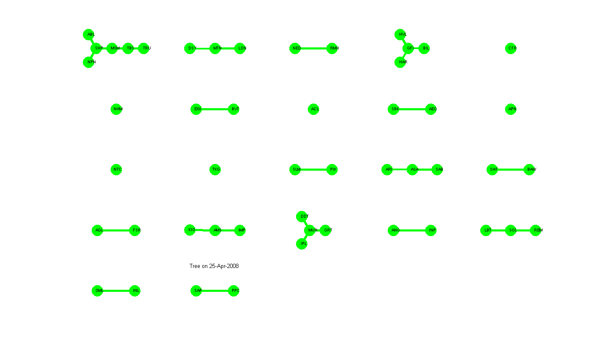
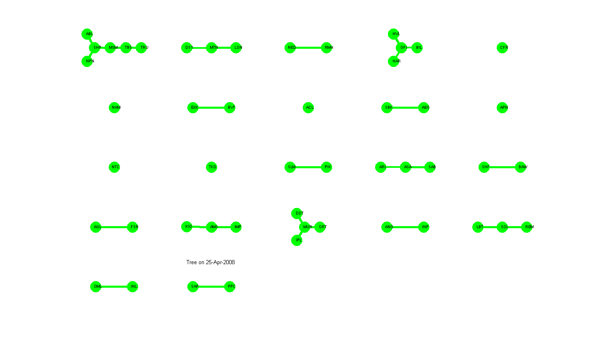

Script file to generate minimal spanning tree
See Also : COVTOOLS, SECTOR
Contents
initialise
clear all; close all; clc;
Input Data and Variables
Initial beta
ib = 1; % Final beta fb = 50; % Number of sweeps between changes in temperature t_steps = 100; % temperature changes every t_steps % Max. number of annealing cycles n_cycles=2; % Cooling Factor for delta_temperature cf = 0.997;
initialise
load('data/JSE_D_LJSEOVER_31Jan1994_22Jan2009');
Keep only the 50 largest stocks by MV
mv = jse_fts{3};
mv = mv('31-Jan-2008::20-Jan-2009');
mv = fts2mat(mv); % MV
tickers = fieldnames(jse_fts{3},1);
[smv, si]= sort(nanmedian(mv),'descend');
sizeidx = si(1:50);
tickers0 = tickers(sizeidx);
mv = mv(:,sizeidx);
xfts = jse_fts{2}; % RI
xfts = xfts.(tickers0);
construct the correlation matrix
find the date range April 2008 - Jan 2009
xfts = xfts('31-Jan-2008::20-Jan-2009'); % find the dates end_date = datenum('22-Jan-2009'); % find continuous time returns rfts = tick2ret(xfts); % convert into matrix x = fts2mat(rfts); % remove the market mode x0 = x; x0(isnan(x0))=0; % -- REMOVE MARKET MODE x0 = average(x0); % --------------------- % covariance matrix : can use EWMA % r0 = corr(x,'rows','pairwise'); [c,s,m]=ewmacov(x0);
Construct the market portfolio
MarketWts = mv ./ repmat(transpose(sum(transpose(mv))),1,size(mv,2)); MarketRet = x .* MarketWts(1:end-1,:); MarketRet = transpose(sum(transpose(MarketRet))); MarketRet(isnan(MarketRet))=0; MarketRet(1) = 1; MarketPrice = cumsum(MarketRet); MarketPrice = fints(rfts.dates,MarketPrice,'JSE',rfts.freq,'Index');
find the 4 accumlated return bins
PriceIndex = ret2tick(rfts);
nt=ntile(fts2mat(PriceIndex)',3)';
ntc = {'red','yellow','green'};
find the 4 accumlated return bins
nt = m;
nt(m>0) = 3;
nt(m<=0) = 1;
ntc = {'red','yellow','green'};
Process the correlation matrices
clear Dmov; aviobj = avifile('JSE_D_LJSEOVER_SPIN_NOMARKET.avi','FPS',1); scrsz = get(0,'ScreenSize'); cxfts = fints; % axes1 = axes(fig,'Position',[0.13 0.688 0.775 0.237]); t0 = 60; for ti=t0:t0+5; % size(s,3), c0 = squeeze(s(:,:,ti)); % remove nan correlations nanidx = isnan(c0); c0(nanidx) = 0; % cleaned covariance matrix Q = size(x,1)/size(x,2); % quality ratio N-dates, M-securities c0 = cov2clean(c0,Q); % convert covariance to correlation matrix % make the correlation matrix positive semi-definite c0 = posdef(c0); [s0,r0]=cov2corr(c0) % Simulated annealing disjoint clustering algo [cx(ti,:),fval]=gamgconfig(r0,300,600,600,true); % Membership Matrix: Rows-Clusters, Columns-Objects disp(cx(ti,:)); % CIXY for cluster CJ CIXY(CJ,:) has the i-th element true if the % i-th element is in cluster CJ otherwise the i-th element is false. % CIXY is of size number of cluster CJ and number objects dim(r0,1). cixy = false(max(cx(ti,:)),size(r0,1)); for cj=1:max(cx(ti,:)), cixy(cj,(cx(ti,:)==cj)) = true; end % clear data structures clear t mst nmst tickersc xy; for cj=1:size(cixy,1) % correlation matrix to distance measure of stocks within cluster if sum(cixy(cj,:))>1, d0 = 1 - r0(cixy(cj,:),cixy(cj,:)); % correlation distance matrix [m,n]=size(d0); d = []; for i=1:n-1, for j=i+1:n, d((i-1)*(m-i/2)+j-i) = d0(i,j); end end % create the linkage vector z0 = linkage(d); % find the minimal spanning tree a0 = adjacency(d); % find the minimal spanning tree using kruskal algo [mst{cj},nmst{cj},t{cj}]=minspantree(a0); % find the coordinates [xy{cj}] = mstcoords(t{cj}); % the tickers tickersc{cj} = tickers0(cixy(cj,:)); else % single point xy{cj} = [0,0]; t{cj} = 1; tickersc{cj} = tickers0(cixy(cj,:)); end end % plot % clf('reset'); fig = figure('Position',scrsz); disjointmstplot(t,xy,[],tickersc,true,nt,{'r','b','g'}); title(sprintf('Tree on %s',datestr(xfts.dates(ti)))); % update cifts if isempty(cxfts) cxfts = fints(xfts.dates(ti),cx(ti,:),tickers0); else cxfts = vertcat(cxfts,fints(xfts.dates(ti),cx(ti,:),tickers0)); end % get movie frame % Dmov(ti-t0+1) = getframe(fig); F = getframe(fig); aviobj = addframe(aviobj,F); % close(fig); end close(fig) aviobj = close(aviobj);
s0 =
Columns 1 through 7
1.0149 1.0088 0.9579 0.9708 0.9662 0.9289 0.9252
Columns 8 through 14
1.0216 0.9802 1.0537 0.9233 1.0587 0.9763 0.9590
Columns 15 through 21
0.9878 0.9727 1.1000 0.8663 0.8722 1.0832 0.9951
Columns 22 through 28
1.0623 0.9473 0.9681 1.0683 1.0197 1.0196 1.0048
Columns 29 through 35
0.9979 1.0258 1.0023 1.1063 0.8799 1.1078 0.9337
Columns 36 through 42
0.8435 0.9712 0.8969 0.8956 0.9222 0.9981 0.9913
Columns 43 through 49
0.9433 0.9474 0.9806 0.8938 0.9070 1.0666 0.9741
Column 50
0.8994
r0 =
Columns 1 through 7
1.0000 0.3286 0.2701 -0.0079 0.2878 0.0004 -0.1024
0.3286 1.0000 0.2990 -0.0723 0.2273 -0.0762 -0.0381
0.2701 0.2990 1.0000 -0.1336 0.2478 -0.0493 -0.0774
-0.0079 -0.0723 -0.1336 1.0000 -0.1198 0.1338 -0.0880
0.2878 0.2273 0.2478 -0.1198 1.0000 0.0294 -0.0751
0.0004 -0.0762 -0.0493 0.1338 0.0294 1.0000 -0.0384
-0.1024 -0.0381 -0.0774 -0.0880 -0.0751 -0.0384 1.0000
0.3010 0.1981 0.2280 -0.0406 0.3037 0.0795 -0.1978
-0.1765 -0.1215 -0.0180 -0.1432 -0.0653 -0.1329 -0.0038
-0.2994 -0.2107 -0.0932 -0.2008 -0.1435 -0.1058 0.0827
-0.1119 -0.0636 -0.0560 0.0648 -0.0945 0.1589 0.0835
0.1498 0.1398 0.1084 -0.1735 0.1407 -0.0688 -0.0013
0.2857 0.2577 0.1977 0.0814 0.1914 0.1269 -0.0770
-0.1259 -0.2299 -0.2221 0.1714 -0.0955 0.1143 0.0300
0.1444 0.0873 0.1742 -0.1673 0.2667 0.1148 -0.0262
0.3297 0.2412 0.1869 0.0529 0.2509 0.0336 -0.1016
-0.2427 -0.1557 -0.0487 -0.1298 -0.1399 -0.1679 -0.0097
-0.0041 0.0058 -0.0415 -0.0221 -0.0485 -0.1556 0.0316
-0.0902 -0.0228 -0.0132 -0.0314 -0.1109 -0.1178 -0.0528
0.3619 0.3262 0.2322 0.1036 0.2338 0.0982 -0.0514
0.0518 -0.1010 -0.0788 0.1210 0.0941 0.1347 -0.0344
-0.3031 -0.2170 -0.1027 -0.1549 -0.1497 -0.0675 0.1048
0.1590 0.1745 0.1840 -0.2258 0.2192 -0.0142 0.0976
-0.1919 -0.1872 -0.0847 -0.1618 -0.0196 0.0124 0.1286
0.3148 0.3258 0.2497 -0.1214 0.2387 -0.1765 0.0260
0.2931 0.2988 0.1832 0.1271 0.1331 0.0554 -0.0354
-0.1857 -0.1903 -0.0844 0.0977 -0.1301 0.0947 -0.1779
-0.2841 -0.2095 -0.0929 -0.1801 -0.1354 -0.0585 0.0502
0.0389 -0.0473 -0.0890 0.0162 0.0042 -0.0597 -0.0487
-0.1786 -0.1120 -0.1695 0.1205 -0.2050 0.1123 0.2105
-0.1460 -0.0259 -0.0525 0.0487 -0.2271 -0.1588 -0.0366
-0.0152 -0.0857 -0.0874 -0.0043 -0.0378 -0.1313 -0.1438
-0.1130 -0.0962 -0.1092 -0.0199 -0.1059 0.0124 0.0539
-0.2371 -0.2861 -0.2215 0.0763 -0.1627 -0.0565 -0.0027
-0.2074 -0.1038 -0.1282 -0.0966 -0.1920 -0.1215 0.1833
0.0149 0.0121 -0.0203 0.0054 0.0087 0.0791 0.0840
-0.2845 -0.3227 -0.2888 0.0580 -0.2136 0.0578 0.0647
-0.0432 0.0051 -0.0330 0.1350 -0.1430 -0.0591 -0.0890
-0.0079 0.0821 0.0164 -0.0289 -0.0683 -0.1519 0.1269
-0.1294 -0.0579 -0.1369 0.0015 -0.1837 -0.1305 0.1666
-0.1606 -0.1006 -0.1594 0.1725 -0.2493 0.0637 0.0194
0.2907 0.2329 0.2315 -0.0753 0.2769 0.0751 -0.1167
-0.0165 -0.1348 -0.0970 0.0857 0.0416 0.0808 -0.0195
-0.1894 -0.1596 -0.1854 0.1456 -0.2455 0.0211 -0.0309
0.2858 0.2773 0.2023 -0.0212 0.1748 -0.0455 -0.0977
-0.0105 0.0593 0.0179 -0.0224 -0.0209 0.0198 0.1744
-0.1322 -0.0314 -0.0693 0.0766 -0.1842 0.0100 0.0817
-0.2201 -0.2891 -0.2319 0.1045 -0.1553 -0.0266 -0.0189
-0.1969 -0.2240 -0.1370 0.0356 -0.0991 0.1923 -0.0379
0.1028 0.0338 0.0428 0.1372 0.0705 0.0493 -0.1316
Columns 8 through 14
0.3010 -0.1765 -0.2994 -0.1119 0.1498 0.2857 -0.1259
0.1981 -0.1215 -0.2107 -0.0636 0.1398 0.2577 -0.2299
0.2280 -0.0180 -0.0932 -0.0560 0.1084 0.1977 -0.2221
-0.0406 -0.1432 -0.2008 0.0648 -0.1735 0.0814 0.1714
0.3037 -0.0653 -0.1435 -0.0945 0.1407 0.1914 -0.0955
0.0795 -0.1329 -0.1058 0.1589 -0.0688 0.1269 0.1143
-0.1978 -0.0038 0.0827 0.0835 -0.0013 -0.0770 0.0300
1.0000 -0.1171 -0.2048 -0.1168 0.1850 0.2249 -0.0908
-0.1171 1.0000 0.3261 -0.0465 -0.1614 -0.2418 -0.0043
-0.2048 0.3261 1.0000 0.0369 -0.0992 -0.3008 -0.0202
-0.1168 -0.0465 0.0369 1.0000 -0.1259 0.0562 0.0139
0.1850 -0.1614 -0.0992 -0.1259 1.0000 0.0837 -0.1829
0.2249 -0.2418 -0.3008 0.0562 0.0837 1.0000 -0.1044
-0.0908 -0.0043 -0.0202 0.0139 -0.1829 -0.1044 1.0000
0.2436 0.0057 0.0032 0.0109 0.0859 0.1139 -0.0466
0.2728 -0.1743 -0.3040 -0.1200 0.0938 0.2400 -0.0184
-0.1878 0.3862 0.3875 -0.0328 -0.2094 -0.2937 -0.0177
-0.0604 0.0186 -0.0013 -0.1399 0.0755 -0.0942 0.0024
-0.0756 0.0992 0.1187 -0.0343 0.0237 -0.0953 -0.1055
0.2311 -0.2616 -0.3719 0.0207 0.0448 0.3629 -0.0790
0.0995 -0.0358 -0.1158 -0.0565 -0.1232 0.0072 0.2674
-0.2361 0.3317 0.4092 0.0832 -0.2024 -0.2837 0.0302
0.1410 -0.0441 -0.0162 -0.0153 0.1919 0.1038 -0.1342
-0.1092 0.2080 0.2775 0.0475 -0.1016 -0.2012 0.1005
0.1559 -0.0464 -0.1702 -0.1908 0.1277 0.1369 -0.1322
0.1402 -0.2566 -0.3391 0.0398 0.0464 0.3214 -0.1078
-0.0305 0.1605 0.1696 0.0901 -0.1940 -0.0929 0.0384
-0.1587 0.2634 0.3789 0.0568 -0.0393 -0.2554 -0.0387
0.0886 -0.1264 -0.1178 -0.1918 0.2616 -0.0455 0.0494
-0.2767 -0.0851 0.0157 0.2542 -0.1640 -0.0063 0.0984
-0.2017 0.1197 0.1293 0.0100 -0.0841 -0.1157 -0.1118
0.0870 -0.0063 -0.0155 -0.2520 0.2407 -0.1302 0.0074
-0.0690 -0.0745 0.0356 0.0389 0.1538 -0.0534 -0.0213
-0.1866 0.2593 0.2099 -0.0787 -0.2938 -0.2987 0.2686
-0.2558 0.0672 0.1847 0.0463 0.0459 -0.1776 -0.0384
-0.0035 -0.1343 -0.0755 0.0803 0.0823 0.0742 0.0032
-0.1782 0.0358 0.1448 0.0423 -0.0243 -0.2192 0.1911
-0.0881 0.0155 -0.0182 0.0064 -0.0896 -0.0084 -0.0425
-0.1646 0.0524 0.0321 -0.0120 -0.0705 -0.0452 -0.0455
-0.2383 -0.0131 0.0485 -0.0045 0.0310 -0.1263 0.0148
-0.1836 -0.1196 -0.0268 0.1632 -0.0194 0.0058 -0.0101
0.3347 -0.1791 -0.2118 -0.0575 0.2563 0.2546 -0.1535
0.0315 0.0488 -0.0197 -0.0582 -0.1591 -0.0676 0.2488
-0.1580 -0.0439 0.0309 0.0756 -0.0086 -0.0784 0.0240
0.2335 -0.2058 -0.2545 -0.1073 0.2744 0.2304 -0.1955
-0.1274 -0.0311 0.0041 0.1380 -0.0835 0.0485 -0.0149
-0.2082 -0.0041 0.0554 0.1702 -0.1200 -0.0086 -0.0403
-0.1583 0.2117 0.1645 -0.0786 -0.2652 -0.2717 0.2822
-0.0229 0.0047 0.1214 0.1643 -0.0201 -0.0506 0.0632
0.0975 0.0219 -0.1062 -0.0476 -0.1769 0.0661 0.0983
Columns 15 through 21
0.1444 0.3297 -0.2427 -0.0041 -0.0902 0.3619 0.0518
0.0873 0.2412 -0.1557 0.0058 -0.0228 0.3262 -0.1010
0.1742 0.1869 -0.0487 -0.0415 -0.0132 0.2322 -0.0788
-0.1673 0.0529 -0.1298 -0.0221 -0.0314 0.1036 0.1210
0.2667 0.2509 -0.1399 -0.0485 -0.1109 0.2338 0.0941
0.1148 0.0336 -0.1679 -0.1556 -0.1178 0.0982 0.1347
-0.0262 -0.1016 -0.0097 0.0316 -0.0528 -0.0514 -0.0344
0.2436 0.2728 -0.1878 -0.0604 -0.0756 0.2311 0.0995
0.0057 -0.1743 0.3862 0.0186 0.0992 -0.2616 -0.0358
0.0032 -0.3040 0.3875 -0.0013 0.1187 -0.3719 -0.1158
0.0109 -0.1200 -0.0328 -0.1399 -0.0343 0.0207 -0.0565
0.0859 0.0938 -0.2094 0.0755 0.0237 0.0448 -0.1232
0.1139 0.2400 -0.2937 -0.0942 -0.0953 0.3629 0.0072
-0.0466 -0.0184 -0.0177 0.0024 -0.1055 -0.0790 0.2674
1.0000 0.1213 -0.0652 -0.1278 -0.1292 0.1072 0.1085
0.1213 1.0000 -0.2437 0.0048 -0.1194 0.3222 0.1458
-0.0652 -0.2437 1.0000 0.0308 0.1562 -0.3264 -0.0936
-0.1278 0.0048 0.0308 1.0000 0.0543 -0.0660 -0.0240
-0.1292 -0.1194 0.1562 0.0543 1.0000 -0.1399 -0.1761
0.1072 0.3222 -0.3264 -0.0660 -0.1399 1.0000 0.0643
0.1085 0.1458 -0.0936 -0.0240 -0.1761 0.0643 1.0000
0.0078 -0.2949 0.3920 -0.0323 0.0782 -0.3316 -0.0643
0.2332 0.1039 -0.1058 -0.0301 -0.0903 0.1234 -0.0232
0.1343 -0.1606 0.2048 -0.0426 -0.0484 -0.2229 0.0850
0.0724 0.2655 -0.0932 0.1072 -0.0566 0.2551 0.0133
-0.0029 0.2453 -0.2910 -0.0341 -0.0719 0.3937 -0.0298
-0.0336 -0.1664 0.2223 -0.1070 0.1090 -0.1827 -0.0260
0.0168 -0.2940 0.3178 -0.0242 0.1207 -0.3510 -0.1330
-0.0712 0.0728 -0.1543 0.1445 0.0197 -0.0609 0.0545
-0.1244 -0.1588 -0.0634 -0.0631 -0.0514 -0.0046 -0.0397
-0.2731 -0.1792 0.2173 0.0749 0.2138 -0.1485 -0.2502
-0.1188 0.0119 0.0025 0.1705 0.1218 -0.1764 -0.0062
-0.0661 -0.1159 -0.0664 0.0256 0.0505 -0.1191 -0.1028
-0.1118 -0.1350 0.3018 0.0681 0.0161 -0.2767 0.2027
-0.1492 -0.2207 0.1107 0.0825 0.0916 -0.2095 -0.1757
0.0331 0.0105 -0.1620 -0.0319 -0.0626 0.0674 -0.0054
-0.1046 -0.2096 0.0572 0.0283 0.0219 -0.2874 0.0625
-0.2085 -0.0534 0.0768 0.0368 0.1266 -0.0178 -0.1210
-0.1307 -0.0291 0.0811 0.0860 0.0342 0.0168 -0.0907
-0.2147 -0.1230 0.0200 0.1289 0.0604 -0.1123 -0.1075
-0.2334 -0.1639 -0.0649 -0.0151 0.0991 -0.0579 -0.1725
0.2241 0.2365 -0.2499 -0.0614 -0.0695 0.2505 0.0049
0.0702 0.0721 0.0155 -0.0064 -0.1267 -0.0205 0.3008
-0.2294 -0.1735 0.0147 0.0240 0.1253 -0.1514 -0.1277
0.0331 0.2206 -0.2429 0.0424 0.0127 0.2484 -0.0991
0.0062 -0.0306 -0.0352 -0.0417 -0.0652 0.0883 -0.0414
-0.1570 -0.1538 0.0496 -0.0334 0.0681 -0.0285 -0.1630
-0.1092 -0.1123 0.2455 0.0637 0.0033 -0.2545 0.2211
0.0611 -0.1738 0.0156 -0.1340 0.0113 -0.1637 -0.0042
0.0201 0.1374 0.0146 -0.0296 -0.0524 0.1200 0.1690
Columns 22 through 28
-0.3031 0.1590 -0.1919 0.3148 0.2931 -0.1857 -0.2841
-0.2170 0.1745 -0.1872 0.3258 0.2988 -0.1903 -0.2095
-0.1027 0.1840 -0.0847 0.2497 0.1832 -0.0844 -0.0929
-0.1549 -0.2258 -0.1618 -0.1214 0.1271 0.0977 -0.1801
-0.1497 0.2192 -0.0196 0.2387 0.1331 -0.1301 -0.1354
-0.0675 -0.0142 0.0124 -0.1765 0.0554 0.0947 -0.0585
0.1048 0.0976 0.1286 0.0260 -0.0354 -0.1779 0.0502
-0.2361 0.1410 -0.1092 0.1559 0.1402 -0.0305 -0.1587
0.3317 -0.0441 0.2080 -0.0464 -0.2566 0.1605 0.2634
0.4092 -0.0162 0.2775 -0.1702 -0.3391 0.1696 0.3789
0.0832 -0.0153 0.0475 -0.1908 0.0398 0.0901 0.0568
-0.2024 0.1919 -0.1016 0.1277 0.0464 -0.1940 -0.0393
-0.2837 0.1038 -0.2012 0.1369 0.3214 -0.0929 -0.2554
0.0302 -0.1342 0.1005 -0.1322 -0.1078 0.0384 -0.0387
0.0078 0.2332 0.1343 0.0724 -0.0029 -0.0336 0.0168
-0.2949 0.1039 -0.1606 0.2655 0.2453 -0.1664 -0.2940
0.3920 -0.1058 0.2048 -0.0932 -0.2910 0.2223 0.3178
-0.0323 -0.0301 -0.0426 0.1072 -0.0341 -0.1070 -0.0242
0.0782 -0.0903 -0.0484 -0.0566 -0.0719 0.1090 0.1207
-0.3316 0.1234 -0.2229 0.2551 0.3937 -0.1827 -0.3510
-0.0643 -0.0232 0.0850 0.0133 -0.0298 -0.0260 -0.1330
1.0000 -0.0320 0.3008 -0.1732 -0.3114 0.1765 0.3509
-0.0320 1.0000 0.0761 0.1920 0.0604 -0.2068 -0.0158
0.3008 0.0761 1.0000 -0.0988 -0.2636 0.0408 0.2346
-0.1732 0.1920 -0.0988 1.0000 0.2047 -0.3027 -0.2155
-0.3114 0.0604 -0.2636 0.2047 1.0000 -0.1552 -0.3145
0.1765 -0.2068 0.0408 -0.3027 -0.1552 1.0000 0.1901
0.3509 -0.0158 0.2346 -0.2155 -0.3145 0.1901 1.0000
-0.1964 -0.0207 -0.1013 0.0347 -0.0481 -0.1126 -0.0800
0.0792 -0.0578 0.0478 -0.1704 0.0463 -0.0230 0.0115
0.1083 -0.1924 -0.1059 -0.0822 -0.0317 0.1498 0.1156
-0.1185 -0.1000 -0.1059 -0.0088 -0.1396 0.0177 0.0178
-0.0132 -0.0093 -0.0121 -0.1369 -0.0683 -0.0061 0.0784
0.2528 -0.2054 0.1966 -0.1166 -0.2815 0.1524 0.1367
0.1592 -0.0070 0.0812 -0.0741 -0.1295 -0.0559 0.1676
-0.0749 0.0712 -0.0103 -0.0238 0.0653 -0.0932 -0.0486
0.1280 -0.1339 0.1292 -0.2819 -0.2486 0.1018 0.1603
-0.0209 -0.1847 -0.1541 -0.0573 0.0563 0.1262 -0.0153
0.0551 0.0035 -0.0117 0.1449 0.0556 -0.1261 -0.0226
0.0352 -0.0495 -0.0120 0.0070 -0.0347 -0.1266 0.0258
-0.0366 -0.1768 -0.1387 -0.2415 0.0494 0.1130 0.0222
-0.2523 0.1932 -0.1275 0.1551 0.1846 -0.0998 -0.1534
0.0288 -0.0488 0.1243 -0.0095 -0.0945 0.0142 -0.0525
0.0024 -0.2063 -0.0999 -0.2477 -0.0526 0.1545 0.0719
-0.3100 0.1112 -0.2512 0.2164 0.2455 -0.1550 -0.2068
0.0547 0.0829 0.0536 0.0475 0.0911 -0.1157 -0.0225
0.0819 -0.0939 -0.0373 -0.1264 0.0476 0.0697 0.0550
0.2025 -0.2106 0.1687 -0.1310 -0.2617 0.1480 0.1054
0.1114 -0.0646 0.0997 -0.3445 -0.1536 0.2307 0.1788
-0.0585 -0.0880 -0.0480 0.0576 0.0732 0.0764 -0.1277
Columns 29 through 35
0.0389 -0.1786 -0.1460 -0.0152 -0.1130 -0.2371 -0.2074
-0.0473 -0.1120 -0.0259 -0.0857 -0.0962 -0.2861 -0.1038
-0.0890 -0.1695 -0.0525 -0.0874 -0.1092 -0.2215 -0.1282
0.0162 0.1205 0.0487 -0.0043 -0.0199 0.0763 -0.0966
0.0042 -0.2050 -0.2271 -0.0378 -0.1059 -0.1627 -0.1920
-0.0597 0.1123 -0.1588 -0.1313 0.0124 -0.0565 -0.1215
-0.0487 0.2105 -0.0366 -0.1438 0.0539 -0.0027 0.1833
0.0886 -0.2767 -0.2017 0.0870 -0.0690 -0.1866 -0.2558
-0.1264 -0.0851 0.1197 -0.0063 -0.0745 0.2593 0.0672
-0.1178 0.0157 0.1293 -0.0155 0.0356 0.2099 0.1847
-0.1918 0.2542 0.0100 -0.2520 0.0389 -0.0787 0.0463
0.2616 -0.1640 -0.0841 0.2407 0.1538 -0.2938 0.0459
-0.0455 -0.0063 -0.1157 -0.1302 -0.0534 -0.2987 -0.1776
0.0494 0.0984 -0.1118 0.0074 -0.0213 0.2686 -0.0384
-0.0712 -0.1244 -0.2731 -0.1188 -0.0661 -0.1118 -0.1492
0.0728 -0.1588 -0.1792 0.0119 -0.1159 -0.1350 -0.2207
-0.1543 -0.0634 0.2173 0.0025 -0.0664 0.3018 0.1107
0.1445 -0.0631 0.0749 0.1705 0.0256 0.0681 0.0825
0.0197 -0.0514 0.2138 0.1218 0.0505 0.0161 0.0916
-0.0609 -0.0046 -0.1485 -0.1764 -0.1191 -0.2767 -0.2095
0.0545 -0.0397 -0.2502 -0.0062 -0.1028 0.2027 -0.1757
-0.1964 0.0792 0.1083 -0.1185 -0.0132 0.2528 0.1592
-0.0207 -0.0578 -0.1924 -0.1000 -0.0093 -0.2054 -0.0070
-0.1013 0.0478 -0.1059 -0.1059 -0.0121 0.1966 0.0812
0.0347 -0.1704 -0.0822 -0.0088 -0.1369 -0.1166 -0.0741
-0.0481 0.0463 -0.0317 -0.1396 -0.0683 -0.2815 -0.1295
-0.1126 -0.0230 0.1498 0.0177 -0.0061 0.1524 -0.0559
-0.0800 0.0115 0.1156 0.0178 0.0784 0.1367 0.1676
1.0000 -0.1526 -0.0475 0.3663 0.1277 -0.0115 0.0198
-0.1526 1.0000 0.0423 -0.2617 0.0696 -0.0118 0.1537
-0.0475 0.0423 1.0000 0.0739 0.0394 0.0531 0.1460
0.3663 -0.2617 0.0739 1.0000 0.1204 0.0689 0.0225
0.1277 0.0696 0.0394 0.1204 1.0000 -0.0873 0.1320
-0.0115 -0.0118 0.0531 0.0689 -0.0873 1.0000 0.0211
0.0198 0.1537 0.1460 0.0225 0.1320 0.0211 1.0000
0.0220 0.1124 -0.0854 -0.0604 0.0707 -0.1317 0.0345
0.1283 0.1134 0.0134 0.1403 0.1496 0.1895 0.1354
-0.0194 0.0218 0.2394 0.0579 0.0012 0.0274 0.0234
-0.0761 0.0927 0.1216 -0.0905 -0.0447 0.0331 0.1172
0.0780 0.1504 0.1357 0.0563 0.0992 0.0371 0.2184
0.0096 0.2261 0.2077 0.0127 0.1558 -0.0904 0.1325
0.0819 -0.1864 -0.1835 0.0418 -0.0054 -0.3040 -0.1737
0.0230 -0.0361 -0.1767 -0.0024 -0.1017 0.2583 -0.1219
0.0790 0.1190 0.2084 0.1315 0.1489 0.0135 0.1181
0.1429 -0.1585 -0.0211 0.1255 0.0226 -0.3091 -0.0874
-0.1663 0.2121 -0.0216 -0.2600 -0.0232 -0.0676 0.0793
-0.1440 0.2298 0.1836 -0.1504 0.0474 -0.0405 0.1278
0.0253 -0.0140 0.0295 0.0952 -0.0691 0.4515 0.0024
-0.0240 0.0917 -0.0253 -0.0070 0.1218 0.0007 0.0163
-0.0608 -0.0828 -0.0380 -0.0404 -0.1561 0.1290 -0.1883
Columns 36 through 42
0.0149 -0.2845 -0.0432 -0.0079 -0.1294 -0.1606 0.2907
0.0121 -0.3227 0.0051 0.0821 -0.0579 -0.1006 0.2329
-0.0203 -0.2888 -0.0330 0.0164 -0.1369 -0.1594 0.2315
0.0054 0.0580 0.1350 -0.0289 0.0015 0.1725 -0.0753
0.0087 -0.2136 -0.1430 -0.0683 -0.1837 -0.2493 0.2769
0.0791 0.0578 -0.0591 -0.1519 -0.1305 0.0637 0.0751
0.0840 0.0647 -0.0890 0.1269 0.1666 0.0194 -0.1167
-0.0035 -0.1782 -0.0881 -0.1646 -0.2383 -0.1836 0.3347
-0.1343 0.0358 0.0155 0.0524 -0.0131 -0.1196 -0.1791
-0.0755 0.1448 -0.0182 0.0321 0.0485 -0.0268 -0.2118
0.0803 0.0423 0.0064 -0.0120 -0.0045 0.1632 -0.0575
0.0823 -0.0243 -0.0896 -0.0705 0.0310 -0.0194 0.2563
0.0742 -0.2192 -0.0084 -0.0452 -0.1263 0.0058 0.2546
0.0032 0.1911 -0.0425 -0.0455 0.0148 -0.0101 -0.1535
0.0331 -0.1046 -0.2085 -0.1307 -0.2147 -0.2334 0.2241
0.0105 -0.2096 -0.0534 -0.0291 -0.1230 -0.1639 0.2365
-0.1620 0.0572 0.0768 0.0811 0.0200 -0.0649 -0.2499
-0.0319 0.0283 0.0368 0.0860 0.1289 -0.0151 -0.0614
-0.0626 0.0219 0.1266 0.0342 0.0604 0.0991 -0.0695
0.0674 -0.2874 -0.0178 0.0168 -0.1123 -0.0579 0.2505
-0.0054 0.0625 -0.1210 -0.0907 -0.1075 -0.1725 0.0049
-0.0749 0.1280 -0.0209 0.0551 0.0352 -0.0366 -0.2523
0.0712 -0.1339 -0.1847 0.0035 -0.0495 -0.1768 0.1932
-0.0103 0.1292 -0.1541 -0.0117 -0.0120 -0.1387 -0.1275
-0.0238 -0.2819 -0.0573 0.1449 0.0070 -0.2415 0.1551
0.0653 -0.2486 0.0563 0.0556 -0.0347 0.0494 0.1846
-0.0932 0.1018 0.1262 -0.1261 -0.1266 0.1130 -0.0998
-0.0486 0.1603 -0.0153 -0.0226 0.0258 0.0222 -0.1534
0.0220 0.1283 -0.0194 -0.0761 0.0780 0.0096 0.0819
0.1124 0.1134 0.0218 0.0927 0.1504 0.2261 -0.1864
-0.0854 0.0134 0.2394 0.1216 0.1357 0.2077 -0.1835
-0.0604 0.1403 0.0579 -0.0905 0.0563 0.0127 0.0418
0.0707 0.1496 0.0012 -0.0447 0.0992 0.1558 -0.0054
-0.1317 0.1895 0.0274 0.0331 0.0371 -0.0904 -0.3040
0.0345 0.1354 0.0234 0.1172 0.2184 0.1325 -0.1737
1.0000 0.0290 -0.0611 -0.0188 0.0334 0.0633 0.0557
0.0290 1.0000 -0.0154 -0.0757 0.1048 0.1322 -0.1783
-0.0611 -0.0154 1.0000 0.0565 0.0556 0.1685 -0.0956
-0.0188 -0.0757 0.0565 1.0000 0.1500 0.0063 -0.1292
0.0334 0.1048 0.0556 0.1500 1.0000 0.1326 -0.1708
0.0633 0.1322 0.1685 0.0063 0.1326 1.0000 -0.1080
0.0557 -0.1783 -0.0956 -0.1292 -0.1708 -0.1080 1.0000
-0.0365 0.0811 -0.0927 -0.0556 -0.0760 -0.1634 -0.0644
0.0131 0.1777 0.1618 -0.0257 0.1142 0.2920 -0.1256
0.0375 -0.1911 0.0240 -0.0184 -0.0340 -0.0048 0.2709
0.0687 -0.0571 -0.0394 0.1192 0.0736 0.0279 -0.0601
0.0292 0.0251 0.1211 0.0938 0.1090 0.2208 -0.1430
-0.1151 0.2035 0.0239 0.0037 0.0284 -0.0717 -0.2742
0.0485 0.1984 -0.0234 -0.1830 -0.0778 0.1463 -0.0140
-0.0769 -0.0902 0.0412 -0.0206 -0.1251 -0.0991 0.0046
Columns 43 through 49
-0.0165 -0.1894 0.2858 -0.0105 -0.1322 -0.2201 -0.1969
-0.1348 -0.1596 0.2773 0.0593 -0.0314 -0.2891 -0.2240
-0.0970 -0.1854 0.2023 0.0179 -0.0693 -0.2319 -0.1370
0.0857 0.1456 -0.0212 -0.0224 0.0766 0.1045 0.0356
0.0416 -0.2455 0.1748 -0.0209 -0.1842 -0.1553 -0.0991
0.0808 0.0211 -0.0455 0.0198 0.0100 -0.0266 0.1923
-0.0195 -0.0309 -0.0977 0.1744 0.0817 -0.0189 -0.0379
0.0315 -0.1580 0.2335 -0.1274 -0.2082 -0.1583 -0.0229
0.0488 -0.0439 -0.2058 -0.0311 -0.0041 0.2117 0.0047
-0.0197 0.0309 -0.2545 0.0041 0.0554 0.1645 0.1214
-0.0582 0.0756 -0.1073 0.1380 0.1702 -0.0786 0.1643
-0.1591 -0.0086 0.2744 -0.0835 -0.1200 -0.2652 -0.0201
-0.0676 -0.0784 0.2304 0.0485 -0.0086 -0.2717 -0.0506
0.2488 0.0240 -0.1955 -0.0149 -0.0403 0.2822 0.0632
0.0702 -0.2294 0.0331 0.0062 -0.1570 -0.1092 0.0611
0.0721 -0.1735 0.2206 -0.0306 -0.1538 -0.1123 -0.1738
0.0155 0.0147 -0.2429 -0.0352 0.0496 0.2455 0.0156
-0.0064 0.0240 0.0424 -0.0417 -0.0334 0.0637 -0.1340
-0.1267 0.1253 0.0127 -0.0652 0.0681 0.0033 0.0113
-0.0205 -0.1514 0.2484 0.0883 -0.0285 -0.2545 -0.1637
0.3008 -0.1277 -0.0991 -0.0414 -0.1630 0.2211 -0.0042
0.0288 0.0024 -0.3100 0.0547 0.0819 0.2025 0.1114
-0.0488 -0.2063 0.1112 0.0829 -0.0939 -0.2106 -0.0646
0.1243 -0.0999 -0.2512 0.0536 -0.0373 0.1687 0.0997
-0.0095 -0.2477 0.2164 0.0475 -0.1264 -0.1310 -0.3445
-0.0945 -0.0526 0.2455 0.0911 0.0476 -0.2617 -0.1536
0.0142 0.1545 -0.1550 -0.1157 0.0697 0.1480 0.2307
-0.0525 0.0719 -0.2068 -0.0225 0.0550 0.1054 0.1788
0.0230 0.0790 0.1429 -0.1663 -0.1440 0.0253 -0.0240
-0.0361 0.1190 -0.1585 0.2121 0.2298 -0.0140 0.0917
-0.1767 0.2084 -0.0211 -0.0216 0.1836 0.0295 -0.0253
-0.0024 0.1315 0.1255 -0.2600 -0.1504 0.0952 -0.0070
-0.1017 0.1489 0.0226 -0.0232 0.0474 -0.0691 0.1218
0.2583 0.0135 -0.3091 -0.0676 -0.0405 0.4515 0.0007
-0.1219 0.1181 -0.0874 0.0793 0.1278 0.0024 0.0163
-0.0365 0.0131 0.0375 0.0687 0.0292 -0.1151 0.0485
0.0811 0.1777 -0.1911 -0.0571 0.0251 0.2035 0.1984
-0.0927 0.1618 0.0240 -0.0394 0.1211 0.0239 -0.0234
-0.0556 -0.0257 -0.0184 0.1192 0.0938 0.0037 -0.1830
-0.0760 0.1142 -0.0340 0.0736 0.1090 0.0284 -0.0778
-0.1634 0.2920 -0.0048 0.0279 0.2208 -0.0717 0.1463
-0.0644 -0.1256 0.2709 -0.0601 -0.1430 -0.2742 -0.0140
1.0000 -0.1063 -0.1499 -0.0393 -0.1318 0.2627 -0.0048
-0.1063 1.0000 -0.0314 -0.0568 0.1473 0.0302 0.1470
-0.1499 -0.0314 1.0000 -0.0560 -0.0693 -0.2830 -0.1265
-0.0393 -0.0568 -0.0560 1.0000 0.1174 -0.0844 -0.0478
-0.1318 0.1473 -0.0693 0.1174 1.0000 -0.0524 0.0518
0.2627 0.0302 -0.2830 -0.0844 -0.0524 1.0000 0.0200
-0.0048 0.1470 -0.1265 -0.0478 0.0518 0.0200 1.0000
0.1504 -0.0762 -0.0195 -0.0461 -0.0618 0.1294 -0.0689
Column 50
0.1028
0.0338
0.0428
0.1372
0.0705
0.0493
-0.1316
0.0975
0.0219
-0.1062
-0.0476
-0.1769
0.0661
0.0983
0.0201
0.1374
0.0146
-0.0296
-0.0524
0.1200
0.1690
-0.0585
-0.0880
-0.0480
0.0576
0.0732
0.0764
-0.1277
-0.0608
-0.0828
-0.0380
-0.0404
-0.1561
0.1290
-0.1883
-0.0769
-0.0902
0.0412
-0.0206
-0.1251
-0.0991
0.0046
0.1504
-0.0762
-0.0195
-0.0461
-0.0618
0.1294
-0.0689
1.0000
Best Mean Stall
Generation f-count f(x) f(x) Generations
1 600 -0.4772 -0.2139 0
2 900 -0.4772 -0.2397 1
3 1200 -0.4772 -0.2809 2
4 1500 -0.4772 -0.2881 3
5 1800 -0.4772 -0.289 4
6 2100 -0.4772 -0.288 5
7 2400 -0.4772 -0.2858 6
8 2700 -0.4772 -0.2979 7
9 3000 -0.4772 -0.286 8
10 3300 -0.4772 -0.2827 9
11 3600 -0.4772 -0.2925 10
12 3900 -0.4772 -0.2902 11
13 4200 -0.4772 -0.2833 12
14 4500 -0.4772 -0.2869 13
15 4800 -0.4772 -0.2839 14
16 5100 -0.4772 -0.2847 15
17 5400 -0.4772 -0.2765 16
18 5700 -0.4772 -0.2842 17
19 6000 -0.4772 -0.2888 18
20 6300 -0.4772 -0.2891 19
21 6600 -0.4772 -0.2813 20
22 6900 -0.4772 -0.2866 21
23 7200 -0.4772 -0.2832 22
24 7500 -0.4772 -0.2858 23
25 7800 -0.4772 -0.2801 24
26 8100 -0.4772 -0.2895 25
27 8400 -0.4772 -0.2819 26
28 8700 -0.4772 -0.2858 27
29 9000 -0.4772 -0.2878 28
30 9300 -0.4772 -0.284 29
Best Mean Stall
Generation f-count f(x) f(x) Generations
31 9600 -0.4772 -0.2894 30
32 9900 -0.4772 -0.2812 31
33 10200 -0.4772 -0.2846 32
34 10500 -0.4772 -0.2829 33
35 10800 -0.4772 -0.2837 34
36 11100 -0.4772 -0.286 35
37 11400 -0.4772 -0.2798 36
38 11700 -0.4772 -0.2777 37
39 12000 -0.4772 -0.28 38
40 12300 -0.4772 -0.2798 39
41 12600 -0.4772 -0.2826 40
42 12900 -0.4772 -0.2778 41
43 13200 -0.4772 -0.2881 42
44 13500 -0.4772 -0.2792 43
45 13800 -0.4772 -0.2816 44
46 14100 -0.4772 -0.2824 45
47 14400 -0.4772 -0.2872 46
48 14700 -0.4772 -0.2782 47
49 15000 -0.4772 -0.2799 48
50 15300 -0.4772 -0.2782 49
51 15600 -0.4772 -0.2872 50
52 15900 -0.4772 -0.2814 51
53 16200 -0.4772 -0.2864 52
54 16500 -0.4772 -0.294 53
55 16800 -0.4772 -0.2874 54
56 17100 -0.4772 -0.2863 55
57 17400 -0.4772 -0.2798 56
58 17700 -0.4772 -0.2852 57
59 18000 -0.4772 -0.2845 58
60 18300 -0.4772 -0.2873 59
Best Mean Stall
Generation f-count f(x) f(x) Generations
61 18600 -0.4772 -0.2804 60
62 18900 -0.4772 -0.2821 61
63 19200 -0.4772 -0.2829 62
64 19500 -0.4772 -0.2835 63
65 19800 -0.4772 -0.2826 64
66 20100 -0.4772 -0.2862 65
67 20400 -0.4772 -0.286 66
68 20700 -0.4772 -0.2862 67
69 21000 -0.4772 -0.288 68
70 21300 -0.4772 -0.2764 69
71 21600 -0.4772 -0.2753 70
72 21900 -0.4772 -0.2784 71
73 22200 -0.4772 -0.2796 72
74 22500 -0.4772 -0.2888 73
75 22800 -0.4772 -0.2838 74
76 23100 -0.4772 -0.2823 75
77 23400 -0.4772 -0.2909 76
78 23700 -0.4772 -0.2761 77
79 24000 -0.4772 -0.288 78
80 24300 -0.4772 -0.284 79
81 24600 -0.4772 -0.2859 80
82 24900 -0.4772 -0.2952 81
83 25200 -0.4772 -0.2894 82
84 25500 -0.4772 -0.287 83
85 25800 -0.4772 -0.2902 84
86 26100 -0.4772 -0.2947 85
87 26400 -0.4772 -0.296 86
88 26700 -0.4772 -0.2881 87
89 27000 -0.4772 -0.2883 88
90 27300 -0.4772 -0.2932 89
Best Mean Stall
Generation f-count f(x) f(x) Generations
91 27600 -0.4772 -0.2889 90
92 27900 -0.4772 -0.295 91
93 28200 -0.4772 -0.2928 92
94 28500 -0.4772 -0.2867 93
95 28800 -0.4772 -0.2896 94
96 29100 -0.4772 -0.2869 95
97 29400 -0.4772 -0.2881 96
98 29700 -0.4772 -0.2958 97
99 30000 -0.4772 -0.2969 98
100 30300 -0.4772 -0.2962 99
101 30600 -0.4772 -0.2939 100
102 30900 -0.4772 -0.289 101
103 31200 -0.4772 -0.2932 102
104 31500 -0.4772 -0.2901 103
105 31800 -0.4772 -0.2934 104
106 32100 -0.4772 -0.3018 105
107 32400 -0.4772 -0.2929 106
108 32700 -0.4772 -0.2993 107
109 33000 -0.4772 -0.2933 108
110 33300 -0.4772 -0.2973 109
111 33600 -0.4772 -0.2877 110
112 33900 -0.4772 -0.2909 111
113 34200 -0.4772 -0.2949 112
114 34500 -0.4772 -0.291 113
115 34800 -0.4772 -0.2951 114
116 35100 -0.4772 -0.2936 115
117 35400 -0.4772 -0.2881 116
118 35700 -0.5028 -0.2914 0
119 36000 -0.5501 -0.2905 0
120 36300 -0.5501 -0.3007 1
Best Mean Stall
Generation f-count f(x) f(x) Generations
121 36600 -0.5501 -0.3052 2
122 36900 -0.5501 -0.3142 3
123 37200 -0.5501 -0.3099 4
124 37500 -0.5501 -0.3142 5
125 37800 -0.5501 -0.3086 6
126 38100 -0.5501 -0.3057 7
127 38400 -0.5501 -0.313 8
128 38700 -0.5501 -0.3199 9
129 39000 -0.5501 -0.3186 10
130 39300 -0.5501 -0.3294 11
131 39600 -0.5501 -0.313 12
132 39900 -0.5501 -0.3287 13
133 40200 -0.5501 -0.328 14
134 40500 -0.5501 -0.3208 15
135 40800 -0.5501 -0.3307 16
136 41100 -0.5501 -0.328 17
137 41400 -0.5501 -0.323 18
138 41700 -0.5501 -0.324 19
139 42000 -0.5501 -0.3242 20
140 42300 -0.5501 -0.3236 21
141 42600 -0.5501 -0.3405 22
142 42900 -0.5501 -0.3239 23
143 43200 -0.5501 -0.3295 24
144 43500 -0.5501 -0.3411 25
145 43800 -0.5501 -0.338 26
146 44100 -0.5501 -0.3252 27
147 44400 -0.5501 -0.3344 28
148 44700 -0.5501 -0.3309 29
149 45000 -0.5501 -0.3279 30
150 45300 -0.5501 -0.3252 31
Best Mean Stall
Generation f-count f(x) f(x) Generations
151 45600 -0.5501 -0.3216 32
152 45900 -0.5501 -0.3261 33
153 46200 -0.5501 -0.326 34
154 46500 -0.5501 -0.3321 35
155 46800 -0.5501 -0.3389 36
156 47100 -0.5501 -0.3468 37
157 47400 -0.5501 -0.3265 38
158 47700 -0.5501 -0.3387 39
159 48000 -0.5501 -0.3418 40
160 48300 -0.5501 -0.3337 41
161 48600 -0.5501 -0.338 42
162 48900 -0.5501 -0.3334 43
163 49200 -0.5501 -0.3357 44
164 49500 -0.5501 -0.3236 45
165 49800 -0.5501 -0.3357 46
166 50100 -0.5501 -0.3377 47
167 50400 -0.5501 -0.332 48
168 50700 -0.5501 -0.331 49
169 51000 -0.5501 -0.3383 50
170 51300 -0.5501 -0.3374 51
171 51600 -0.5501 -0.3295 52
172 51900 -0.5501 -0.3302 53
173 52200 -0.5501 -0.3311 54
174 52500 -0.5501 -0.3334 55
175 52800 -0.5501 -0.3389 56
176 53100 -0.5501 -0.3366 57
177 53400 -0.5501 -0.3243 58
178 53700 -0.5501 -0.3299 59
179 54000 -0.5501 -0.3331 60
180 54300 -0.5533 -0.3396 0
Best Mean Stall
Generation f-count f(x) f(x) Generations
181 54600 -0.5533 -0.3405 1
182 54900 -0.5597 -0.327 0
183 55200 -0.5597 -0.3404 1
184 55500 -0.5597 -0.3339 2
185 55800 -0.5597 -0.3457 3
186 56100 -0.5597 -0.3466 4
187 56400 -0.5597 -0.3553 5
188 56700 -0.5597 -0.3544 6
189 57000 -0.5597 -0.339 7
190 57300 -0.5597 -0.337 8
191 57600 -0.5597 -0.3466 9
192 57900 -0.5597 -0.3458 10
193 58200 -0.5597 -0.3372 11
194 58500 -0.5597 -0.3396 12
195 58800 -0.5597 -0.3483 13
196 59100 -0.5597 -0.339 14
197 59400 -0.5597 -0.3397 15
198 59700 -0.5597 -0.3311 16
199 60000 -0.5597 -0.338 17
200 60300 -0.5597 -0.3272 18
201 60600 -0.5597 -0.3343 19
202 60900 -0.5597 -0.3507 20
203 61200 -0.5597 -0.3438 21
204 61500 -0.5597 -0.3381 22
205 61800 -0.5597 -0.3461 23
206 62100 -0.5597 -0.3522 24
207 62400 -0.5597 -0.3371 25
208 62700 -0.5597 -0.3538 26
209 63000 -0.5597 -0.346 27
210 63300 -0.5597 -0.341 28
Best Mean Stall
Generation f-count f(x) f(x) Generations
211 63600 -0.5597 -0.3398 29
212 63900 -0.5597 -0.3448 30
213 64200 -0.5597 -0.3415 31
214 64500 -0.5597 -0.3444 32
215 64800 -0.5597 -0.3334 33
216 65100 -0.5597 -0.3449 34
217 65400 -0.5597 -0.3562 35
218 65700 -0.5597 -0.3337 36
219 66000 -0.5597 -0.3498 37
220 66300 -0.5597 -0.3403 38
221 66600 -0.5597 -0.346 39
222 66900 -0.5597 -0.3462 40
223 67200 -0.5597 -0.3292 41
224 67500 -0.5597 -0.347 42
225 67800 -0.5597 -0.3403 43
226 68100 -0.5597 -0.3349 44
227 68400 -0.5597 -0.3385 45
228 68700 -0.5597 -0.3462 46
229 69000 -0.5597 -0.3366 47
230 69300 -0.5597 -0.3488 48
231 69600 -0.5597 -0.3369 49
232 69900 -0.5597 -0.3336 50
233 70200 -0.5597 -0.343 51
234 70500 -0.5597 -0.3488 52
235 70800 -0.5597 -0.3331 53
236 71100 -0.5597 -0.3458 54
237 71400 -0.5597 -0.346 55
238 71700 -0.5597 -0.3343 56
239 72000 -0.5597 -0.3464 57
240 72300 -0.5597 -0.3473 58
Best Mean Stall
Generation f-count f(x) f(x) Generations
241 72600 -0.5597 -0.3451 59
242 72900 -0.5597 -0.3422 60
243 73200 -0.5597 -0.3334 61
244 73500 -0.5597 -0.3422 62
245 73800 -0.5597 -0.3416 63
246 74100 -0.5597 -0.3311 64
247 74400 -0.5597 -0.3445 65
248 74700 -0.5597 -0.3406 66
249 75000 -0.5597 -0.3387 67
250 75300 -0.5597 -0.3299 68
251 75600 -0.5597 -0.3367 69
252 75900 -0.5597 -0.3315 70
253 76200 -0.5597 -0.3283 71
254 76500 -0.5597 -0.3427 72
255 76800 -0.5597 -0.3474 73
256 77100 -0.5597 -0.3464 74
257 77400 -0.5597 -0.3511 75
258 77700 -0.5597 -0.3308 76
259 78000 -0.5597 -0.3494 77
260 78300 -0.5597 -0.344 78
261 78600 -0.5597 -0.339 79
262 78900 -0.5597 -0.3438 80
263 79200 -0.5597 -0.3421 81
264 79500 -0.5597 -0.3292 82
265 79800 -0.5597 -0.3341 83
266 80100 -0.5597 -0.3379 84
267 80400 -0.5597 -0.3334 85
268 80700 -0.5597 -0.3477 86
269 81000 -0.5597 -0.3499 87
270 81300 -0.5597 -0.3351 88
Best Mean Stall
Generation f-count f(x) f(x) Generations
271 81600 -0.5597 -0.3416 89
272 81900 -0.5597 -0.3449 90
273 82200 -0.5597 -0.3355 91
274 82500 -0.5597 -0.3444 92
275 82800 -0.5597 -0.3433 93
276 83100 -0.5597 -0.3407 94
277 83400 -0.5597 -0.3441 95
278 83700 -0.5597 -0.3452 96
279 84000 -0.5597 -0.3506 97
280 84300 -0.5597 -0.339 98
281 84600 -0.5597 -0.3456 99
282 84900 -0.5597 -0.3495 100
283 85200 -0.5597 -0.3522 101
284 85500 -0.5597 -0.3362 102
285 85800 -0.5597 -0.3416 103
286 86100 -0.5597 -0.3512 104
287 86400 -0.5597 -0.3394 105
288 86700 -0.5597 -0.348 106
289 87000 -0.5597 -0.3334 107
290 87300 -0.5597 -0.3396 108
291 87600 -0.5597 -0.3433 109
292 87900 -0.5597 -0.3473 110
293 88200 -0.5597 -0.3408 111
294 88500 -0.5597 -0.3323 112
295 88800 -0.5597 -0.3405 113
296 89100 -0.5597 -0.3324 114
297 89400 -0.5597 -0.3349 115
298 89700 -0.5597 -0.341 116
299 90000 -0.5597 -0.3354 117
300 90300 -0.5597 -0.3471 118
Best Mean Stall
Generation f-count f(x) f(x) Generations
301 90600 -0.5597 -0.359 119
302 90900 -0.5597 -0.3475 120
303 91200 -0.5597 -0.332 121
304 91500 -0.5597 -0.3579 122
305 91800 -0.5597 -0.3407 123
306 92100 -0.5597 -0.3546 124
307 92400 -0.5597 -0.3411 125
308 92700 -0.5597 -0.3313 126
309 93000 -0.5597 -0.3386 127
310 93300 -0.5597 -0.3533 128
311 93600 -0.5597 -0.3332 129
312 93900 -0.5597 -0.333 130
313 94200 -0.5597 -0.3388 131
314 94500 -0.5597 -0.327 132
315 94800 -0.5597 -0.3515 133
316 95100 -0.5597 -0.3314 134
317 95400 -0.5597 -0.3493 135
318 95700 -0.5597 -0.3495 136
319 96000 -0.566 -0.336 0
320 96300 -0.566 -0.3339 1
321 96600 -0.5712 -0.335 0
322 96900 -0.5712 -0.3348 1
323 97200 -0.5764 -0.3374 0
324 97500 -0.5764 -0.3327 1
325 97800 -0.5764 -0.3489 2
326 98100 -0.5764 -0.3391 3
327 98400 -0.5764 -0.3439 4
328 98700 -0.5764 -0.3485 5
329 99000 -0.5764 -0.3495 6
330 99300 -0.5764 -0.3444 7
Best Mean Stall
Generation f-count f(x) f(x) Generations
331 99600 -0.5764 -0.344 8
332 99900 -0.5764 -0.3377 9
333 100200 -0.5764 -0.3432 10
334 100500 -0.5764 -0.3441 11
335 100800 -0.5764 -0.3563 12
336 101100 -0.5764 -0.3387 13
337 101400 -0.5764 -0.3563 14
338 101700 -0.5764 -0.353 15
339 102000 -0.5764 -0.3373 16
340 102300 -0.5764 -0.3453 17
341 102600 -0.5764 -0.3341 18
342 102900 -0.5764 -0.3507 19
343 103200 -0.5764 -0.3565 20
344 103500 -0.5764 -0.3507 21
345 103800 -0.5764 -0.3453 22
346 104100 -0.5764 -0.3513 23
347 104400 -0.5764 -0.3565 24
348 104700 -0.5764 -0.3407 25
349 105000 -0.5764 -0.3419 26
350 105300 -0.5764 -0.3437 27
351 105600 -0.5764 -0.3401 28
352 105900 -0.5764 -0.3533 29
353 106200 -0.5764 -0.3369 30
354 106500 -0.5764 -0.352 31
355 106800 -0.5764 -0.361 32
356 107100 -0.5764 -0.3512 33
357 107400 -0.5764 -0.3462 34
358 107700 -0.5764 -0.3217 35
359 108000 -0.5764 -0.3468 36
360 108300 -0.5764 -0.3395 37
Best Mean Stall
Generation f-count f(x) f(x) Generations
361 108600 -0.5764 -0.332 38
362 108900 -0.5764 -0.3486 39
363 109200 -0.5764 -0.3485 40
364 109500 -0.5764 -0.3398 41
365 109800 -0.5764 -0.3393 42
366 110100 -0.5764 -0.3494 43
367 110400 -0.5764 -0.3538 44
368 110700 -0.5764 -0.3524 45
369 111000 -0.5764 -0.3578 46
370 111300 -0.5764 -0.3408 47
371 111600 -0.5764 -0.336 48
372 111900 -0.5764 -0.3433 49
373 112200 -0.5764 -0.35 50
374 112500 -0.5764 -0.3301 51
375 112800 -0.5764 -0.3453 52
376 113100 -0.5764 -0.3493 53
377 113400 -0.5764 -0.351 54
378 113700 -0.5764 -0.3411 55
379 114000 -0.5764 -0.3476 56
380 114300 -0.5764 -0.3423 57
381 114600 -0.5764 -0.3415 58
382 114900 -0.5764 -0.3555 59
383 115200 -0.5764 -0.3492 60
384 115500 -0.5764 -0.3597 61
385 115800 -0.5764 -0.3562 62
386 116100 -0.5764 -0.3536 63
387 116400 -0.5764 -0.3492 64
388 116700 -0.5764 -0.3382 65
389 117000 -0.5764 -0.3639 66
390 117300 -0.5764 -0.3446 67
Best Mean Stall
Generation f-count f(x) f(x) Generations
391 117600 -0.5764 -0.3561 68
392 117900 -0.5764 -0.351 69
393 118200 -0.5764 -0.3422 70
394 118500 -0.5764 -0.3309 71
395 118800 -0.5764 -0.3366 72
396 119100 -0.5764 -0.3504 73
397 119400 -0.5764 -0.3438 74
398 119700 -0.5764 -0.3473 75
399 120000 -0.5764 -0.3536 76
400 120300 -0.5764 -0.3512 77
401 120600 -0.5764 -0.3554 78
402 120900 -0.5764 -0.3479 79
403 121200 -0.5764 -0.3354 80
404 121500 -0.5764 -0.3348 81
405 121800 -0.5764 -0.3399 82
406 122100 -0.5764 -0.3455 83
407 122400 -0.5764 -0.3374 84
408 122700 -0.5764 -0.3417 85
409 123000 -0.5764 -0.3475 86
410 123300 -0.5764 -0.3516 87
411 123600 -0.5764 -0.3572 88
412 123900 -0.5764 -0.3434 89
413 124200 -0.5764 -0.3383 90
414 124500 -0.5764 -0.3562 91
415 124800 -0.5764 -0.3394 92
416 125100 -0.5764 -0.3465 93
417 125400 -0.5764 -0.3417 94
418 125700 -0.5764 -0.3557 95
419 126000 -0.5764 -0.3459 96
420 126300 -0.5764 -0.344 97
Best Mean Stall
Generation f-count f(x) f(x) Generations
421 126600 -0.5764 -0.3355 98
422 126900 -0.5764 -0.3469 99
423 127200 -0.5764 -0.3366 100
424 127500 -0.5764 -0.3503 101
425 127800 -0.5764 -0.3379 102
426 128100 -0.5764 -0.3504 103
427 128400 -0.5764 -0.3556 104
428 128700 -0.5764 -0.3498 105
429 129000 -0.5764 -0.3487 106
430 129300 -0.5764 -0.353 107
431 129600 -0.5764 -0.3523 108
432 129900 -0.5764 -0.3599 109
433 130200 -0.5764 -0.3577 110
434 130500 -0.5764 -0.3608 111
435 130800 -0.5764 -0.3397 112
436 131100 -0.5764 -0.3563 113
437 131400 -0.5764 -0.3452 114
438 131700 -0.5764 -0.3425 115
439 132000 -0.5764 -0.3404 116
440 132300 -0.5764 -0.352 117
441 132600 -0.5764 -0.3459 118
442 132900 -0.5764 -0.3462 119
443 133200 -0.5764 -0.3485 120
444 133500 -0.5764 -0.3435 121
445 133800 -0.5764 -0.346 122
446 134100 -0.5764 -0.3483 123
447 134400 -0.5764 -0.3476 124
448 134700 -0.5764 -0.3526 125
449 135000 -0.5764 -0.3434 126
450 135300 -0.5764 -0.3356 127
Best Mean Stall
Generation f-count f(x) f(x) Generations
451 135600 -0.5764 -0.3447 128
452 135900 -0.5764 -0.3365 129
453 136200 -0.6418 -0.3462 0
454 136500 -0.6418 -0.3457 1
455 136800 -0.6418 -0.3499 2
456 137100 -0.6418 -0.3427 3
457 137400 -0.6418 -0.3746 4
458 137700 -0.6418 -0.3477 5
459 138000 -0.6418 -0.3657 6
460 138300 -0.6418 -0.3731 7
461 138600 -0.6418 -0.3629 8
462 138900 -0.6418 -0.3725 9
463 139200 -0.6418 -0.341 10
464 139500 -0.6418 -0.3561 11
465 139800 -0.6418 -0.3645 12
466 140100 -0.6418 -0.3451 13
467 140400 -0.6418 -0.3653 14
468 140700 -0.6418 -0.3601 15
469 141000 -0.6418 -0.3433 16
470 141300 -0.6418 -0.3652 17
471 141600 -0.6418 -0.3754 18
472 141900 -0.6418 -0.3397 19
473 142200 -0.6418 -0.3541 20
474 142500 -0.6418 -0.351 21
475 142800 -0.6418 -0.3493 22
476 143100 -0.6418 -0.3477 23
477 143400 -0.6418 -0.3697 24
478 143700 -0.6418 -0.3664 25
479 144000 -0.6418 -0.3679 26
480 144300 -0.6418 -0.3457 27
Best Mean Stall
Generation f-count f(x) f(x) Generations
481 144600 -0.6418 -0.3615 28
482 144900 -0.6418 -0.366 29
483 145200 -0.6418 -0.3468 30
484 145500 -0.6418 -0.3506 31
485 145800 -0.6418 -0.3462 32
486 146100 -0.6418 -0.3641 33
487 146400 -0.6418 -0.3559 34
488 146700 -0.6418 -0.3639 35
489 147000 -0.6418 -0.3637 36
490 147300 -0.6418 -0.3593 37
491 147600 -0.6418 -0.3862 38
492 147900 -0.6418 -0.3904 39
493 148200 -0.6418 -0.3473 40
494 148500 -0.6418 -0.3648 41
495 148800 -0.6418 -0.3517 42
496 149100 -0.6418 -0.3582 43
497 149400 -0.7125 -0.3559 0
498 149700 -0.7125 -0.3538 1
499 150000 -0.7125 -0.3556 2
500 150300 -0.7534 -0.3712 0
501 150600 -0.7818 -0.3613 0
502 150900 -0.7818 -0.3815 1
503 151200 -0.7818 -0.3679 2
504 151500 -0.7818 -0.3385 3
505 151800 -0.8026 -0.3704 0
506 152100 -0.9352 -0.376 0
507 152400 -0.9352 -0.3546 1
508 152700 -0.9441 -0.4083 0
509 153000 -0.9441 -0.3865 1
510 153300 -0.9441 -0.3937 2
Best Mean Stall
Generation f-count f(x) f(x) Generations
511 153600 -0.9441 -0.4098 3
512 153900 -0.9441 -0.3883 4
513 154200 -0.9441 -0.4006 5
514 154500 -0.9441 -0.3985 6
515 154800 -0.9441 -0.3865 7
516 155100 -0.9441 -0.3966 8
517 155400 -0.9441 -0.3858 9
518 155700 -0.9441 -0.4073 10
519 156000 -0.9441 -0.4041 11
520 156300 -0.9441 -0.4062 12
521 156600 -0.9441 -0.4064 13
522 156900 -0.9441 -0.3949 14
523 157200 -0.9441 -0.3814 15
524 157500 -0.9441 -0.3824 16
525 157800 -0.9441 -0.4052 17
526 158100 -0.9441 -0.3998 18
527 158400 -0.9441 -0.3994 19
528 158700 -0.9441 -0.3741 20
529 159000 -0.9441 -0.3704 21
530 159300 -0.9441 -0.4112 22
531 159600 -0.9441 -0.3768 23
532 159900 -0.9441 -0.3646 24
533 160200 -0.9441 -0.381 25
534 160500 -0.9441 -0.4088 26
535 160800 -0.9441 -0.3986 27
536 161100 -0.9441 -0.3802 28
537 161400 -0.9441 -0.3907 29
538 161700 -0.9441 -0.3891 30
539 162000 -0.9441 -0.3762 31
540 162300 -0.9441 -0.3877 32
Best Mean Stall
Generation f-count f(x) f(x) Generations
541 162600 -0.9441 -0.3809 33
542 162900 -0.9441 -0.4188 34
543 163200 -0.9441 -0.3926 35
544 163500 -0.9441 -0.4001 36
545 163800 -0.9441 -0.3713 37
546 164100 -0.9441 -0.3916 38
547 164400 -0.9441 -0.3923 39
548 164700 -0.9441 -0.4092 40
549 165000 -0.9441 -0.3858 41
550 165300 -0.9441 -0.3828 42
551 165600 -0.9441 -0.4011 43
552 165900 -0.9441 -0.4007 44
553 166200 -0.9441 -0.4203 45
554 166500 -0.9441 -0.4112 46
555 166800 -0.9441 -0.4232 47
556 167100 -0.9441 -0.3968 48
557 167400 -0.9441 -0.3962 49
558 167700 -0.9441 -0.3831 50
559 168000 -0.9441 -0.3769 51
560 168300 -0.9441 -0.4094 52
561 168600 -0.9441 -0.388 53
562 168900 -0.9441 -0.3928 54
563 169200 -0.9441 -0.3729 55
564 169500 -0.9441 -0.3848 56
565 169800 -0.9441 -0.3836 57
566 170100 -0.9441 -0.3884 58
567 170400 -0.9441 -0.3802 59
568 170700 -0.9441 -0.4088 60
569 171000 -0.9441 -0.4092 61
570 171300 -0.9441 -0.4055 62
Best Mean Stall
Generation f-count f(x) f(x) Generations
571 171600 -0.9441 -0.4071 63
572 171900 -0.9441 -0.3916 64
573 172200 -0.9441 -0.3742 65
574 172500 -0.9441 -0.3819 66
575 172800 -0.9441 -0.4144 67
576 173100 -0.9441 -0.4029 68
577 173400 -0.9441 -0.3839 69
578 173700 -0.9441 -0.389 70
579 174000 -0.9441 -0.3961 71
580 174300 -0.9441 -0.4242 72
581 174600 -0.9441 -0.3952 73
582 174900 -0.9441 -0.3885 74
583 175200 -0.9441 -0.3667 75
584 175500 -0.9441 -0.4134 76
585 175800 -0.9441 -0.4046 77
586 176100 -0.9441 -0.3782 78
587 176400 -0.9441 -0.4051 79
588 176700 -0.9441 -0.3911 80
589 177000 -0.9441 -0.3934 81
590 177300 -0.9441 -0.4141 82
591 177600 -0.9441 -0.3862 83
592 177900 -0.9441 -0.3884 84
593 178200 -0.9441 -0.4149 85
594 178500 -0.9441 -0.4238 86
595 178800 -0.9441 -0.4013 87
596 179100 -0.9441 -0.3837 88
597 179400 -0.9441 -0.3949 89
598 179700 -0.9441 -0.414 90
599 180000 -0.9441 -0.3918 91
600 180300 -0.9441 -0.4036 92
Optimization terminated: maximum number of generations exceeded.
Columns 1 through 11
17 17 4 15 17 12 5 8 14 13 12
Columns 12 through 22
6 9 14 11 17 13 18 13 10 2 10
Columns 23 through 33
7 5 17 17 13 13 3 5 11 6 6
Columns 34 through 44
13 16 15 1 1 8 16 18 1 18 4
Columns 45 through 50
17 3 5 9 5 18
s0 =
Columns 1 through 7
1.0245 1.0077 0.9784 0.9482 0.9831 0.9558 0.8888
Columns 8 through 14
1.0253 0.9816 1.0559 0.9334 1.0601 0.9824 0.9765
Columns 15 through 21
1.0121 0.9873 1.0833 0.8715 0.8686 1.0839 1.0105
Columns 22 through 28
1.0703 0.9467 0.9638 1.0668 1.0201 0.9059 1.0260
Columns 29 through 35
0.9852 1.0062 0.9779 1.1082 0.8924 1.1363 0.9125
Columns 36 through 42
0.8507 0.9652 0.8849 0.8999 0.8926 1.0071 1.0047
Columns 43 through 49
0.9329 0.9504 0.9818 0.8931 0.9145 1.0844 0.9755
Column 50
0.9207
r0 =
Columns 1 through 7
1.0000 0.3101 0.2541 -0.0068 0.2728 -0.0138 -0.1025
0.3101 1.0000 0.2686 -0.0430 0.2062 -0.0831 -0.0429
0.2541 0.2686 1.0000 -0.1664 0.2532 -0.1025 -0.0933
-0.0068 -0.0430 -0.1664 1.0000 -0.1173 0.1509 0.0774
0.2728 0.2062 0.2532 -0.1173 1.0000 -0.0012 -0.1291
-0.0138 -0.0831 -0.1025 0.1509 -0.0012 1.0000 0.0512
-0.1025 -0.0429 -0.0933 0.0774 -0.1291 0.0512 1.0000
0.2813 0.1716 0.2169 -0.0758 0.3029 0.0288 -0.1879
-0.1764 -0.1304 -0.0333 -0.1609 -0.0612 -0.1425 0.0350
-0.2923 -0.2219 -0.0891 -0.1819 -0.1375 -0.1144 0.0504
-0.1081 -0.0592 -0.0610 0.0433 -0.0864 0.1462 0.1164
0.1596 0.1295 0.1821 -0.1290 0.1591 -0.1061 -0.2102
0.2720 0.2462 0.1883 0.0396 0.1941 0.0932 -0.0464
-0.1141 -0.1895 -0.2252 0.1845 -0.1086 0.1685 0.0783
0.1408 0.0761 0.1986 -0.1704 0.2685 0.0635 -0.1054
0.3108 0.2304 0.1590 0.0682 0.2237 0.0446 -0.0766
-0.2493 -0.1712 -0.0756 -0.1672 -0.1349 -0.1833 0.0645
0.0121 0.0275 0.0104 -0.0260 -0.0277 -0.1466 -0.0476
-0.1052 -0.0539 -0.0651 -0.0114 -0.1281 -0.1141 0.0138
0.3471 0.3200 0.2157 0.0809 0.2250 0.0918 -0.0171
0.0518 -0.0736 -0.0902 0.1352 0.0705 0.1759 0.0064
-0.2870 -0.2094 -0.0861 -0.1682 -0.1315 -0.0804 0.0917
0.1677 0.1685 0.2464 -0.1837 0.2293 -0.0395 -0.0901
-0.1824 -0.1822 -0.0594 -0.1206 -0.0219 0.0268 0.0438
0.3183 0.3299 0.2934 -0.1100 0.2449 -0.1761 -0.0839
0.2834 0.2971 0.1782 0.0852 0.1380 0.0426 -0.0002
-0.2341 -0.2441 -0.1925 0.0271 -0.1537 0.0700 0.0498
-0.2670 -0.2110 -0.0627 -0.1951 -0.1068 -0.0955 0.0014
0.0533 -0.0301 -0.0371 0.0449 0.0149 -0.0518 -0.1600
-0.1623 -0.0795 -0.1398 0.1232 -0.1955 0.1413 0.1876
-0.1604 -0.0454 -0.0931 0.0030 -0.2244 -0.1694 0.0737
-0.0184 -0.0940 -0.0772 0.0077 -0.0357 -0.1301 -0.1764
-0.0985 -0.0877 -0.0596 -0.0096 -0.0843 -0.0022 -0.0444
-0.2272 -0.2558 -0.2476 0.0762 -0.1746 -0.0000 0.0983
-0.2005 -0.1067 -0.1072 -0.0180 -0.2017 -0.0862 0.0777
0.0121 0.0045 -0.0318 0.0862 -0.0182 0.1120 0.0340
-0.2654 -0.2938 -0.2443 0.0576 -0.1954 0.0715 0.0119
-0.0602 -0.0109 -0.0981 0.1039 -0.1553 -0.0516 0.0653
0.0091 0.1049 0.0550 -0.0347 -0.0509 -0.1380 0.0757
-0.1057 -0.0239 -0.0587 0.0031 -0.1561 -0.1158 0.0413
-0.1592 -0.0994 -0.1851 0.1649 -0.2471 0.0711 0.0955
0.2738 0.2035 0.2332 -0.0757 0.2727 0.0279 -0.1653
-0.0015 -0.0941 -0.0745 0.0557 0.0494 0.0981 0.0015
-0.1856 -0.1533 -0.1925 0.1089 -0.2302 0.0140 0.0350
0.2719 0.2504 0.1858 0.0098 0.1602 -0.0601 -0.1218
-0.0014 0.0713 0.0414 0.0011 -0.0193 0.0386 0.1148
-0.1234 -0.0218 -0.0666 0.0393 -0.1647 0.0024 0.1230
-0.2114 -0.2575 -0.2508 0.0929 -0.1632 0.0235 0.0768
-0.1985 -0.2310 -0.1465 0.0092 -0.0908 0.1588 0.0000
0.0786 0.0232 -0.0439 0.1267 0.0321 0.0780 0.0488
Columns 8 through 14
0.2813 -0.1764 -0.2923 -0.1081 0.1596 0.2720 -0.1141
0.1716 -0.1304 -0.2219 -0.0592 0.1295 0.2462 -0.1895
0.2169 -0.0333 -0.0891 -0.0610 0.1821 0.1883 -0.2252
-0.0758 -0.1609 -0.1819 0.0433 -0.1290 0.0396 0.1845
0.3029 -0.0612 -0.1375 -0.0864 0.1591 0.1941 -0.1086
0.0288 -0.1425 -0.1144 0.1462 -0.1061 0.0932 0.1685
-0.1879 0.0350 0.0504 0.1164 -0.2102 -0.0464 0.0783
1.0000 -0.1328 -0.1981 -0.1178 0.2470 0.2097 -0.0889
-0.1328 1.0000 0.3104 -0.0504 -0.1235 -0.2446 0.0112
-0.1981 0.3104 1.0000 0.0384 -0.1003 -0.2825 -0.0121
-0.1178 -0.0504 0.0384 1.0000 -0.1046 0.0444 0.0164
0.2470 -0.1235 -0.1003 -0.1046 1.0000 0.1374 -0.2405
0.2097 -0.2446 -0.2825 0.0444 0.1374 1.0000 -0.1065
-0.0889 0.0112 -0.0121 0.0164 -0.2405 -0.1065 1.0000
0.2571 0.0108 0.0035 0.0102 0.1156 0.1276 -0.0802
0.2444 -0.1702 -0.2963 -0.1123 0.0708 0.2214 0.0036
-0.2178 0.3517 0.3785 -0.0420 -0.1540 -0.3109 0.0074
-0.0123 0.0439 0.0140 -0.1279 0.0748 -0.0650 -0.0526
-0.1247 0.0668 0.0927 -0.0348 0.0141 -0.1150 -0.0357
0.2161 -0.2579 -0.3521 0.0152 0.0690 0.3389 -0.0754
0.0897 -0.0220 -0.1051 -0.0501 -0.1729 -0.0004 0.2627
-0.2182 0.3165 0.3941 0.0753 -0.1717 -0.2672 0.0143
0.2026 -0.0088 -0.0157 0.0006 0.1686 0.1510 -0.1913
-0.0760 0.2245 0.2686 0.0590 -0.1478 -0.1713 0.0782
0.1995 -0.0181 -0.1536 -0.1745 0.1273 0.1629 -0.1820
0.1345 -0.2533 -0.3147 0.0307 0.0928 0.2994 -0.1158
-0.1409 0.1014 0.1735 0.0684 -0.1166 -0.1754 0.1357
-0.1340 0.2460 0.3590 0.0509 0.0059 -0.2291 -0.0612
0.1343 -0.0936 -0.1111 -0.1740 0.2223 -0.0098 0.0025
-0.2389 -0.0550 0.0330 0.2512 -0.1952 0.0050 0.0617
-0.2456 0.0855 0.1293 -0.0020 -0.0243 -0.1493 -0.0721
0.0876 -0.0039 -0.0171 -0.2338 0.2269 -0.1178 0.0056
-0.0254 -0.0490 0.0401 0.0439 0.1404 -0.0238 -0.0623
-0.2058 0.2398 0.2003 -0.0752 -0.3174 -0.3049 0.2860
-0.2236 0.0948 0.1718 0.0657 -0.0464 -0.1451 -0.0402
-0.0027 -0.1147 -0.0916 0.0916 -0.0183 0.0842 0.0327
-0.1356 0.0616 0.1563 0.0471 -0.0471 -0.1944 0.1430
-0.1521 -0.0237 -0.0247 -0.0069 -0.0567 -0.0535 0.0239
-0.1221 0.0723 0.0443 -0.0107 -0.0663 -0.0257 -0.0881
-0.1612 0.0342 0.0749 0.0068 0.0161 -0.0854 -0.0707
-0.2069 -0.1300 -0.0328 0.1482 -0.0255 -0.0149 0.0272
0.3251 -0.1780 -0.2095 -0.0540 0.2794 0.2525 -0.1542
0.0507 0.0631 -0.0000 -0.0616 -0.1526 -0.0647 0.2056
-0.1708 -0.0555 0.0345 0.0630 0.0215 -0.0932 0.0333
0.2128 -0.2081 -0.2652 -0.1004 0.2561 0.2264 -0.1645
-0.0926 -0.0064 0.0105 0.1400 -0.1157 0.0643 -0.0390
-0.2028 -0.0112 0.0606 0.1522 -0.0798 -0.0181 -0.0444
-0.1732 0.1996 0.1646 -0.0763 -0.2815 -0.2801 0.2891
-0.0401 -0.0114 0.1153 0.1499 0.0111 -0.0616 0.0733
0.0153 -0.0160 -0.1137 -0.0553 -0.1783 0.0129 0.1766
Columns 15 through 21
0.1408 0.3108 -0.2493 0.0121 -0.1052 0.3471 0.0518
0.0761 0.2304 -0.1712 0.0275 -0.0539 0.3200 -0.0736
0.1986 0.1590 -0.0756 0.0104 -0.0651 0.2157 -0.0902
-0.1704 0.0682 -0.1672 -0.0260 -0.0114 0.0809 0.1352
0.2685 0.2237 -0.1349 -0.0277 -0.1281 0.2250 0.0705
0.0635 0.0446 -0.1833 -0.1466 -0.1141 0.0918 0.1759
-0.1054 -0.0766 0.0645 -0.0476 0.0138 -0.0171 0.0064
0.2571 0.2444 -0.2178 -0.0123 -0.1247 0.2161 0.0897
0.0108 -0.1702 0.3517 0.0439 0.0668 -0.2579 -0.0220
0.0035 -0.2963 0.3785 0.0140 0.0927 -0.3521 -0.1051
0.0102 -0.1123 -0.0420 -0.1279 -0.0348 0.0152 -0.0501
0.1156 0.0708 -0.1540 0.0748 0.0141 0.0690 -0.1729
0.1276 0.2214 -0.3109 -0.0650 -0.1150 0.3389 -0.0004
-0.0802 0.0036 0.0074 -0.0526 -0.0357 -0.0754 0.2627
1.0000 0.0984 -0.0550 -0.0973 -0.1451 0.1083 0.0691
0.0984 1.0000 -0.2426 0.0006 -0.1118 0.3076 0.1538
-0.0550 -0.2426 1.0000 0.0669 0.1140 -0.3334 -0.0715
-0.0973 0.0006 0.0669 1.0000 0.0829 -0.0598 -0.0666
-0.1451 -0.1118 0.1140 0.0829 1.0000 -0.1365 -0.1163
0.1083 0.3076 -0.3334 -0.0598 -0.1365 1.0000 0.0605
0.0691 0.1538 -0.0715 -0.0666 -0.1163 0.0605 1.0000
0.0187 -0.2844 0.3808 -0.0197 0.0665 -0.3174 -0.0720
0.2486 0.0838 -0.0508 -0.0385 -0.0812 0.1394 -0.0752
0.1213 -0.1570 0.2413 -0.0681 -0.0224 -0.2054 0.0663
0.0963 0.2457 -0.0541 0.0861 -0.0346 0.2514 -0.0336
0.0165 0.2312 -0.3008 -0.0248 -0.0731 0.3670 -0.0393
-0.0483 -0.1787 0.1326 -0.0352 0.0333 -0.2277 0.0478
0.0429 -0.2901 0.3019 0.0059 0.0833 -0.3291 -0.1454
-0.0585 0.0690 -0.1068 0.1115 0.0497 -0.0439 0.0168
-0.1246 -0.1468 -0.0213 -0.1094 0.0097 -0.0045 -0.0641
-0.2575 -0.1802 0.1659 0.1114 0.1703 -0.1675 -0.2151
-0.1064 0.0040 0.0070 0.1674 0.1066 -0.1671 -0.0081
-0.0438 -0.1186 -0.0304 0.0152 0.0584 -0.1041 -0.1314
-0.1390 -0.1075 0.2838 0.0327 0.0518 -0.2692 0.2201
-0.1646 -0.2125 0.1620 0.0420 0.1221 -0.1879 -0.1732
-0.0078 0.0211 -0.1290 -0.0614 -0.0375 0.0827 0.0194
-0.0948 -0.2021 0.0973 -0.0078 0.0641 -0.2756 0.0284
-0.2166 -0.0444 0.0158 0.0654 0.0907 -0.0354 -0.0638
-0.1076 -0.0258 0.1096 0.0587 0.0668 0.0175 -0.1212
-0.1803 -0.1274 0.0890 0.0779 0.1215 -0.1072 -0.1739
-0.2381 -0.1452 -0.0858 -0.0083 0.0887 -0.0581 -0.1316
0.2309 0.2092 -0.2540 -0.0238 -0.1087 0.2442 -0.0057
0.0685 0.0792 0.0348 -0.0382 -0.0755 -0.0242 0.2645
-0.2139 -0.1642 -0.0077 0.0363 0.1108 -0.1547 -0.1120
0.0266 0.2101 -0.2508 0.0635 -0.0201 0.2503 -0.0776
0.0041 -0.0269 0.0018 -0.0726 -0.0267 0.0903 -0.0591
-0.1371 -0.1442 0.0343 -0.0242 0.0635 -0.0350 -0.1578
-0.1297 -0.0899 0.2349 0.0282 0.0425 -0.2525 0.2293
0.0605 -0.1722 -0.0084 -0.1006 -0.0185 -0.1617 0.0057
-0.0251 0.1474 -0.0410 -0.0173 -0.0623 0.0997 0.2273
Columns 22 through 28
-0.2870 0.1677 -0.1824 0.3183 0.2834 -0.2341 -0.2670
-0.2094 0.1685 -0.1822 0.3299 0.2971 -0.2441 -0.2110
-0.0861 0.2464 -0.0594 0.2934 0.1782 -0.1925 -0.0627
-0.1682 -0.1837 -0.1206 -0.1100 0.0852 0.0271 -0.1951
-0.1315 0.2293 -0.0219 0.2449 0.1380 -0.1537 -0.1068
-0.0804 -0.0395 0.0268 -0.1761 0.0426 0.0700 -0.0955
0.0917 -0.0901 0.0438 -0.0839 -0.0002 0.0498 0.0014
-0.2182 0.2026 -0.0760 0.1995 0.1345 -0.1409 -0.1340
0.3165 -0.0088 0.2245 -0.0181 -0.2533 0.1014 0.2460
0.3941 -0.0157 0.2686 -0.1536 -0.3147 0.1735 0.3590
0.0753 0.0006 0.0590 -0.1745 0.0307 0.0684 0.0509
-0.1717 0.1686 -0.1478 0.1273 0.0928 -0.1166 0.0059
-0.2672 0.1510 -0.1713 0.1629 0.2994 -0.1754 -0.2291
0.0143 -0.1913 0.0782 -0.1820 -0.1158 0.1357 -0.0612
0.0187 0.2486 0.1213 0.0963 0.0165 -0.0483 0.0429
-0.2844 0.0838 -0.1570 0.2457 0.2312 -0.1787 -0.2901
0.3808 -0.0508 0.2413 -0.0541 -0.3008 0.1326 0.3019
-0.0197 -0.0385 -0.0681 0.0861 -0.0248 -0.0352 0.0059
0.0665 -0.0812 -0.0224 -0.0346 -0.0731 0.0333 0.0833
-0.3174 0.1394 -0.2054 0.2514 0.3670 -0.2277 -0.3291
-0.0720 -0.0752 0.0663 -0.0336 -0.0393 0.0478 -0.1454
1.0000 -0.0114 0.2946 -0.1505 -0.2951 0.1722 0.3393
-0.0114 1.0000 0.0244 0.1751 0.0970 -0.1153 0.0251
0.2946 0.0244 1.0000 -0.1308 -0.2393 0.1475 0.2319
-0.1505 0.1751 -0.1308 1.0000 0.2115 -0.2466 -0.1701
-0.2951 0.0970 -0.2393 0.2115 1.0000 -0.2119 -0.2853
0.1722 -0.1153 0.1475 -0.2466 -0.2119 1.0000 0.1617
0.3393 0.0251 0.2319 -0.1701 -0.2853 0.1617 1.0000
-0.1824 -0.0578 -0.1403 0.0082 -0.0244 -0.0135 -0.0575
0.0773 -0.0986 0.0211 -0.2125 0.0414 0.0856 0.0197
0.1046 -0.1294 -0.0543 -0.0449 -0.0582 0.0324 0.1046
-0.1069 -0.0982 -0.1048 -0.0084 -0.1274 0.0262 0.0240
-0.0007 -0.0194 -0.0344 -0.1372 -0.0467 0.0572 0.0992
0.2206 -0.2285 0.1931 -0.1447 -0.2887 0.1828 0.0939
0.1592 -0.0931 0.0310 -0.1265 -0.1029 0.0842 0.1593
-0.0788 -0.0165 -0.0466 -0.0687 0.0815 0.0025 -0.0716
0.1285 -0.1586 0.1046 -0.3058 -0.2372 0.2067 0.1700
-0.0337 -0.1408 -0.1010 -0.0291 0.0250 0.0041 -0.0471
0.0589 -0.0075 -0.0361 0.1236 0.0561 -0.0673 -0.0017
0.0521 -0.0825 -0.0589 -0.0368 -0.0236 0.0161 0.0703
-0.0466 -0.1676 -0.1153 -0.2251 0.0371 0.0759 -0.0046
-0.2299 0.2190 -0.1170 0.1834 0.1918 -0.1581 -0.1274
0.0241 -0.0542 0.1130 -0.0287 -0.1036 0.0642 -0.0447
-0.0013 -0.1671 -0.0702 -0.2198 -0.0647 0.1046 0.0630
-0.2976 0.1063 -0.2484 0.2283 0.2531 -0.1989 -0.2063
0.0561 0.0392 0.0217 0.0106 0.0945 -0.0276 -0.0118
0.0757 -0.0595 -0.0195 -0.1057 0.0340 0.0335 0.0546
0.1780 -0.2268 0.1695 -0.1581 -0.2739 0.1807 0.0739
0.1052 -0.0264 0.1252 -0.3024 -0.1513 0.1735 0.1674
-0.0780 -0.0805 -0.0066 0.0587 0.0384 -0.0186 -0.1723
Columns 29 through 35
0.0533 -0.1623 -0.1604 -0.0184 -0.0985 -0.2272 -0.2005
-0.0301 -0.0795 -0.0454 -0.0940 -0.0877 -0.2558 -0.1067
-0.0371 -0.1398 -0.0931 -0.0772 -0.0596 -0.2476 -0.1072
0.0449 0.1232 0.0030 0.0077 -0.0096 0.0762 -0.0180
0.0149 -0.1955 -0.2244 -0.0357 -0.0843 -0.1746 -0.2017
-0.0518 0.1413 -0.1694 -0.1301 -0.0022 -0.0000 -0.0862
-0.1600 0.1876 0.0737 -0.1764 -0.0444 0.0983 0.0777
0.1343 -0.2389 -0.2456 0.0876 -0.0254 -0.2058 -0.2236
-0.0936 -0.0550 0.0855 -0.0039 -0.0490 0.2398 0.0948
-0.1111 0.0330 0.1293 -0.0171 0.0401 0.2003 0.1718
-0.1740 0.2512 -0.0020 -0.2338 0.0439 -0.0752 0.0657
0.2223 -0.1952 -0.0243 0.2269 0.1404 -0.3174 -0.0464
-0.0098 0.0050 -0.1493 -0.1178 -0.0238 -0.3049 -0.1451
0.0025 0.0617 -0.0721 0.0056 -0.0623 0.2860 -0.0402
-0.0585 -0.1246 -0.2575 -0.1064 -0.0438 -0.1390 -0.1646
0.0690 -0.1468 -0.1802 0.0040 -0.1186 -0.1075 -0.2125
-0.1068 -0.0213 0.1659 0.0070 -0.0304 0.2838 0.1620
0.1115 -0.1094 0.1114 0.1674 0.0152 0.0327 0.0420
0.0497 0.0097 0.1703 0.1066 0.0584 0.0518 0.1221
-0.0439 -0.0045 -0.1675 -0.1671 -0.1041 -0.2692 -0.1879
0.0168 -0.0641 -0.2151 -0.0081 -0.1314 0.2201 -0.1732
-0.1824 0.0773 0.1046 -0.1069 -0.0007 0.2206 0.1592
-0.0578 -0.0986 -0.1294 -0.0982 -0.0194 -0.2285 -0.0931
-0.1403 0.0211 -0.0543 -0.1048 -0.0344 0.1931 0.0310
0.0082 -0.2125 -0.0449 -0.0084 -0.1372 -0.1447 -0.1265
-0.0244 0.0414 -0.0582 -0.1274 -0.0467 -0.2887 -0.1029
-0.0135 0.0856 0.0324 0.0262 0.0572 0.1828 0.0842
-0.0575 0.0197 0.1046 0.0240 0.0992 0.0939 0.1593
1.0000 -0.1966 0.0081 0.3542 0.0993 -0.0260 -0.0407
-0.1966 1.0000 0.0924 -0.2498 0.0388 -0.0122 0.1286
0.0081 0.0924 1.0000 0.0767 0.0764 0.0510 0.2155
0.3542 -0.2498 0.0767 1.0000 0.1171 0.0628 0.0092
0.0993 0.0388 0.0764 0.1171 1.0000 -0.1037 0.0864
-0.0260 -0.0122 0.0510 0.0628 -0.1037 1.0000 0.0493
-0.0407 0.1286 0.2155 0.0092 0.0864 0.0493 1.0000
-0.0252 0.1051 -0.0373 -0.0738 0.0232 -0.0733 -0.0151
0.0868 0.0670 0.0613 0.1427 0.1247 0.1689 0.1046
0.0319 0.0793 0.1679 0.0550 0.0243 0.0526 0.1010
-0.0987 0.0453 0.1510 -0.0821 -0.0537 0.0075 0.0864
0.0209 0.0701 0.2119 0.0643 0.0754 -0.0042 0.1547
0.0225 0.2439 0.1811 0.0103 0.1458 -0.0595 0.1619
0.1032 -0.1615 -0.1958 0.0385 0.0178 -0.3064 -0.1769
0.0015 -0.0810 -0.1547 0.0078 -0.1120 0.2322 -0.1175
0.1000 0.1320 0.1771 0.1320 0.1564 0.0102 0.1554
0.1506 -0.1288 -0.0324 0.1090 0.0228 -0.2810 -0.0982
-0.1998 0.1705 0.0221 -0.2504 -0.0453 -0.0636 0.0385
-0.1218 0.2236 0.1602 -0.1356 0.0582 -0.0519 0.1516
0.0100 -0.0214 0.0294 0.0915 -0.0835 0.4491 0.0321
0.0055 0.1188 -0.0522 -0.0005 0.1377 -0.0024 0.0496
-0.0250 -0.0260 -0.0949 -0.0453 -0.1452 0.1735 -0.1084
Columns 36 through 42
0.0121 -0.2654 -0.0602 0.0091 -0.1057 -0.1592 0.2738
0.0045 -0.2938 -0.0109 0.1049 -0.0239 -0.0994 0.2035
-0.0318 -0.2443 -0.0981 0.0550 -0.0587 -0.1851 0.2332
0.0862 0.0576 0.1039 -0.0347 0.0031 0.1649 -0.0757
-0.0182 -0.1954 -0.1553 -0.0509 -0.1561 -0.2471 0.2727
0.1120 0.0715 -0.0516 -0.1380 -0.1158 0.0711 0.0279
0.0340 0.0119 0.0653 0.0757 0.0413 0.0955 -0.1653
-0.0027 -0.1356 -0.1521 -0.1221 -0.1612 -0.2069 0.3251
-0.1147 0.0616 -0.0237 0.0723 0.0342 -0.1300 -0.1780
-0.0916 0.1563 -0.0247 0.0443 0.0749 -0.0328 -0.2095
0.0916 0.0471 -0.0069 -0.0107 0.0068 0.1482 -0.0540
-0.0183 -0.0471 -0.0567 -0.0663 0.0161 -0.0255 0.2794
0.0842 -0.1944 -0.0535 -0.0257 -0.0854 -0.0149 0.2525
0.0327 0.1430 0.0239 -0.0881 -0.0707 0.0272 -0.1542
-0.0078 -0.0948 -0.2166 -0.1076 -0.1803 -0.2381 0.2309
0.0211 -0.2021 -0.0444 -0.0258 -0.1274 -0.1452 0.2092
-0.1290 0.0973 0.0158 0.1096 0.0890 -0.0858 -0.2540
-0.0614 -0.0078 0.0654 0.0587 0.0779 -0.0083 -0.0238
-0.0375 0.0641 0.0907 0.0668 0.1215 0.0887 -0.1087
0.0827 -0.2756 -0.0354 0.0175 -0.1072 -0.0581 0.2442
0.0194 0.0284 -0.0638 -0.1212 -0.1739 -0.1316 -0.0057
-0.0788 0.1285 -0.0337 0.0589 0.0521 -0.0466 -0.2299
-0.0165 -0.1586 -0.1408 -0.0075 -0.0825 -0.1676 0.2190
-0.0466 0.1046 -0.1010 -0.0361 -0.0589 -0.1153 -0.1170
-0.0687 -0.3058 -0.0291 0.1236 -0.0368 -0.2251 0.1834
0.0815 -0.2372 0.0250 0.0561 -0.0236 0.0371 0.1918
0.0025 0.2067 0.0041 -0.0673 0.0161 0.0759 -0.1581
-0.0716 0.1700 -0.0471 -0.0017 0.0703 -0.0046 -0.1274
-0.0252 0.0868 0.0319 -0.0987 0.0209 0.0225 0.1032
0.1051 0.0670 0.0793 0.0453 0.0701 0.2439 -0.1615
-0.0373 0.0613 0.1679 0.1510 0.2119 0.1811 -0.1958
-0.0738 0.1427 0.0550 -0.0821 0.0643 0.0103 0.0385
0.0232 0.1247 0.0243 -0.0537 0.0754 0.1458 0.0178
-0.0733 0.1689 0.0526 0.0075 -0.0042 -0.0595 -0.3064
-0.0151 0.1046 0.1010 0.0864 0.1547 0.1619 -0.1769
1.0000 0.0093 0.0076 -0.0367 -0.0172 0.0925 0.0257
0.0093 1.0000 0.0295 -0.1088 0.0453 0.1403 -0.1492
0.0076 0.0295 1.0000 0.0839 0.1195 0.1516 -0.1273
-0.0367 -0.1088 0.0839 1.0000 0.0986 0.0141 -0.0938
-0.0172 0.0453 0.1195 0.0986 1.0000 0.1487 -0.1159
0.0925 0.1403 0.1516 0.0141 0.1487 1.0000 -0.1244
0.0257 -0.1492 -0.1273 -0.0938 -0.1159 -0.1244 1.0000
-0.0185 0.0417 -0.0642 -0.0853 -0.1328 -0.1474 -0.0393
0.0412 0.1870 0.1274 -0.0151 0.1416 0.2661 -0.1233
0.0191 -0.1704 0.0118 0.0095 0.0002 -0.0108 0.2427
0.0431 -0.0872 0.0094 0.0852 0.0135 0.0462 -0.0440
0.0474 0.0282 0.0942 0.0924 0.1208 0.1988 -0.1264
-0.0600 0.1813 0.0465 -0.0231 -0.0147 -0.0455 -0.2724
0.0595 0.2214 -0.0613 -0.1554 -0.0238 0.1193 -0.0216
0.0065 -0.0543 0.0109 -0.0025 -0.0884 -0.0856 -0.0462
Columns 43 through 49
-0.0015 -0.1856 0.2719 -0.0014 -0.1234 -0.2114 -0.1985
-0.0941 -0.1533 0.2504 0.0713 -0.0218 -0.2575 -0.2310
-0.0745 -0.1925 0.1858 0.0414 -0.0666 -0.2508 -0.1465
0.0557 0.1089 0.0098 0.0011 0.0393 0.0929 0.0092
0.0494 -0.2302 0.1602 -0.0193 -0.1647 -0.1632 -0.0908
0.0981 0.0140 -0.0601 0.0386 0.0024 0.0235 0.1588
0.0015 0.0350 -0.1218 0.1148 0.1230 0.0768 0.0000
0.0507 -0.1708 0.2128 -0.0926 -0.2028 -0.1732 -0.0401
0.0631 -0.0555 -0.2081 -0.0064 -0.0112 0.1996 -0.0114
-0.0000 0.0345 -0.2652 0.0105 0.0606 0.1646 0.1153
-0.0616 0.0630 -0.1004 0.1400 0.1522 -0.0763 0.1499
-0.1526 0.0215 0.2561 -0.1157 -0.0798 -0.2815 0.0111
-0.0647 -0.0932 0.2264 0.0643 -0.0181 -0.2801 -0.0616
0.2056 0.0333 -0.1645 -0.0390 -0.0444 0.2891 0.0733
0.0685 -0.2139 0.0266 0.0041 -0.1371 -0.1297 0.0605
0.0792 -0.1642 0.2101 -0.0269 -0.1442 -0.0899 -0.1722
0.0348 -0.0077 -0.2508 0.0018 0.0343 0.2349 -0.0084
-0.0382 0.0363 0.0635 -0.0726 -0.0242 0.0282 -0.1006
-0.0755 0.1108 -0.0201 -0.0267 0.0635 0.0425 -0.0185
-0.0242 -0.1547 0.2503 0.0903 -0.0350 -0.2525 -0.1617
0.2645 -0.1120 -0.0776 -0.0591 -0.1578 0.2293 0.0057
0.0241 -0.0013 -0.2976 0.0561 0.0757 0.1780 0.1052
-0.0542 -0.1671 0.1063 0.0392 -0.0595 -0.2268 -0.0264
0.1130 -0.0702 -0.2484 0.0217 -0.0195 0.1695 0.1252
-0.0287 -0.2198 0.2283 0.0106 -0.1057 -0.1581 -0.3024
-0.1036 -0.0647 0.2531 0.0945 0.0340 -0.2739 -0.1513
0.0642 0.1046 -0.1989 -0.0276 0.0335 0.1807 0.1735
-0.0447 0.0630 -0.2063 -0.0118 0.0546 0.0739 0.1674
0.0015 0.1000 0.1506 -0.1998 -0.1218 0.0100 0.0055
-0.0810 0.1320 -0.1288 0.1705 0.2236 -0.0214 0.1188
-0.1547 0.1771 -0.0324 0.0221 0.1602 0.0294 -0.0522
0.0078 0.1320 0.1090 -0.2504 -0.1356 0.0915 -0.0005
-0.1120 0.1564 0.0228 -0.0453 0.0582 -0.0835 0.1377
0.2322 0.0102 -0.2810 -0.0636 -0.0519 0.4491 -0.0024
-0.1175 0.1554 -0.0982 0.0385 0.1516 0.0321 0.0496
-0.0185 0.0412 0.0191 0.0431 0.0474 -0.0600 0.0595
0.0417 0.1870 -0.1704 -0.0872 0.0282 0.1813 0.2214
-0.0642 0.1274 0.0118 0.0094 0.0942 0.0465 -0.0613
-0.0853 -0.0151 0.0095 0.0852 0.0924 -0.0231 -0.1554
-0.1328 0.1416 0.0002 0.0135 0.1208 -0.0147 -0.0238
-0.1474 0.2661 -0.0108 0.0462 0.1988 -0.0455 0.1193
-0.0393 -0.1233 0.2427 -0.0440 -0.1264 -0.2724 -0.0216
1.0000 -0.1058 -0.1106 -0.0590 -0.1388 0.2306 0.0059
-0.1058 1.0000 -0.0293 -0.0345 0.1262 0.0249 0.1256
-0.1106 -0.0293 1.0000 -0.0416 -0.0552 -0.2542 -0.1377
-0.0590 -0.0345 -0.0416 1.0000 0.1217 -0.0826 -0.0196
-0.1388 0.1262 -0.0552 0.1217 1.0000 -0.0649 0.0413
0.2306 0.0249 -0.2542 -0.0826 -0.0649 1.0000 0.0197
0.0059 0.1256 -0.1377 -0.0196 0.0413 0.0197 1.0000
0.1700 -0.0957 -0.0274 -0.0024 -0.0799 0.1673 -0.1050
Column 50
0.0786
0.0232
-0.0439
0.1267
0.0321
0.0780
0.0488
0.0153
-0.0160
-0.1137
-0.0553
-0.1783
0.0129
0.1766
-0.0251
0.1474
-0.0410
-0.0173
-0.0623
0.0997
0.2273
-0.0780
-0.0805
-0.0066
0.0587
0.0384
-0.0186
-0.1723
-0.0250
-0.0260
-0.0949
-0.0453
-0.1452
0.1735
-0.1084
0.0065
-0.0543
0.0109
-0.0025
-0.0884
-0.0856
-0.0462
0.1700
-0.0957
-0.0274
-0.0024
-0.0799
0.1673
-0.1050
1.0000
Best Mean Stall
Generation f-count f(x) f(x) Generations
1 600 -0.3941 -0.2057 0
2 900 -0.3941 -0.2247 1
3 1200 -0.3941 -0.2387 2
4 1500 -0.3941 -0.2307 3
5 1800 -0.3941 -0.2326 4
6 2100 -0.3941 -0.2296 5
7 2400 -0.3941 -0.227 6
8 2700 -0.3941 -0.2344 7
9 3000 -0.3941 -0.2325 8
10 3300 -0.3941 -0.2305 9
11 3600 -0.3941 -0.2297 10
12 3900 -0.3941 -0.2331 11
13 4200 -0.3941 -0.2254 12
14 4500 -0.3941 -0.2289 13
15 4800 -0.3941 -0.2415 14
16 5100 -0.3941 -0.237 15
17 5400 -0.3941 -0.232 16
18 5700 -0.3941 -0.2312 17
19 6000 -0.3941 -0.2345 18
20 6300 -0.3941 -0.2274 19
21 6600 -0.3941 -0.2314 20
22 6900 -0.3941 -0.2273 21
23 7200 -0.3941 -0.2348 22
24 7500 -0.3941 -0.2246 23
25 7800 -0.3941 -0.2254 24
26 8100 -0.3941 -0.2261 25
27 8400 -0.3941 -0.2305 26
28 8700 -0.3941 -0.2341 27
29 9000 -0.3941 -0.225 28
30 9300 -0.3941 -0.2369 29
Best Mean Stall
Generation f-count f(x) f(x) Generations
31 9600 -0.3941 -0.2257 30
32 9900 -0.3941 -0.2372 31
33 10200 -0.3941 -0.2301 32
34 10500 -0.3941 -0.2356 33
35 10800 -0.3941 -0.2377 34
36 11100 -0.3941 -0.2302 35
37 11400 -0.3941 -0.2243 36
38 11700 -0.3941 -0.2317 37
39 12000 -0.3941 -0.2311 38
40 12300 -0.3941 -0.2341 39
41 12600 -0.3941 -0.2322 40
42 12900 -0.3941 -0.2333 41
43 13200 -0.3941 -0.2331 42
44 13500 -0.3941 -0.2354 43
45 13800 -0.3941 -0.2332 44
46 14100 -0.3941 -0.235 45
47 14400 -0.3941 -0.2265 46
48 14700 -0.3941 -0.2225 47
49 15000 -0.3941 -0.235 48
50 15300 -0.3941 -0.2377 49
51 15600 -0.3941 -0.2303 50
52 15900 -0.3941 -0.2298 51
53 16200 -0.3941 -0.2255 52
54 16500 -0.3941 -0.2339 53
55 16800 -0.3941 -0.2342 54
56 17100 -0.3941 -0.227 55
57 17400 -0.3941 -0.2427 56
58 17700 -0.3941 -0.2373 57
59 18000 -0.3941 -0.2302 58
60 18300 -0.3941 -0.2402 59
Best Mean Stall
Generation f-count f(x) f(x) Generations
61 18600 -0.3941 -0.2329 60
62 18900 -0.3941 -0.2356 61
63 19200 -0.3941 -0.2382 62
64 19500 -0.3941 -0.238 63
65 19800 -0.3941 -0.2414 64
66 20100 -0.4102 -0.2375 0
67 20400 -0.4102 -0.2371 1
68 20700 -0.4102 -0.2486 2
69 21000 -0.4102 -0.2459 3
70 21300 -0.4102 -0.2461 4
71 21600 -0.4102 -0.247 5
72 21900 -0.4335 -0.2496 0
73 22200 -0.4699 -0.2529 0
74 22500 -0.4699 -0.2492 1
75 22800 -0.4699 -0.2591 2
76 23100 -0.4699 -0.2605 3
77 23400 -0.4716 -0.261 0
78 23700 -0.4716 -0.254 1
79 24000 -0.4716 -0.2614 2
80 24300 -0.4716 -0.2653 3
81 24600 -0.4716 -0.2689 4
82 24900 -0.4716 -0.2738 5
83 25200 -0.4716 -0.2719 6
84 25500 -0.4716 -0.2666 7
85 25800 -0.4716 -0.2694 8
86 26100 -0.4716 -0.2574 9
87 26400 -0.4716 -0.2795 10
88 26700 -0.4716 -0.2706 11
89 27000 -0.4716 -0.2645 12
90 27300 -0.4716 -0.2634 13
Best Mean Stall
Generation f-count f(x) f(x) Generations
91 27600 -0.4755 -0.2707 0
92 27900 -0.517 -0.2603 0
93 28200 -0.5331 -0.274 0
94 28500 -0.546 -0.3064 0
95 28800 -0.546 -0.2809 1
96 29100 -0.546 -0.2914 2
97 29400 -0.546 -0.284 3
98 29700 -0.546 -0.2791 4
99 30000 -0.546 -0.2805 5
100 30300 -0.546 -0.2675 6
101 30600 -0.546 -0.2812 7
102 30900 -0.546 -0.2869 8
103 31200 -0.546 -0.2881 9
104 31500 -0.546 -0.2687 10
105 31800 -0.546 -0.2752 11
106 32100 -0.546 -0.2838 12
107 32400 -0.546 -0.2791 13
108 32700 -0.64 -0.276 0
109 33000 -0.64 -0.2816 1
110 33300 -0.6688 -0.2941 0
111 33600 -0.707 -0.3098 0
112 33900 -0.7184 -0.3036 0
113 34200 -0.7242 -0.3246 0
114 34500 -0.7242 -0.3137 1
115 34800 -0.7242 -0.3198 2
116 35100 -0.7242 -0.3116 3
117 35400 -0.7242 -0.3251 4
118 35700 -0.7242 -0.3005 5
119 36000 -0.7242 -0.2926 6
120 36300 -0.7242 -0.3008 7
Best Mean Stall
Generation f-count f(x) f(x) Generations
121 36600 -0.7242 -0.2992 8
122 36900 -0.7242 -0.3017 9
123 37200 -0.7242 -0.2994 10
124 37500 -0.7242 -0.3172 11
125 37800 -0.7242 -0.316 12
126 38100 -0.7242 -0.3015 13
127 38400 -0.7242 -0.3088 14
128 38700 -0.7242 -0.2953 15
129 39000 -0.7242 -0.3302 16
130 39300 -0.7242 -0.3111 17
131 39600 -0.7242 -0.3176 18
132 39900 -0.7242 -0.3175 19
133 40200 -0.7242 -0.3031 20
134 40500 -0.7242 -0.3114 21
135 40800 -0.7242 -0.3084 22
136 41100 -0.7242 -0.3061 23
137 41400 -0.7242 -0.3209 24
138 41700 -0.7242 -0.3009 25
139 42000 -0.7242 -0.3295 26
140 42300 -0.7242 -0.2994 27
141 42600 -0.7242 -0.3037 28
142 42900 -0.7242 -0.2978 29
143 43200 -0.7242 -0.3033 30
144 43500 -0.7242 -0.304 31
145 43800 -0.7242 -0.311 32
146 44100 -0.7242 -0.311 33
147 44400 -0.7242 -0.3228 34
148 44700 -0.7242 -0.2897 35
149 45000 -0.7242 -0.3123 36
150 45300 -0.7242 -0.2966 37
Best Mean Stall
Generation f-count f(x) f(x) Generations
151 45600 -0.7242 -0.3065 38
152 45900 -0.7242 -0.3152 39
153 46200 -0.7242 -0.3378 40
154 46500 -0.7242 -0.3136 41
155 46800 -0.7242 -0.3051 42
156 47100 -0.7242 -0.2946 43
157 47400 -0.7242 -0.291 44
158 47700 -0.7242 -0.3214 45
159 48000 -0.7242 -0.3039 46
160 48300 -0.7242 -0.3187 47
161 48600 -0.7242 -0.3135 48
162 48900 -0.7242 -0.3266 49
163 49200 -0.7242 -0.304 50
164 49500 -0.7242 -0.3108 51
165 49800 -0.7242 -0.3101 52
166 50100 -0.7242 -0.3021 53
167 50400 -0.7242 -0.3269 54
168 50700 -0.7242 -0.3149 55
169 51000 -0.7242 -0.3243 56
170 51300 -0.7242 -0.3336 57
171 51600 -0.7242 -0.3194 58
172 51900 -0.7242 -0.3034 59
173 52200 -0.7242 -0.3152 60
174 52500 -0.7242 -0.3036 61
175 52800 -0.7242 -0.3115 62
176 53100 -0.7242 -0.3179 63
177 53400 -0.7242 -0.32 64
178 53700 -0.7242 -0.3089 65
179 54000 -0.7242 -0.3098 66
180 54300 -0.7242 -0.3247 67
Best Mean Stall
Generation f-count f(x) f(x) Generations
181 54600 -0.7242 -0.329 68
182 54900 -0.7242 -0.3173 69
183 55200 -0.7242 -0.3379 70
184 55500 -0.7242 -0.3304 71
185 55800 -0.7242 -0.3198 72
186 56100 -0.7242 -0.3104 73
187 56400 -0.7242 -0.3293 74
188 56700 -0.7242 -0.3155 75
189 57000 -0.7242 -0.3329 76
190 57300 -0.7242 -0.3347 77
191 57600 -0.7242 -0.3132 78
192 57900 -0.7242 -0.3252 79
193 58200 -0.7242 -0.3317 80
194 58500 -0.7242 -0.3199 81
195 58800 -0.7242 -0.3262 82
196 59100 -0.7242 -0.3253 83
197 59400 -0.7242 -0.326 84
198 59700 -0.7242 -0.3125 85
199 60000 -0.7242 -0.3095 86
200 60300 -0.7242 -0.3173 87
201 60600 -0.7242 -0.3439 88
202 60900 -0.7242 -0.3227 89
203 61200 -0.7242 -0.337 90
204 61500 -0.7242 -0.3239 91
205 61800 -0.7242 -0.3201 92
206 62100 -0.7242 -0.3376 93
207 62400 -0.7242 -0.3374 94
208 62700 -0.7242 -0.3361 95
209 63000 -0.7242 -0.3324 96
210 63300 -0.7242 -0.3289 97
Best Mean Stall
Generation f-count f(x) f(x) Generations
211 63600 -0.7242 -0.3401 98
212 63900 -0.7242 -0.3345 99
213 64200 -0.7242 -0.3376 100
214 64500 -0.7242 -0.3157 101
215 64800 -0.7242 -0.3222 102
216 65100 -0.7242 -0.3196 103
217 65400 -0.7242 -0.3249 104
218 65700 -0.7242 -0.3291 105
219 66000 -0.7242 -0.3205 106
220 66300 -0.7242 -0.335 107
221 66600 -0.7242 -0.3324 108
222 66900 -0.7242 -0.3431 109
223 67200 -0.7242 -0.3105 110
224 67500 -0.7242 -0.3165 111
225 67800 -0.7242 -0.3011 112
226 68100 -0.7242 -0.3195 113
227 68400 -0.7242 -0.3203 114
228 68700 -0.7242 -0.3174 115
229 69000 -0.7242 -0.3085 116
230 69300 -0.7242 -0.3209 117
231 69600 -0.7242 -0.3151 118
232 69900 -0.7242 -0.3165 119
233 70200 -0.7242 -0.3236 120
234 70500 -0.7242 -0.3254 121
235 70800 -0.7242 -0.3245 122
236 71100 -0.7242 -0.3259 123
237 71400 -0.7242 -0.3263 124
238 71700 -0.7242 -0.3073 125
239 72000 -0.7242 -0.3191 126
240 72300 -0.7242 -0.3145 127
Best Mean Stall
Generation f-count f(x) f(x) Generations
241 72600 -0.7242 -0.3229 128
242 72900 -0.7242 -0.3316 129
243 73200 -0.7242 -0.3258 130
244 73500 -0.7242 -0.3298 131
245 73800 -0.7242 -0.3526 132
246 74100 -0.7242 -0.3411 133
247 74400 -0.7242 -0.3277 134
248 74700 -0.7242 -0.3351 135
249 75000 -0.7242 -0.334 136
250 75300 -0.7242 -0.3327 137
251 75600 -0.7242 -0.3352 138
252 75900 -0.7242 -0.3343 139
253 76200 -0.7242 -0.3484 140
254 76500 -0.7242 -0.3222 141
255 76800 -0.7242 -0.3303 142
256 77100 -0.7242 -0.3586 143
257 77400 -0.7242 -0.3327 144
258 77700 -0.7242 -0.3367 145
259 78000 -0.7242 -0.3239 146
260 78300 -0.7242 -0.3216 147
261 78600 -0.7242 -0.3313 148
262 78900 -0.7242 -0.3372 149
263 79200 -0.7242 -0.3331 150
264 79500 -0.7242 -0.3429 151
265 79800 -0.7242 -0.3399 152
266 80100 -0.7242 -0.3327 153
267 80400 -0.7242 -0.3275 154
268 80700 -0.7242 -0.3344 155
269 81000 -0.7242 -0.3282 156
270 81300 -0.7242 -0.3408 157
Best Mean Stall
Generation f-count f(x) f(x) Generations
271 81600 -0.7242 -0.3637 158
272 81900 -0.7242 -0.337 159
273 82200 -0.7242 -0.3516 160
274 82500 -0.7242 -0.3395 161
275 82800 -0.7242 -0.3307 162
276 83100 -0.7242 -0.3433 163
277 83400 -0.7242 -0.3472 164
278 83700 -0.7242 -0.3479 165
279 84000 -0.7242 -0.3181 166
280 84300 -0.7242 -0.335 167
281 84600 -0.7242 -0.3635 168
282 84900 -0.7242 -0.3539 169
283 85200 -0.7242 -0.315 170
284 85500 -0.7242 -0.3444 171
285 85800 -0.7242 -0.3362 172
286 86100 -0.7242 -0.3412 173
287 86400 -0.7242 -0.3322 174
288 86700 -0.7242 -0.3297 175
289 87000 -0.7242 -0.3384 176
290 87300 -0.7242 -0.3425 177
291 87600 -0.7242 -0.3471 178
292 87900 -0.7242 -0.3286 179
293 88200 -0.7242 -0.3218 180
294 88500 -0.7242 -0.3208 181
295 88800 -0.7242 -0.3264 182
296 89100 -0.7242 -0.3289 183
297 89400 -0.7242 -0.3222 184
298 89700 -0.7242 -0.3313 185
299 90000 -0.7242 -0.3479 186
300 90300 -0.7242 -0.3224 187
Best Mean Stall
Generation f-count f(x) f(x) Generations
301 90600 -0.7242 -0.3386 188
302 90900 -0.7242 -0.3321 189
303 91200 -0.7242 -0.3444 190
304 91500 -0.7242 -0.3366 191
305 91800 -0.7242 -0.3239 192
306 92100 -0.7242 -0.33 193
307 92400 -0.7242 -0.3574 194
308 92700 -0.7242 -0.328 195
309 93000 -0.7242 -0.3412 196
310 93300 -0.7242 -0.322 197
311 93600 -0.7242 -0.3418 198
312 93900 -0.7242 -0.3372 199
313 94200 -0.7242 -0.3141 200
314 94500 -0.7242 -0.3251 201
315 94800 -0.7242 -0.328 202
316 95100 -0.7242 -0.3261 203
317 95400 -0.7242 -0.3241 204
318 95700 -0.7242 -0.3409 205
319 96000 -0.7242 -0.3251 206
320 96300 -0.7242 -0.3223 207
321 96600 -0.7242 -0.3294 208
322 96900 -0.7242 -0.3262 209
323 97200 -0.7242 -0.3316 210
324 97500 -0.7242 -0.3327 211
325 97800 -0.7242 -0.3233 212
326 98100 -0.7242 -0.3227 213
327 98400 -0.7242 -0.3361 214
328 98700 -0.7242 -0.3313 215
329 99000 -0.7242 -0.3193 216
330 99300 -0.7242 -0.3232 217
Best Mean Stall
Generation f-count f(x) f(x) Generations
331 99600 -0.7242 -0.3178 218
332 99900 -0.7242 -0.3334 219
333 100200 -0.7242 -0.3407 220
334 100500 -0.7242 -0.3255 221
335 100800 -0.7242 -0.3122 222
336 101100 -0.7242 -0.3488 223
337 101400 -0.7242 -0.3243 224
338 101700 -0.7242 -0.3265 225
339 102000 -0.7242 -0.3451 226
340 102300 -0.7242 -0.3543 227
341 102600 -0.7242 -0.3109 228
342 102900 -0.7242 -0.3518 229
343 103200 -0.7242 -0.3419 230
344 103500 -0.7242 -0.3423 231
345 103800 -0.7242 -0.3291 232
346 104100 -0.7242 -0.3439 233
347 104400 -0.7242 -0.3391 234
348 104700 -0.7242 -0.3469 235
349 105000 -0.7242 -0.3372 236
350 105300 -0.7242 -0.3281 237
351 105600 -0.7242 -0.33 238
352 105900 -0.7242 -0.3151 239
353 106200 -0.7242 -0.322 240
354 106500 -0.7242 -0.3358 241
355 106800 -0.7242 -0.3385 242
356 107100 -0.7242 -0.3175 243
357 107400 -0.7242 -0.343 244
358 107700 -0.7242 -0.3342 245
359 108000 -0.7242 -0.3547 246
360 108300 -0.7242 -0.3268 247
Best Mean Stall
Generation f-count f(x) f(x) Generations
361 108600 -0.7242 -0.3219 248
362 108900 -0.7242 -0.316 249
363 109200 -0.7242 -0.3373 250
364 109500 -0.7242 -0.3541 251
365 109800 -0.7242 -0.3426 252
366 110100 -0.7242 -0.3512 253
367 110400 -0.7242 -0.3221 254
368 110700 -0.7242 -0.3301 255
369 111000 -0.7242 -0.3279 256
370 111300 -0.7242 -0.3427 257
371 111600 -0.7242 -0.3286 258
372 111900 -0.7242 -0.3222 259
373 112200 -0.7242 -0.3542 260
374 112500 -0.7242 -0.3389 261
375 112800 -0.7242 -0.3492 262
376 113100 -0.7242 -0.3389 263
377 113400 -0.7242 -0.3301 264
378 113700 -0.7242 -0.3333 265
379 114000 -0.7242 -0.3333 266
380 114300 -0.7242 -0.3368 267
381 114600 -0.7242 -0.3422 268
382 114900 -0.7242 -0.322 269
383 115200 -0.7242 -0.3276 270
384 115500 -0.7242 -0.3272 271
385 115800 -0.7242 -0.3287 272
386 116100 -0.7242 -0.336 273
387 116400 -0.7242 -0.3377 274
388 116700 -0.7242 -0.3313 275
389 117000 -0.7242 -0.3192 276
390 117300 -0.7242 -0.3232 277
Best Mean Stall
Generation f-count f(x) f(x) Generations
391 117600 -0.7242 -0.3333 278
392 117900 -0.7242 -0.3099 279
393 118200 -0.7242 -0.3392 280
394 118500 -0.7242 -0.3249 281
395 118800 -0.7242 -0.3255 282
396 119100 -0.7242 -0.3448 283
397 119400 -0.7242 -0.3461 284
398 119700 -0.7242 -0.3501 285
399 120000 -0.7242 -0.3417 286
400 120300 -0.7242 -0.3528 287
401 120600 -0.7242 -0.3351 288
402 120900 -0.7242 -0.3312 289
403 121200 -0.7242 -0.3388 290
404 121500 -0.7242 -0.3299 291
405 121800 -0.7242 -0.3285 292
406 122100 -0.7242 -0.3279 293
407 122400 -0.7242 -0.3401 294
408 122700 -0.7242 -0.3296 295
409 123000 -0.7242 -0.3121 296
410 123300 -0.7242 -0.3164 297
411 123600 -0.7242 -0.3357 298
412 123900 -0.7242 -0.3243 299
413 124200 -0.7242 -0.3349 300
414 124500 -0.7242 -0.333 301
415 124800 -0.7242 -0.3254 302
416 125100 -0.7242 -0.3406 303
417 125400 -0.7242 -0.3304 304
418 125700 -0.7242 -0.3311 305
419 126000 -0.7242 -0.3293 306
420 126300 -0.7242 -0.3353 307
Best Mean Stall
Generation f-count f(x) f(x) Generations
421 126600 -0.7242 -0.3323 308
422 126900 -0.7242 -0.3315 309
423 127200 -0.7242 -0.3263 310
424 127500 -0.7242 -0.35 311
425 127800 -0.7242 -0.3374 312
426 128100 -0.7242 -0.3251 313
427 128400 -0.7242 -0.3403 314
428 128700 -0.7242 -0.3355 315
429 129000 -0.7242 -0.3266 316
430 129300 -0.7242 -0.3221 317
431 129600 -0.7242 -0.3311 318
432 129900 -0.7242 -0.3556 319
433 130200 -0.7242 -0.3203 320
434 130500 -0.7242 -0.317 321
435 130800 -0.7242 -0.307 322
436 131100 -0.7242 -0.319 323
437 131400 -0.7242 -0.3321 324
438 131700 -0.7242 -0.3226 325
439 132000 -0.7242 -0.3375 326
440 132300 -0.7242 -0.3192 327
441 132600 -0.7242 -0.3142 328
442 132900 -0.7242 -0.3186 329
443 133200 -0.7242 -0.3161 330
444 133500 -0.7242 -0.3188 331
445 133800 -0.7242 -0.3116 332
446 134100 -0.7242 -0.3131 333
447 134400 -0.7242 -0.3343 334
448 134700 -0.7242 -0.3214 335
449 135000 -0.7242 -0.3313 336
450 135300 -0.7242 -0.3091 337
Best Mean Stall
Generation f-count f(x) f(x) Generations
451 135600 -0.7242 -0.3243 338
452 135900 -0.7242 -0.3255 339
453 136200 -0.7242 -0.327 340
454 136500 -0.7242 -0.3379 341
455 136800 -0.7242 -0.3248 342
456 137100 -0.7242 -0.3195 343
457 137400 -0.7242 -0.3262 344
458 137700 -0.7242 -0.3357 345
459 138000 -0.7242 -0.3269 346
460 138300 -0.7242 -0.3322 347
461 138600 -0.7242 -0.3271 348
462 138900 -0.7242 -0.3287 349
463 139200 -0.7242 -0.3155 350
464 139500 -0.7242 -0.3391 351
465 139800 -0.7242 -0.3319 352
466 140100 -0.7242 -0.3243 353
467 140400 -0.7242 -0.3277 354
468 140700 -0.7242 -0.3286 355
469 141000 -0.7242 -0.332 356
470 141300 -0.7242 -0.3327 357
471 141600 -0.7242 -0.3338 358
472 141900 -0.7242 -0.3265 359
473 142200 -0.7242 -0.3194 360
474 142500 -0.7242 -0.3307 361
475 142800 -0.7242 -0.3237 362
476 143100 -0.7242 -0.3048 363
477 143400 -0.7242 -0.3389 364
478 143700 -0.7242 -0.3311 365
479 144000 -0.7242 -0.3463 366
480 144300 -0.7242 -0.3247 367
Best Mean Stall
Generation f-count f(x) f(x) Generations
481 144600 -0.7242 -0.324 368
482 144900 -0.7242 -0.3135 369
483 145200 -0.7242 -0.3208 370
484 145500 -0.7242 -0.3257 371
485 145800 -0.7242 -0.3119 372
486 146100 -0.7242 -0.3173 373
487 146400 -0.7242 -0.3186 374
488 146700 -0.7242 -0.3386 375
489 147000 -0.7242 -0.3125 376
490 147300 -0.7242 -0.3039 377
491 147600 -0.7242 -0.3053 378
492 147900 -0.7242 -0.3154 379
493 148200 -0.7242 -0.3064 380
494 148500 -0.7242 -0.3168 381
495 148800 -0.7242 -0.3254 382
496 149100 -0.7242 -0.3207 383
497 149400 -0.7242 -0.3427 384
498 149700 -0.7242 -0.3102 385
499 150000 -0.7242 -0.325 386
500 150300 -0.7242 -0.3151 387
501 150600 -0.7242 -0.3014 388
502 150900 -0.7242 -0.3107 389
503 151200 -0.7242 -0.3244 390
504 151500 -0.7242 -0.3082 391
505 151800 -0.7242 -0.3258 392
506 152100 -0.7242 -0.3386 393
507 152400 -0.7242 -0.3332 394
508 152700 -0.7242 -0.3209 395
509 153000 -0.7242 -0.3307 396
510 153300 -0.7242 -0.3143 397
Best Mean Stall
Generation f-count f(x) f(x) Generations
511 153600 -0.7242 -0.3248 398
512 153900 -0.7242 -0.3209 399
513 154200 -0.7242 -0.3444 400
514 154500 -0.7242 -0.3238 401
515 154800 -0.7242 -0.3336 402
516 155100 -0.7242 -0.3325 403
517 155400 -0.7242 -0.3198 404
518 155700 -0.7242 -0.3314 405
519 156000 -0.7242 -0.3203 406
520 156300 -0.7242 -0.3402 407
521 156600 -0.7242 -0.3364 408
522 156900 -0.7242 -0.3461 409
523 157200 -0.7242 -0.3308 410
524 157500 -0.7242 -0.3245 411
525 157800 -0.7242 -0.3088 412
526 158100 -0.7242 -0.325 413
527 158400 -0.7242 -0.3253 414
528 158700 -0.7242 -0.3318 415
529 159000 -0.7242 -0.3245 416
530 159300 -0.7242 -0.3398 417
531 159600 -0.7242 -0.3371 418
532 159900 -0.7242 -0.3246 419
533 160200 -0.7242 -0.338 420
534 160500 -0.7242 -0.3288 421
535 160800 -0.7242 -0.3493 422
536 161100 -0.7242 -0.3409 423
537 161400 -0.7242 -0.3181 424
538 161700 -0.7242 -0.3231 425
539 162000 -0.7242 -0.3296 426
540 162300 -0.7242 -0.3205 427
Best Mean Stall
Generation f-count f(x) f(x) Generations
541 162600 -0.7242 -0.3194 428
542 162900 -0.7242 -0.3274 429
543 163200 -0.7242 -0.3154 430
544 163500 -0.7242 -0.3229 431
545 163800 -0.7242 -0.3145 432
546 164100 -0.7242 -0.3285 433
547 164400 -0.7242 -0.3241 434
548 164700 -0.7242 -0.2945 435
549 165000 -0.7242 -0.3172 436
550 165300 -0.7242 -0.3329 437
551 165600 -0.7242 -0.3346 438
552 165900 -0.7242 -0.3204 439
553 166200 -0.7242 -0.3192 440
554 166500 -0.7242 -0.3077 441
555 166800 -0.7242 -0.3164 442
556 167100 -0.7242 -0.3216 443
557 167400 -0.7242 -0.3125 444
558 167700 -0.7242 -0.3223 445
559 168000 -0.7242 -0.3097 446
560 168300 -0.7242 -0.3206 447
561 168600 -0.7242 -0.3252 448
562 168900 -0.7242 -0.3232 449
563 169200 -0.7242 -0.3326 450
564 169500 -0.7242 -0.3238 451
565 169800 -0.7242 -0.3218 452
566 170100 -0.7242 -0.3243 453
567 170400 -0.7242 -0.3213 454
568 170700 -0.7242 -0.3253 455
569 171000 -0.7242 -0.3346 456
570 171300 -0.7242 -0.3097 457
Best Mean Stall
Generation f-count f(x) f(x) Generations
571 171600 -0.7242 -0.3094 458
572 171900 -0.7242 -0.3253 459
573 172200 -0.7242 -0.3232 460
574 172500 -0.7242 -0.3366 461
575 172800 -0.7242 -0.3109 462
576 173100 -0.7242 -0.3222 463
577 173400 -0.7242 -0.3359 464
578 173700 -0.7242 -0.3184 465
579 174000 -0.7242 -0.3304 466
580 174300 -0.7242 -0.3199 467
581 174600 -0.7242 -0.3139 468
582 174900 -0.7242 -0.3421 469
583 175200 -0.7242 -0.3277 470
584 175500 -0.7242 -0.3284 471
585 175800 -0.7242 -0.3253 472
586 176100 -0.7242 -0.3098 473
587 176400 -0.7242 -0.3158 474
588 176700 -0.7242 -0.3166 475
589 177000 -0.7242 -0.327 476
590 177300 -0.7242 -0.3138 477
591 177600 -0.7242 -0.3178 478
592 177900 -0.7242 -0.3177 479
593 178200 -0.7242 -0.3298 480
594 178500 -0.7242 -0.3276 481
595 178800 -0.7242 -0.3334 482
596 179100 -0.7242 -0.3234 483
597 179400 -0.7242 -0.3226 484
598 179700 -0.7242 -0.3338 485
599 180000 -0.7242 -0.329 486
600 180300 -0.7242 -0.3136 487
Optimization terminated: maximum number of generations exceeded.
Columns 1 through 11
21 21 8 13 8 23 9 7 16 17 16
Columns 12 through 22
4 21 14 8 2 17 1 16 11 9 17
Columns 23 through 33
15 14 23 21 6 3 10 12 5 18 20
Columns 34 through 44
4 5 19 14 5 6 9 5 21 22 16
Columns 45 through 50
15 11 16 12 20 13
s0 =
Columns 1 through 7
1.0242 0.9977 0.9708 0.9418 0.9824 0.9470 0.8695
Columns 8 through 14
1.0089 0.9728 1.0459 0.9551 1.0581 0.9763 0.9837
Columns 15 through 21
1.0150 1.0050 1.0778 0.8644 0.8726 1.0761 1.0552
Columns 22 through 28
1.0602 0.9377 0.9532 1.0577 1.0295 0.8958 1.0171
Columns 29 through 35
0.9975 1.0022 1.0205 1.0976 0.8840 1.1347 0.9066
Columns 36 through 42
0.8419 0.9588 0.8885 0.8768 0.8910 1.0184 0.9970
Columns 43 through 49
0.9734 0.9472 0.9732 0.8931 0.9373 1.0820 0.9661
Column 50
0.9210
r0 =
Columns 1 through 7
1.0000 0.3022 0.2489 -0.0204 0.2867 -0.0095 -0.1083
0.3022 1.0000 0.2705 -0.0333 0.2020 -0.0824 -0.0569
0.2489 0.2705 1.0000 -0.1625 0.2466 -0.1042 -0.0967
-0.0204 -0.0333 -0.1625 1.0000 -0.1368 0.1428 0.0925
0.2867 0.2020 0.2466 -0.1368 1.0000 0.0010 -0.1235
-0.0095 -0.0824 -0.1042 0.1428 0.0010 1.0000 0.0599
-0.1083 -0.0569 -0.0967 0.0925 -0.1235 0.0599 1.0000
0.2960 0.1776 0.2143 -0.1026 0.3081 0.0259 -0.1671
-0.1728 -0.1272 -0.0316 -0.1623 -0.0613 -0.1438 0.0377
-0.2936 -0.2212 -0.0876 -0.1743 -0.1389 -0.1143 0.0477
-0.1350 -0.0468 -0.0514 0.0698 -0.1172 0.1328 0.1161
0.1691 0.1192 0.1742 -0.1367 0.1739 -0.0985 -0.2142
0.2610 0.2505 0.1907 0.0457 0.1817 0.0888 -0.0451
-0.0881 -0.1925 -0.2269 0.1572 -0.0822 0.1708 0.0822
0.1576 0.0694 0.1896 -0.1888 0.2823 0.0668 -0.1005
0.3294 0.2152 0.1493 0.0416 0.2486 0.0508 -0.0813
-0.2563 -0.1640 -0.0716 -0.1583 -0.1477 -0.1871 0.0689
0.0169 0.0238 0.0088 -0.0290 -0.0204 -0.1433 -0.0520
-0.1245 -0.0458 -0.0604 0.0045 -0.1510 -0.1188 0.0201
0.3401 0.3220 0.2180 0.0842 0.2183 0.0893 -0.0211
0.0888 -0.0816 -0.0957 0.0879 0.1077 0.1761 0.0101
-0.2891 -0.2087 -0.0835 -0.1584 -0.1331 -0.0804 0.0863
0.1664 0.1646 0.2437 -0.1838 0.2289 -0.0374 -0.0945
-0.1811 -0.1812 -0.0614 -0.1266 -0.0256 0.0256 0.0539
0.3244 0.3229 0.2907 -0.1154 0.2547 -0.1713 -0.0969
0.2526 0.3004 0.1814 0.1029 0.1076 0.0343 -0.0003
-0.2430 -0.2321 -0.1894 0.0285 -0.1726 0.0610 0.0717
-0.2707 -0.2076 -0.0606 -0.1866 -0.1122 -0.0971 0.0033
0.0758 -0.0372 -0.0445 0.0176 0.0397 -0.0441 -0.1498
-0.1842 -0.0803 -0.1333 0.1552 -0.2091 0.1401 0.1680
-0.1885 -0.0273 -0.0768 0.0373 -0.2539 -0.1724 0.0737
-0.0037 -0.0930 -0.0832 -0.0175 -0.0273 -0.1300 -0.1547
-0.1014 -0.0906 -0.0606 -0.0029 -0.0832 -0.0001 -0.0479
-0.2046 -0.2564 -0.2496 0.0533 -0.1557 0.0026 0.1062
-0.2159 -0.1079 -0.1032 0.0063 -0.2110 -0.0851 0.0636
0.0128 -0.0004 -0.0327 0.0897 -0.0122 0.1155 0.0257
-0.2573 -0.2945 -0.2468 0.0495 -0.1883 0.0727 0.0213
-0.0769 -0.0022 -0.0898 0.1201 -0.1722 -0.0571 0.0652
0.0100 0.0970 0.0584 -0.0188 -0.0382 -0.1330 0.0448
-0.1228 -0.0226 -0.0538 0.0257 -0.1688 -0.1158 0.0310
-0.1823 -0.0912 -0.1741 0.1915 -0.2653 0.0646 0.0889
0.2812 0.2034 0.2297 -0.0890 0.2774 0.0280 -0.1578
0.0386 -0.1013 -0.0796 0.0165 0.0895 0.1030 0.0009
-0.1982 -0.1475 -0.1870 0.1245 -0.2415 0.0105 0.0360
0.2743 0.2455 0.1836 0.0076 0.1670 -0.0568 -0.1294
-0.0226 0.0714 0.0458 0.0262 -0.0366 0.0364 0.1003
-0.1509 -0.0123 -0.0545 0.0741 -0.1894 -0.0046 0.1108
-0.1888 -0.2574 -0.2534 0.0676 -0.1453 0.0252 0.0888
-0.2032 -0.2259 -0.1468 0.0097 -0.1003 0.1548 0.0153
0.0959 0.0205 -0.0461 0.1061 0.0486 0.0793 0.0510
Columns 8 through 14
0.2960 -0.1728 -0.2936 -0.1350 0.1691 0.2610 -0.0881
0.1776 -0.1272 -0.2212 -0.0468 0.1192 0.2505 -0.1925
0.2143 -0.0316 -0.0876 -0.0514 0.1742 0.1907 -0.2269
-0.1026 -0.1623 -0.1743 0.0698 -0.1367 0.0457 0.1572
0.3081 -0.0613 -0.1389 -0.1172 0.1739 0.1817 -0.0822
0.0259 -0.1438 -0.1143 0.1328 -0.0985 0.0888 0.1708
-0.1671 0.0377 0.0477 0.1161 -0.2142 -0.0451 0.0822
1.0000 -0.1371 -0.1979 -0.1414 0.2649 0.2002 -0.0728
-0.1371 1.0000 0.3102 -0.0488 -0.1231 -0.2424 0.0094
-0.1979 0.3102 1.0000 0.0453 -0.1047 -0.2783 -0.0172
-0.1414 -0.0488 0.0453 1.0000 -0.1293 0.0604 -0.0298
0.2649 -0.1231 -0.1047 -0.1293 1.0000 0.1260 -0.2104
0.2002 -0.2424 -0.2783 0.0604 0.1260 1.0000 -0.1180
-0.0728 0.0094 -0.0172 -0.0298 -0.2104 -0.1180 1.0000
0.2665 0.0095 -0.0007 -0.0300 0.1339 0.1130 -0.0489
0.2661 -0.1638 -0.2959 -0.1618 0.0922 0.2002 0.0444
-0.2332 0.3495 0.3805 -0.0177 -0.1627 -0.3014 -0.0111
-0.0042 0.0440 0.0120 -0.1342 0.0788 -0.0674 -0.0430
-0.1473 0.0645 0.0984 0.0081 -0.0030 -0.1024 -0.0655
0.2136 -0.2549 -0.3493 0.0240 0.0611 0.3412 -0.0814
0.1133 -0.0222 -0.1086 -0.1252 -0.1225 -0.0239 0.3017
-0.2166 0.3172 0.3931 0.0833 -0.1780 -0.2617 0.0071
0.2071 -0.0091 -0.0158 -0.0026 0.1699 0.1490 -0.1841
-0.0861 0.2216 0.2709 0.0565 -0.1412 -0.1726 0.0762
0.2147 -0.0159 -0.1557 -0.1869 0.1323 0.1589 -0.1642
0.1104 -0.2468 -0.3009 0.0763 0.0666 0.3069 -0.1469
-0.1713 0.0989 0.1798 0.0901 -0.1237 -0.1705 0.1122
-0.1389 0.2451 0.3587 0.0624 -0.0010 -0.2244 -0.0694
0.1475 -0.0944 -0.1144 -0.2149 0.2437 -0.0263 0.0392
-0.2349 -0.0512 0.0343 0.2855 -0.2187 0.0193 0.0324
-0.2693 0.0819 0.1330 0.0758 -0.0612 -0.1179 -0.1255
0.0793 -0.0092 -0.0171 -0.2557 0.2473 -0.1297 0.0243
-0.0196 -0.0493 0.0384 0.0460 0.1374 -0.0238 -0.0614
-0.1998 0.2357 0.1959 -0.1077 -0.2921 -0.3120 0.3024
-0.2206 0.0961 0.1719 0.0951 -0.0637 -0.1339 -0.0591
0.0092 -0.1138 -0.0942 0.0848 -0.0177 0.0832 0.0373
-0.1353 0.0583 0.1542 0.0327 -0.0363 -0.1993 0.1495
-0.1669 -0.0220 -0.0196 0.0319 -0.0761 -0.0405 -0.0061
-0.0927 0.0798 0.0387 -0.0128 -0.0764 -0.0219 -0.0817
-0.1638 0.0351 0.0766 0.0420 -0.0029 -0.0731 -0.0926
-0.2163 -0.1259 -0.0277 0.1934 -0.0524 0.0009 -0.0107
0.3256 -0.1787 -0.2099 -0.0713 0.2874 0.2445 -0.1384
0.0807 0.0596 -0.0104 -0.1346 -0.1067 -0.0833 0.2484
-0.1796 -0.0549 0.0365 0.0902 0.0061 -0.0843 0.0115
0.2245 -0.2065 -0.2671 -0.1087 0.2577 0.2222 -0.1514
-0.0960 -0.0038 0.0139 0.1739 -0.1357 0.0765 -0.0646
-0.2139 -0.0082 0.0647 0.2078 -0.1118 0.0032 -0.0888
-0.1705 0.1952 0.1611 -0.1098 -0.2554 -0.2887 0.3059
-0.0555 -0.0145 0.1178 0.1561 0.0101 -0.0614 0.0630
0.0240 -0.0154 -0.1155 -0.0869 -0.1595 0.0037 0.1945
Columns 15 through 21
0.1576 0.3294 -0.2563 0.0169 -0.1245 0.3401 0.0888
0.0694 0.2152 -0.1640 0.0238 -0.0458 0.3220 -0.0816
0.1896 0.1493 -0.0716 0.0088 -0.0604 0.2180 -0.0957
-0.1888 0.0416 -0.1583 -0.0290 0.0045 0.0842 0.0879
0.2823 0.2486 -0.1477 -0.0204 -0.1510 0.2183 0.1077
0.0668 0.0508 -0.1871 -0.1433 -0.1188 0.0893 0.1761
-0.1005 -0.0813 0.0689 -0.0520 0.0201 -0.0211 0.0101
0.2665 0.2661 -0.2332 -0.0042 -0.1473 0.2136 0.1133
0.0095 -0.1638 0.3495 0.0440 0.0645 -0.2549 -0.0222
-0.0007 -0.2959 0.3805 0.0120 0.0984 -0.3493 -0.1086
-0.0300 -0.1618 -0.0177 -0.1342 0.0081 0.0240 -0.1252
0.1339 0.0922 -0.1627 0.0788 -0.0030 0.0611 -0.1225
0.1130 0.2002 -0.3014 -0.0674 -0.1024 0.3412 -0.0239
-0.0489 0.0444 -0.0111 -0.0430 -0.0655 -0.0814 0.3017
1.0000 0.1306 -0.0705 -0.0878 -0.1688 0.0999 0.1141
0.1306 1.0000 -0.2544 0.0099 -0.1450 0.2920 0.2136
-0.0705 -0.2544 1.0000 0.0629 0.1256 -0.3264 -0.0986
-0.0878 0.0099 0.0629 1.0000 0.0749 -0.0617 -0.0482
-0.1688 -0.1450 0.1256 0.0749 1.0000 -0.1296 -0.1627
0.0999 0.2920 -0.3264 -0.0617 -0.1296 1.0000 0.0445
0.1141 0.2136 -0.0986 -0.0482 -0.1627 0.0445 1.0000
0.0132 -0.2861 0.3845 -0.0224 0.0742 -0.3136 -0.0800
0.2478 0.0838 -0.0526 -0.0383 -0.0827 0.1368 -0.0664
0.1187 -0.1522 0.2364 -0.0668 -0.0251 -0.2069 0.0615
0.1074 0.2562 -0.0594 0.0874 -0.0473 0.2484 -0.0075
-0.0156 0.1795 -0.2758 -0.0327 -0.0412 0.3675 -0.0981
-0.0680 -0.1947 0.1384 -0.0363 0.0466 -0.2232 0.0098
0.0344 -0.2941 0.3053 0.0038 0.0922 -0.3253 -0.1536
-0.0242 0.1099 -0.1251 0.1188 0.0143 -0.0528 0.0796
-0.1455 -0.1843 0.0001 -0.1190 0.0442 0.0014 -0.1107
-0.2914 -0.2353 0.1861 0.0917 0.2103 -0.1448 -0.2935
-0.0894 0.0307 -0.0096 0.1752 0.0819 -0.1736 0.0259
-0.0430 -0.1210 -0.0280 0.0141 0.0632 -0.1052 -0.1260
-0.1152 -0.0708 0.2647 0.0396 0.0247 -0.2718 0.2494
-0.1777 -0.2370 0.1753 0.0339 0.1451 -0.1832 -0.1993
-0.0024 0.0227 -0.1284 -0.0618 -0.0372 0.0810 0.0264
-0.0849 -0.1864 0.0897 -0.0043 0.0555 -0.2786 0.0431
-0.2359 -0.0765 0.0314 0.0574 0.1140 -0.0269 -0.1093
-0.1003 -0.0246 0.1178 0.0555 0.0714 0.0198 -0.1067
-0.1957 -0.1562 0.1028 0.0690 0.1447 -0.1012 -0.2054
-0.2614 -0.1880 -0.0613 -0.0183 0.1245 -0.0491 -0.1868
0.2377 0.2215 -0.2613 -0.0190 -0.1217 0.2406 0.0172
0.1138 0.1439 0.0039 -0.0221 -0.1225 -0.0342 0.3371
-0.2274 -0.1868 0.0048 0.0308 0.1309 -0.1490 -0.1418
0.0349 0.2142 -0.2524 0.0646 -0.0265 0.2472 -0.0569
-0.0189 -0.0628 0.0191 -0.0808 0.0023 0.0949 -0.1034
-0.1704 -0.1950 0.0604 -0.0363 0.1065 -0.0223 -0.2258
-0.1062 -0.0530 0.2154 0.0359 0.0145 -0.2559 0.2588
0.0507 -0.1787 -0.0068 -0.1000 -0.0107 -0.1616 -0.0104
-0.0049 0.1742 -0.0530 -0.0106 -0.0852 0.0950 0.2541
Columns 22 through 28
-0.2891 0.1664 -0.1811 0.3244 0.2526 -0.2430 -0.2707
-0.2087 0.1646 -0.1812 0.3229 0.3004 -0.2321 -0.2076
-0.0835 0.2437 -0.0614 0.2907 0.1814 -0.1894 -0.0606
-0.1584 -0.1838 -0.1266 -0.1154 0.1029 0.0285 -0.1866
-0.1331 0.2289 -0.0256 0.2547 0.1076 -0.1726 -0.1122
-0.0804 -0.0374 0.0256 -0.1713 0.0343 0.0610 -0.0971
0.0863 -0.0945 0.0539 -0.0969 -0.0003 0.0717 0.0033
-0.2166 0.2071 -0.0861 0.2147 0.1104 -0.1713 -0.1389
0.3172 -0.0091 0.2216 -0.0159 -0.2468 0.0989 0.2451
0.3931 -0.0158 0.2709 -0.1557 -0.3009 0.1798 0.3587
0.0833 -0.0026 0.0565 -0.1869 0.0763 0.0901 0.0624
-0.1780 0.1699 -0.1412 0.1323 0.0666 -0.1237 -0.0010
-0.2617 0.1490 -0.1726 0.1589 0.3069 -0.1705 -0.2244
0.0071 -0.1841 0.0762 -0.1642 -0.1469 0.1122 -0.0694
0.0132 0.2478 0.1187 0.1074 -0.0156 -0.0680 0.0344
-0.2861 0.0838 -0.1522 0.2562 0.1795 -0.1947 -0.2941
0.3845 -0.0526 0.2364 -0.0594 -0.2758 0.1384 0.3053
-0.0224 -0.0383 -0.0668 0.0874 -0.0327 -0.0363 0.0038
0.0742 -0.0827 -0.0251 -0.0473 -0.0412 0.0466 0.0922
-0.3136 0.1368 -0.2069 0.2484 0.3675 -0.2232 -0.3253
-0.0800 -0.0664 0.0615 -0.0075 -0.0981 0.0098 -0.1536
1.0000 -0.0122 0.2971 -0.1534 -0.2793 0.1811 0.3394
-0.0122 1.0000 0.0250 0.1722 0.0908 -0.1145 0.0258
0.2971 0.0250 1.0000 -0.1311 -0.2382 0.1412 0.2336
-0.1534 0.1722 -0.1311 1.0000 0.1931 -0.2472 -0.1716
-0.2793 0.0908 -0.2382 0.1931 1.0000 -0.1902 -0.2682
0.1811 -0.1145 0.1412 -0.2472 -0.1902 1.0000 0.1664
0.3394 0.0258 0.2336 -0.1716 -0.2682 0.1664 1.0000
-0.1862 -0.0511 -0.1367 0.0237 -0.0639 -0.0381 -0.0669
0.0777 -0.1019 0.0301 -0.2293 0.0756 0.1188 0.0275
0.1132 -0.1272 -0.0543 -0.0636 0.0066 0.0605 0.1151
-0.1069 -0.0932 -0.1108 0.0040 -0.1513 -0.0007 0.0188
-0.0036 -0.0179 -0.0286 -0.1392 -0.0433 0.0628 0.0981
0.2155 -0.2242 0.1871 -0.1316 -0.3089 0.1617 0.0867
0.1586 -0.0951 0.0380 -0.1400 -0.0757 0.1089 0.1643
-0.0827 -0.0161 -0.0416 -0.0699 0.0772 0.0076 -0.0731
0.1255 -0.1542 0.1057 -0.2996 -0.2435 0.1968 0.1658
-0.0263 -0.1411 -0.1008 -0.0380 0.0555 0.0196 -0.0391
0.0514 -0.0110 -0.0261 0.1206 0.0590 -0.0469 -0.0046
0.0540 -0.0843 -0.0540 -0.0505 0.0045 0.0388 0.0767
-0.0402 -0.1660 -0.1078 -0.2364 0.0775 0.1016 0.0047
-0.2301 0.2207 -0.1194 0.1914 0.1724 -0.1731 -0.1311
0.0098 -0.0467 0.1079 -0.0028 -0.1553 0.0289 -0.0594
0.0015 -0.1656 -0.0663 -0.2253 -0.0393 0.1172 0.0666
-0.3004 0.1060 -0.2458 0.2294 0.2390 -0.1993 -0.2083
0.0593 0.0340 0.0250 -0.0063 0.1225 -0.0010 -0.0025
0.0812 -0.0618 -0.0156 -0.1223 0.0846 0.0658 0.0652
0.1740 -0.2221 0.1630 -0.1438 -0.2959 0.1566 0.0669
0.1082 -0.0238 0.1245 -0.3019 -0.1415 0.1692 0.1686
-0.0804 -0.0786 -0.0101 0.0700 0.0122 -0.0352 -0.1768
Columns 29 through 35
0.0758 -0.1842 -0.1885 -0.0037 -0.1014 -0.2046 -0.2159
-0.0372 -0.0803 -0.0273 -0.0930 -0.0906 -0.2564 -0.1079
-0.0445 -0.1333 -0.0768 -0.0832 -0.0606 -0.2496 -0.1032
0.0176 0.1552 0.0373 -0.0175 -0.0029 0.0533 0.0063
0.0397 -0.2091 -0.2539 -0.0273 -0.0832 -0.1557 -0.2110
-0.0441 0.1401 -0.1724 -0.1300 -0.0001 0.0026 -0.0851
-0.1498 0.1680 0.0737 -0.1547 -0.0479 0.1062 0.0636
0.1475 -0.2349 -0.2693 0.0793 -0.0196 -0.1998 -0.2206
-0.0944 -0.0512 0.0819 -0.0092 -0.0493 0.2357 0.0961
-0.1144 0.0343 0.1330 -0.0171 0.0384 0.1959 0.1719
-0.2149 0.2855 0.0758 -0.2557 0.0460 -0.1077 0.0951
0.2437 -0.2187 -0.0612 0.2473 0.1374 -0.2921 -0.0637
-0.0263 0.0193 -0.1179 -0.1297 -0.0238 -0.3120 -0.1339
0.0392 0.0324 -0.1255 0.0243 -0.0614 0.3024 -0.0591
-0.0242 -0.1455 -0.2914 -0.0894 -0.0430 -0.1152 -0.1777
0.1099 -0.1843 -0.2353 0.0307 -0.1210 -0.0708 -0.2370
-0.1251 0.0001 0.1861 -0.0096 -0.0280 0.2647 0.1753
0.1188 -0.1190 0.0917 0.1752 0.0141 0.0396 0.0339
0.0143 0.0442 0.2103 0.0819 0.0632 0.0247 0.1451
-0.0528 0.0014 -0.1448 -0.1736 -0.1052 -0.2718 -0.1832
0.0796 -0.1107 -0.2935 0.0259 -0.1260 0.2494 -0.1993
-0.1862 0.0777 0.1132 -0.1069 -0.0036 0.2155 0.1586
-0.0511 -0.1019 -0.1272 -0.0932 -0.0179 -0.2242 -0.0951
-0.1367 0.0301 -0.0543 -0.1108 -0.0286 0.1871 0.0380
0.0237 -0.2293 -0.0636 0.0040 -0.1392 -0.1316 -0.1400
-0.0639 0.0756 0.0066 -0.1513 -0.0433 -0.3089 -0.0757
-0.0381 0.1188 0.0605 -0.0007 0.0628 0.1617 0.1089
-0.0669 0.0275 0.1151 0.0188 0.0981 0.0867 0.1643
1.0000 -0.2209 -0.0587 0.3679 0.0980 0.0016 -0.0603
-0.2209 1.0000 0.1437 -0.2494 0.0340 -0.0278 0.1346
-0.0587 0.1437 1.0000 0.0315 0.0753 0.0028 0.2433
0.3679 -0.2494 0.0315 1.0000 0.1242 0.0711 0.0092
0.0980 0.0340 0.0753 0.1242 1.0000 -0.1007 0.0836
0.0016 -0.0278 0.0028 0.0711 -0.1007 1.0000 0.0372
-0.0603 0.1346 0.2433 0.0092 0.0836 0.0372 1.0000
-0.0179 0.0925 -0.0407 -0.0625 0.0205 -0.0665 -0.0235
0.0968 0.0617 0.0390 0.1478 0.1268 0.1730 0.1016
-0.0032 0.1044 0.2068 0.0337 0.0236 0.0299 0.1177
-0.0918 0.0158 0.1466 -0.0595 -0.0667 0.0210 0.0644
-0.0052 0.0836 0.2435 0.0569 0.0738 -0.0201 0.1627
-0.0193 0.2652 0.2348 -0.0062 0.1416 -0.0831 0.1781
0.1141 -0.1659 -0.2102 0.0401 0.0189 -0.2952 -0.1795
0.0642 -0.1306 -0.2369 0.0435 -0.1107 0.2626 -0.1499
0.0737 0.1475 0.2035 0.1208 0.1546 -0.0041 0.1663
0.1582 -0.1416 -0.0449 0.1195 0.0205 -0.2690 -0.1075
-0.2224 0.1840 0.0722 -0.2559 -0.0459 -0.0806 0.0493
-0.1676 0.2508 0.2305 -0.1547 0.0547 -0.0826 0.1712
0.0367 -0.0345 -0.0193 0.0976 -0.0797 0.4568 0.0222
-0.0038 0.1347 -0.0379 -0.0111 0.1419 -0.0112 0.0629
-0.0000 -0.0444 -0.1301 -0.0353 -0.1451 0.1870 -0.1209
Columns 36 through 42
0.0128 -0.2573 -0.0769 0.0100 -0.1228 -0.1823 0.2812
-0.0004 -0.2945 -0.0022 0.0970 -0.0226 -0.0912 0.2034
-0.0327 -0.2468 -0.0898 0.0584 -0.0538 -0.1741 0.2297
0.0897 0.0495 0.1201 -0.0188 0.0257 0.1915 -0.0890
-0.0122 -0.1883 -0.1722 -0.0382 -0.1688 -0.2653 0.2774
0.1155 0.0727 -0.0571 -0.1330 -0.1158 0.0646 0.0280
0.0257 0.0213 0.0652 0.0448 0.0310 0.0889 -0.1578
0.0092 -0.1353 -0.1669 -0.0927 -0.1638 -0.2163 0.3256
-0.1138 0.0583 -0.0220 0.0798 0.0351 -0.1259 -0.1787
-0.0942 0.1542 -0.0196 0.0387 0.0766 -0.0277 -0.2099
0.0848 0.0327 0.0319 -0.0128 0.0420 0.1934 -0.0713
-0.0177 -0.0363 -0.0761 -0.0764 -0.0029 -0.0524 0.2874
0.0832 -0.1993 -0.0405 -0.0219 -0.0731 0.0009 0.2445
0.0373 0.1495 -0.0061 -0.0817 -0.0926 -0.0107 -0.1384
-0.0024 -0.0849 -0.2359 -0.1003 -0.1957 -0.2614 0.2377
0.0227 -0.1864 -0.0765 -0.0246 -0.1562 -0.1880 0.2215
-0.1284 0.0897 0.0314 0.1178 0.1028 -0.0613 -0.2613
-0.0618 -0.0043 0.0574 0.0555 0.0690 -0.0183 -0.0190
-0.0372 0.0555 0.1140 0.0714 0.1447 0.1245 -0.1217
0.0810 -0.2786 -0.0269 0.0198 -0.1012 -0.0491 0.2406
0.0264 0.0431 -0.1093 -0.1067 -0.2054 -0.1868 0.0172
-0.0827 0.1255 -0.0263 0.0514 0.0540 -0.0402 -0.2301
-0.0161 -0.1542 -0.1411 -0.0110 -0.0843 -0.1660 0.2207
-0.0416 0.1057 -0.1008 -0.0261 -0.0540 -0.1078 -0.1194
-0.0699 -0.2996 -0.0380 0.1206 -0.0505 -0.2364 0.1914
0.0772 -0.2435 0.0555 0.0590 0.0045 0.0775 0.1724
0.0076 0.1968 0.0196 -0.0469 0.0388 0.1016 -0.1731
-0.0731 0.1658 -0.0391 -0.0046 0.0767 0.0047 -0.1311
-0.0179 0.0968 -0.0032 -0.0918 -0.0052 -0.0193 0.1141
0.0925 0.0617 0.1044 0.0158 0.0836 0.2652 -0.1659
-0.0407 0.0390 0.2068 0.1466 0.2435 0.2348 -0.2102
-0.0625 0.1478 0.0337 -0.0595 0.0569 -0.0062 0.0401
0.0205 0.1268 0.0236 -0.0667 0.0738 0.1416 0.0189
-0.0665 0.1730 0.0299 0.0210 -0.0201 -0.0831 -0.2952
-0.0235 0.1016 0.1177 0.0644 0.1627 0.1781 -0.1795
1.0000 0.0128 0.0037 -0.0505 -0.0238 0.0828 0.0306
0.0128 1.0000 0.0182 -0.1077 0.0403 0.1273 -0.1463
0.0037 0.0182 1.0000 0.0840 0.1380 0.1782 -0.1374
-0.0505 -0.1077 0.0840 1.0000 0.0829 -0.0014 -0.0836
-0.0238 0.0403 0.1380 0.0829 1.0000 0.1698 -0.1210
0.0828 0.1273 0.1782 -0.0014 0.1698 1.0000 -0.1349
0.0306 -0.1463 -0.1374 -0.0836 -0.1210 -0.1349 1.0000
-0.0121 0.0547 -0.1087 -0.0776 -0.1686 -0.2036 -0.0135
0.0370 0.1791 0.1418 -0.0224 0.1546 0.2807 -0.1307
0.0177 -0.1658 0.0042 0.0030 -0.0091 -0.0229 0.2474
0.0349 -0.0914 0.0347 0.0688 0.0295 0.0745 -0.0507
0.0365 0.0134 0.1311 0.0759 0.1474 0.2385 -0.1384
-0.0518 0.1853 0.0230 -0.0060 -0.0293 -0.0691 -0.2628
0.0632 0.2185 -0.0557 -0.1492 -0.0115 0.1293 -0.0293
0.0102 -0.0496 -0.0085 0.0079 -0.1036 -0.1094 -0.0372
Columns 43 through 49
0.0386 -0.1982 0.2743 -0.0226 -0.1509 -0.1888 -0.2032
-0.1013 -0.1475 0.2455 0.0714 -0.0123 -0.2574 -0.2259
-0.0796 -0.1870 0.1836 0.0458 -0.0545 -0.2534 -0.1468
0.0165 0.1245 0.0076 0.0262 0.0741 0.0676 0.0097
0.0895 -0.2415 0.1670 -0.0366 -0.1894 -0.1453 -0.1003
0.1030 0.0105 -0.0568 0.0364 -0.0046 0.0252 0.1548
0.0009 0.0360 -0.1294 0.1003 0.1108 0.0888 0.0153
0.0807 -0.1796 0.2245 -0.0960 -0.2139 -0.1705 -0.0555
0.0596 -0.0549 -0.2065 -0.0038 -0.0082 0.1952 -0.0145
-0.0104 0.0365 -0.2671 0.0139 0.0647 0.1611 0.1178
-0.1346 0.0902 -0.1087 0.1739 0.2078 -0.1098 0.1561
-0.1067 0.0061 0.2577 -0.1357 -0.1118 -0.2554 0.0101
-0.0833 -0.0843 0.2222 0.0765 0.0032 -0.2887 -0.0614
0.2484 0.0115 -0.1514 -0.0646 -0.0888 0.3059 0.0630
0.1138 -0.2274 0.0349 -0.0189 -0.1704 -0.1062 0.0507
0.1439 -0.1868 0.2142 -0.0628 -0.1950 -0.0530 -0.1787
0.0039 0.0048 -0.2524 0.0191 0.0604 0.2154 -0.0068
-0.0221 0.0308 0.0646 -0.0808 -0.0363 0.0359 -0.1000
-0.1225 0.1309 -0.0265 0.0023 0.1065 0.0145 -0.0107
-0.0342 -0.1490 0.2472 0.0949 -0.0223 -0.2559 -0.1616
0.3371 -0.1418 -0.0569 -0.1034 -0.2258 0.2588 -0.0104
0.0098 0.0015 -0.3004 0.0593 0.0812 0.1740 0.1082
-0.0467 -0.1656 0.1060 0.0340 -0.0618 -0.2221 -0.0238
0.1079 -0.0663 -0.2458 0.0250 -0.0156 0.1630 0.1245
-0.0028 -0.2253 0.2294 -0.0063 -0.1223 -0.1438 -0.3019
-0.1553 -0.0393 0.2390 0.1225 0.0846 -0.2959 -0.1415
0.0289 0.1172 -0.1993 -0.0010 0.0658 0.1566 0.1692
-0.0594 0.0666 -0.2083 -0.0025 0.0652 0.0669 0.1686
0.0642 0.0737 0.1582 -0.2224 -0.1676 0.0367 -0.0038
-0.1306 0.1475 -0.1416 0.1840 0.2508 -0.0345 0.1347
-0.2369 0.2035 -0.0449 0.0722 0.2305 -0.0193 -0.0379
0.0435 0.1208 0.1195 -0.2559 -0.1547 0.0976 -0.0111
-0.1107 0.1546 0.0205 -0.0459 0.0547 -0.0797 0.1419
0.2626 -0.0041 -0.2690 -0.0806 -0.0826 0.4568 -0.0112
-0.1499 0.1663 -0.1075 0.0493 0.1712 0.0222 0.0629
-0.0121 0.0370 0.0177 0.0349 0.0365 -0.0518 0.0632
0.0547 0.1791 -0.1658 -0.0914 0.0134 0.1853 0.2185
-0.1087 0.1418 0.0042 0.0347 0.1311 0.0230 -0.0557
-0.0776 -0.0224 0.0030 0.0688 0.0759 -0.0060 -0.1492
-0.1686 0.1546 -0.0091 0.0295 0.1474 -0.0293 -0.0115
-0.2036 0.2807 -0.0229 0.0745 0.2385 -0.0691 0.1293
-0.0135 -0.1307 0.2474 -0.0507 -0.1384 -0.2628 -0.0293
1.0000 -0.1375 -0.0895 -0.1043 -0.2092 0.2622 -0.0098
-0.1375 1.0000 -0.0355 -0.0155 0.1495 0.0103 0.1303
-0.0895 -0.0355 1.0000 -0.0519 -0.0681 -0.2417 -0.1373
-0.1043 -0.0155 -0.0519 1.0000 0.1534 -0.0980 -0.0062
-0.2092 0.1495 -0.0681 0.1534 1.0000 -0.0950 0.0541
0.2622 0.0103 -0.2417 -0.0980 -0.0950 1.0000 0.0093
-0.0098 0.1303 -0.1373 -0.0062 0.0541 0.0093 1.0000
0.2019 -0.1092 -0.0193 -0.0210 -0.1083 0.1806 -0.1137
Column 50
0.0959
0.0205
-0.0461
0.1061
0.0486
0.0793
0.0510
0.0240
-0.0154
-0.1155
-0.0869
-0.1595
0.0037
0.1945
-0.0049
0.1742
-0.0530
-0.0106
-0.0852
0.0950
0.2541
-0.0804
-0.0786
-0.0101
0.0700
0.0122
-0.0352
-0.1768
-0.0000
-0.0444
-0.1301
-0.0353
-0.1451
0.1870
-0.1209
0.0102
-0.0496
-0.0085
0.0079
-0.1036
-0.1094
-0.0372
0.2019
-0.1092
-0.0193
-0.0210
-0.1083
0.1806
-0.1137
1.0000
Best Mean Stall
Generation f-count f(x) f(x) Generations
1 600 -0.327 -0.2073 0
2 900 -0.3492 -0.236 0
3 1200 -0.3518 -0.2487 0
4 1500 -0.3562 -0.2556 0
5 1800 -0.3578 -0.2514 0
6 2100 -0.3578 -0.248 1
7 2400 -0.3578 -0.2481 2
8 2700 -0.3746 -0.2546 0
9 3000 -0.3746 -0.2613 1
10 3300 -0.3746 -0.2621 2
11 3600 -0.3746 -0.26 3
12 3900 -0.3746 -0.2609 4
13 4200 -0.3746 -0.2665 5
14 4500 -0.3746 -0.2611 6
15 4800 -0.4834 -0.2621 0
16 5100 -0.4834 -0.2645 1
17 5400 -0.4834 -0.2584 2
18 5700 -0.5401 -0.269 0
19 6000 -0.5531 -0.267 0
20 6300 -0.5531 -0.2721 1
21 6600 -0.5633 -0.269 0
22 6900 -0.6086 -0.2884 0
23 7200 -0.6113 -0.2944 0
24 7500 -0.6263 -0.2848 0
25 7800 -0.6263 -0.2821 1
26 8100 -0.6279 -0.3002 0
27 8400 -0.6285 -0.2992 0
28 8700 -0.6411 -0.2977 0
29 9000 -0.6411 -0.2967 1
30 9300 -0.6411 -0.3076 2
Best Mean Stall
Generation f-count f(x) f(x) Generations
31 9600 -0.6411 -0.3069 3
32 9900 -0.6411 -0.2956 4
33 10200 -0.6411 -0.299 5
34 10500 -0.6411 -0.3037 6
35 10800 -0.6411 -0.3016 7
36 11100 -0.6411 -0.31 8
37 11400 -0.6411 -0.29 9
38 11700 -0.6411 -0.2998 10
39 12000 -0.6411 -0.3091 11
40 12300 -0.6411 -0.3048 12
41 12600 -0.6411 -0.2944 13
42 12900 -0.6411 -0.2998 14
43 13200 -0.6411 -0.2904 15
44 13500 -0.6411 -0.3086 16
45 13800 -0.6411 -0.306 17
46 14100 -0.6411 -0.302 18
47 14400 -0.6411 -0.2917 19
48 14700 -0.6411 -0.2972 20
49 15000 -0.6411 -0.3175 21
50 15300 -0.6411 -0.2929 22
51 15600 -0.6411 -0.3163 23
52 15900 -0.6411 -0.2935 24
53 16200 -0.6411 -0.3038 25
54 16500 -0.6411 -0.2934 26
55 16800 -0.6411 -0.2919 27
56 17100 -0.6411 -0.3058 28
57 17400 -0.6411 -0.2986 29
58 17700 -0.6411 -0.3193 30
59 18000 -0.6411 -0.3073 31
60 18300 -0.6411 -0.297 32
Best Mean Stall
Generation f-count f(x) f(x) Generations
61 18600 -0.6411 -0.2852 33
62 18900 -0.6411 -0.2964 34
63 19200 -0.6411 -0.3062 35
64 19500 -0.6411 -0.3114 36
65 19800 -0.6411 -0.3018 37
66 20100 -0.6411 -0.3036 38
67 20400 -0.6411 -0.2996 39
68 20700 -0.6411 -0.314 40
69 21000 -0.6411 -0.3018 41
70 21300 -0.6411 -0.3065 42
71 21600 -0.6411 -0.3055 43
72 21900 -0.6411 -0.2896 44
73 22200 -0.6411 -0.3007 45
74 22500 -0.6411 -0.2999 46
75 22800 -0.6411 -0.3207 47
76 23100 -0.6411 -0.2966 48
77 23400 -0.6411 -0.2949 49
78 23700 -0.6411 -0.3097 50
79 24000 -0.6411 -0.2976 51
80 24300 -0.6411 -0.2878 52
81 24600 -0.6411 -0.3109 53
82 24900 -0.6411 -0.3025 54
83 25200 -0.6411 -0.3163 55
84 25500 -0.6411 -0.3017 56
85 25800 -0.6411 -0.2968 57
86 26100 -0.6411 -0.2915 58
87 26400 -0.6411 -0.2968 59
88 26700 -0.6411 -0.3011 60
89 27000 -0.6411 -0.3044 61
90 27300 -0.6411 -0.2965 62
Best Mean Stall
Generation f-count f(x) f(x) Generations
91 27600 -0.6411 -0.3009 63
92 27900 -0.6411 -0.2986 64
93 28200 -0.6411 -0.2794 65
94 28500 -0.6411 -0.2933 66
95 28800 -0.6411 -0.3184 67
96 29100 -0.6411 -0.2941 68
97 29400 -0.6411 -0.3083 69
98 29700 -0.6411 -0.3043 70
99 30000 -0.6411 -0.3026 71
100 30300 -0.6411 -0.2988 72
101 30600 -0.6411 -0.2911 73
102 30900 -0.6411 -0.2957 74
103 31200 -0.6411 -0.3024 75
104 31500 -0.6411 -0.2924 76
105 31800 -0.6411 -0.303 77
106 32100 -0.6411 -0.295 78
107 32400 -0.6411 -0.3081 79
108 32700 -0.6411 -0.3169 80
109 33000 -0.6411 -0.3018 81
110 33300 -0.6411 -0.2897 82
111 33600 -0.6411 -0.3092 83
112 33900 -0.6411 -0.3052 84
113 34200 -0.6411 -0.3111 85
114 34500 -0.6411 -0.2984 86
115 34800 -0.6411 -0.2978 87
116 35100 -0.6411 -0.3056 88
117 35400 -0.6411 -0.3054 89
118 35700 -0.6411 -0.3077 90
119 36000 -0.6411 -0.297 91
120 36300 -0.6411 -0.2996 92
Best Mean Stall
Generation f-count f(x) f(x) Generations
121 36600 -0.6411 -0.2914 93
122 36900 -0.6411 -0.3039 94
123 37200 -0.6411 -0.2975 95
124 37500 -0.6411 -0.2956 96
125 37800 -0.6411 -0.3053 97
126 38100 -0.6411 -0.3014 98
127 38400 -0.6411 -0.3024 99
128 38700 -0.6411 -0.3015 100
129 39000 -0.6411 -0.303 101
130 39300 -0.6411 -0.314 102
131 39600 -0.6411 -0.3017 103
132 39900 -0.6411 -0.3076 104
133 40200 -0.6411 -0.2975 105
134 40500 -0.6411 -0.3004 106
135 40800 -0.6411 -0.2903 107
136 41100 -0.6411 -0.2787 108
137 41400 -0.6411 -0.2985 109
138 41700 -0.6411 -0.3083 110
139 42000 -0.6411 -0.2882 111
140 42300 -0.6411 -0.2978 112
141 42600 -0.6411 -0.2893 113
142 42900 -0.6411 -0.2971 114
143 43200 -0.6411 -0.3009 115
144 43500 -0.6411 -0.2929 116
145 43800 -0.6411 -0.2826 117
146 44100 -0.6411 -0.2977 118
147 44400 -0.6411 -0.3065 119
148 44700 -0.6411 -0.2804 120
149 45000 -0.6411 -0.3054 121
150 45300 -0.6411 -0.3098 122
Best Mean Stall
Generation f-count f(x) f(x) Generations
151 45600 -0.6411 -0.2952 123
152 45900 -0.6411 -0.303 124
153 46200 -0.6411 -0.2857 125
154 46500 -0.6411 -0.2919 126
155 46800 -0.6411 -0.2989 127
156 47100 -0.6411 -0.2995 128
157 47400 -0.6411 -0.3001 129
158 47700 -0.6411 -0.2951 130
159 48000 -0.6411 -0.3056 131
160 48300 -0.6411 -0.2958 132
161 48600 -0.6411 -0.291 133
162 48900 -0.6411 -0.3019 134
163 49200 -0.6411 -0.2911 135
164 49500 -0.6411 -0.2896 136
165 49800 -0.6721 -0.2917 0
166 50100 -0.6802 -0.2999 0
167 50400 -0.7024 -0.3046 0
168 50700 -0.7024 -0.3039 1
169 51000 -0.7024 -0.3126 2
170 51300 -0.7024 -0.3157 3
171 51600 -0.7024 -0.3017 4
172 51900 -0.7024 -0.323 5
173 52200 -0.7024 -0.3146 6
174 52500 -0.7024 -0.3237 7
175 52800 -0.7024 -0.3224 8
176 53100 -0.7024 -0.3135 9
177 53400 -0.7024 -0.3249 10
178 53700 -0.7024 -0.3088 11
179 54000 -0.7024 -0.3069 12
180 54300 -0.7024 -0.305 13
Best Mean Stall
Generation f-count f(x) f(x) Generations
181 54600 -0.7024 -0.3246 14
182 54900 -0.7024 -0.3169 15
183 55200 -0.7024 -0.3179 16
184 55500 -0.7024 -0.3184 17
185 55800 -0.7024 -0.3116 18
186 56100 -0.7024 -0.326 19
187 56400 -0.7024 -0.3143 20
188 56700 -0.7024 -0.3371 21
189 57000 -0.7024 -0.3159 22
190 57300 -0.7024 -0.3141 23
191 57600 -0.7024 -0.3075 24
192 57900 -0.7024 -0.325 25
193 58200 -0.7024 -0.3243 26
194 58500 -0.7024 -0.3082 27
195 58800 -0.7024 -0.3068 28
196 59100 -0.7024 -0.3212 29
197 59400 -0.7024 -0.3126 30
198 59700 -0.7024 -0.3047 31
199 60000 -0.7024 -0.3092 32
200 60300 -0.7024 -0.3084 33
201 60600 -0.7024 -0.3229 34
202 60900 -0.7024 -0.3128 35
203 61200 -0.7024 -0.3081 36
204 61500 -0.7024 -0.3154 37
205 61800 -0.7024 -0.3193 38
206 62100 -0.7024 -0.301 39
207 62400 -0.7024 -0.3226 40
208 62700 -0.7024 -0.2918 41
209 63000 -0.7024 -0.3107 42
210 63300 -0.7024 -0.319 43
Best Mean Stall
Generation f-count f(x) f(x) Generations
211 63600 -0.7024 -0.3086 44
212 63900 -0.7024 -0.3106 45
213 64200 -0.7024 -0.3176 46
214 64500 -0.7024 -0.2972 47
215 64800 -0.7024 -0.3044 48
216 65100 -0.7024 -0.3113 49
217 65400 -0.7024 -0.2957 50
218 65700 -0.7024 -0.3161 51
219 66000 -0.7024 -0.3262 52
220 66300 -0.7024 -0.3194 53
221 66600 -0.7024 -0.3206 54
222 66900 -0.7024 -0.3173 55
223 67200 -0.7024 -0.3166 56
224 67500 -0.7024 -0.3233 57
225 67800 -0.7024 -0.3159 58
226 68100 -0.7024 -0.3089 59
227 68400 -0.7024 -0.3235 60
228 68700 -0.7024 -0.3163 61
229 69000 -0.7024 -0.3314 62
230 69300 -0.7024 -0.3171 63
231 69600 -0.7024 -0.3107 64
232 69900 -0.7024 -0.3249 65
233 70200 -0.7024 -0.3174 66
234 70500 -0.7024 -0.3172 67
235 70800 -0.7024 -0.3214 68
236 71100 -0.7024 -0.3313 69
237 71400 -0.7024 -0.316 70
238 71700 -0.7024 -0.335 71
239 72000 -0.7024 -0.3135 72
240 72300 -0.7024 -0.3046 73
Best Mean Stall
Generation f-count f(x) f(x) Generations
241 72600 -0.7024 -0.3326 74
242 72900 -0.7024 -0.3055 75
243 73200 -0.7024 -0.3205 76
244 73500 -0.7024 -0.3051 77
245 73800 -0.7024 -0.3148 78
246 74100 -0.7024 -0.3139 79
247 74400 -0.7024 -0.3307 80
248 74700 -0.7024 -0.3405 81
249 75000 -0.7024 -0.3295 82
250 75300 -0.7024 -0.3338 83
251 75600 -0.7024 -0.3146 84
252 75900 -0.7024 -0.3315 85
253 76200 -0.7024 -0.3123 86
254 76500 -0.7024 -0.3201 87
255 76800 -0.7024 -0.314 88
256 77100 -0.7024 -0.3173 89
257 77400 -0.7024 -0.3182 90
258 77700 -0.7024 -0.3199 91
259 78000 -0.7024 -0.3309 92
260 78300 -0.7024 -0.3025 93
261 78600 -0.7024 -0.3139 94
262 78900 -0.7024 -0.315 95
263 79200 -0.7024 -0.3124 96
264 79500 -0.7024 -0.3321 97
265 79800 -0.7024 -0.3178 98
266 80100 -0.7024 -0.3243 99
267 80400 -0.7024 -0.3253 100
268 80700 -0.7024 -0.3184 101
269 81000 -0.7024 -0.3023 102
270 81300 -0.7024 -0.3316 103
Best Mean Stall
Generation f-count f(x) f(x) Generations
271 81600 -0.7024 -0.3261 104
272 81900 -0.7024 -0.3159 105
273 82200 -0.7024 -0.327 106
274 82500 -0.7024 -0.3182 107
275 82800 -0.7024 -0.3162 108
276 83100 -0.7024 -0.3224 109
277 83400 -0.7024 -0.3094 110
278 83700 -0.7024 -0.3144 111
279 84000 -0.7024 -0.3087 112
280 84300 -0.7024 -0.3197 113
281 84600 -0.7024 -0.3194 114
282 84900 -0.7024 -0.3193 115
283 85200 -0.7024 -0.3057 116
284 85500 -0.7024 -0.3145 117
285 85800 -0.7024 -0.3198 118
286 86100 -0.7024 -0.3146 119
287 86400 -0.7024 -0.317 120
288 86700 -0.7024 -0.3158 121
289 87000 -0.7024 -0.32 122
290 87300 -0.7024 -0.3339 123
291 87600 -0.7024 -0.315 124
292 87900 -0.7024 -0.3139 125
293 88200 -0.7024 -0.3276 126
294 88500 -0.7024 -0.3376 127
295 88800 -0.7024 -0.3081 128
296 89100 -0.7024 -0.3271 129
297 89400 -0.7024 -0.3138 130
298 89700 -0.7024 -0.3139 131
299 90000 -0.7024 -0.3174 132
300 90300 -0.7024 -0.3162 133
Best Mean Stall
Generation f-count f(x) f(x) Generations
301 90600 -0.7024 -0.3221 134
302 90900 -0.7024 -0.3247 135
303 91200 -0.7024 -0.3264 136
304 91500 -0.7024 -0.3265 137
305 91800 -0.7024 -0.3136 138
306 92100 -0.7024 -0.3301 139
307 92400 -0.7024 -0.3171 140
308 92700 -0.7024 -0.3293 141
309 93000 -0.7024 -0.3475 142
310 93300 -0.7024 -0.3256 143
311 93600 -0.7024 -0.334 144
312 93900 -0.7024 -0.3355 145
313 94200 -0.7024 -0.3261 146
314 94500 -0.7024 -0.3321 147
315 94800 -0.7024 -0.3309 148
316 95100 -0.7024 -0.3164 149
317 95400 -0.7024 -0.3029 150
318 95700 -0.7024 -0.3152 151
319 96000 -0.7024 -0.3194 152
320 96300 -0.7024 -0.335 153
321 96600 -0.7024 -0.3195 154
322 96900 -0.7024 -0.3195 155
323 97200 -0.7024 -0.3252 156
324 97500 -0.7024 -0.3175 157
325 97800 -0.7024 -0.315 158
326 98100 -0.7024 -0.3333 159
327 98400 -0.7024 -0.3256 160
328 98700 -0.7024 -0.3265 161
329 99000 -0.7024 -0.3161 162
330 99300 -0.7024 -0.3278 163
Best Mean Stall
Generation f-count f(x) f(x) Generations
331 99600 -0.7024 -0.3336 164
332 99900 -0.7024 -0.3397 165
333 100200 -0.7024 -0.3384 166
334 100500 -0.7024 -0.3185 167
335 100800 -0.7024 -0.3329 168
336 101100 -0.7024 -0.3313 169
337 101400 -0.7024 -0.3202 170
338 101700 -0.7024 -0.3319 171
339 102000 -0.7024 -0.3162 172
340 102300 -0.7024 -0.3145 173
341 102600 -0.7024 -0.3115 174
342 102900 -0.7024 -0.3378 175
343 103200 -0.7024 -0.3399 176
344 103500 -0.7024 -0.327 177
345 103800 -0.7024 -0.3192 178
346 104100 -0.7024 -0.3328 179
347 104400 -0.7024 -0.3297 180
348 104700 -0.7024 -0.3321 181
349 105000 -0.7024 -0.3363 182
350 105300 -0.7024 -0.3221 183
351 105600 -0.7024 -0.3263 184
352 105900 -0.7024 -0.3366 185
353 106200 -0.7024 -0.3193 186
354 106500 -0.7024 -0.3257 187
355 106800 -0.7024 -0.3213 188
356 107100 -0.7024 -0.3143 189
357 107400 -0.7024 -0.3184 190
358 107700 -0.7024 -0.3236 191
359 108000 -0.7024 -0.3238 192
360 108300 -0.7024 -0.3341 193
Best Mean Stall
Generation f-count f(x) f(x) Generations
361 108600 -0.7024 -0.3138 194
362 108900 -0.7024 -0.3258 195
363 109200 -0.7024 -0.327 196
364 109500 -0.7024 -0.3225 197
365 109800 -0.7024 -0.3233 198
366 110100 -0.7024 -0.316 199
367 110400 -0.7024 -0.3238 200
368 110700 -0.7024 -0.3225 201
369 111000 -0.7024 -0.3207 202
370 111300 -0.7024 -0.315 203
371 111600 -0.7024 -0.3219 204
372 111900 -0.7024 -0.3497 205
373 112200 -0.7024 -0.3365 206
374 112500 -0.7024 -0.3153 207
375 112800 -0.7024 -0.3307 208
376 113100 -0.7024 -0.3322 209
377 113400 -0.7024 -0.3275 210
378 113700 -0.7024 -0.3096 211
379 114000 -0.7024 -0.3303 212
380 114300 -0.7024 -0.3282 213
381 114600 -0.7024 -0.3136 214
382 114900 -0.7024 -0.3243 215
383 115200 -0.7024 -0.3103 216
384 115500 -0.7024 -0.3311 217
385 115800 -0.7024 -0.3179 218
386 116100 -0.7024 -0.3297 219
387 116400 -0.7024 -0.342 220
388 116700 -0.7024 -0.3339 221
389 117000 -0.7024 -0.3322 222
390 117300 -0.7024 -0.334 223
Best Mean Stall
Generation f-count f(x) f(x) Generations
391 117600 -0.7024 -0.3205 224
392 117900 -0.7024 -0.3253 225
393 118200 -0.7024 -0.3027 226
394 118500 -0.7024 -0.3209 227
395 118800 -0.7024 -0.3302 228
396 119100 -0.7024 -0.3308 229
397 119400 -0.7024 -0.326 230
398 119700 -0.7497 -0.3332 0
399 120000 -0.7497 -0.3315 1
400 120300 -0.7576 -0.3259 0
401 120600 -0.7602 -0.3362 0
402 120900 -0.7832 -0.3307 0
403 121200 -0.7856 -0.3473 0
404 121500 -0.7856 -0.3674 1
405 121800 -0.7856 -0.3273 2
406 122100 -0.7856 -0.3416 3
407 122400 -0.7856 -0.324 4
408 122700 -0.7856 -0.312 5
409 123000 -0.7856 -0.3197 6
410 123300 -0.7856 -0.3244 7
411 123600 -0.7856 -0.3406 8
412 123900 -0.7856 -0.3459 9
413 124200 -0.7856 -0.3265 10
414 124500 -0.7856 -0.3456 11
415 124800 -0.7856 -0.3509 12
416 125100 -0.7856 -0.3469 13
417 125400 -0.7856 -0.3362 14
418 125700 -0.7856 -0.3221 15
419 126000 -0.7856 -0.3396 16
420 126300 -0.7856 -0.3368 17
Best Mean Stall
Generation f-count f(x) f(x) Generations
421 126600 -0.7856 -0.3489 18
422 126900 -0.7856 -0.3525 19
423 127200 -0.7856 -0.3285 20
424 127500 -0.7856 -0.3483 21
425 127800 -0.7856 -0.3205 22
426 128100 -0.7856 -0.3364 23
427 128400 -0.7856 -0.3579 24
428 128700 -0.7856 -0.3456 25
429 129000 -0.7856 -0.3488 26
430 129300 -0.7856 -0.3549 27
431 129600 -0.7856 -0.3455 28
432 129900 -0.7856 -0.3574 29
433 130200 -0.7856 -0.3338 30
434 130500 -0.7856 -0.3286 31
435 130800 -0.7856 -0.3495 32
436 131100 -0.7856 -0.3345 33
437 131400 -0.7856 -0.3323 34
438 131700 -0.7856 -0.3612 35
439 132000 -0.7856 -0.3303 36
440 132300 -0.7856 -0.3416 37
441 132600 -0.7856 -0.337 38
442 132900 -0.7856 -0.3582 39
443 133200 -0.7856 -0.3312 40
444 133500 -0.7856 -0.352 41
445 133800 -0.7856 -0.3274 42
446 134100 -0.7856 -0.3703 43
447 134400 -0.7856 -0.3393 44
448 134700 -0.7856 -0.3254 45
449 135000 -0.7856 -0.3318 46
450 135300 -0.7856 -0.3159 47
Best Mean Stall
Generation f-count f(x) f(x) Generations
451 135600 -0.7856 -0.3228 48
452 135900 -0.7856 -0.3399 49
453 136200 -0.7856 -0.3382 50
454 136500 -0.7856 -0.3575 51
455 136800 -0.7856 -0.3589 52
456 137100 -0.7856 -0.3447 53
457 137400 -0.7856 -0.3547 54
458 137700 -0.7856 -0.3449 55
459 138000 -0.7856 -0.3494 56
460 138300 -0.7856 -0.3464 57
461 138600 -0.7856 -0.359 58
462 138900 -0.7856 -0.3629 59
463 139200 -0.7856 -0.359 60
464 139500 -0.7856 -0.3717 61
465 139800 -0.7856 -0.3568 62
466 140100 -0.7856 -0.3527 63
467 140400 -0.7856 -0.3531 64
468 140700 -0.7856 -0.3437 65
469 141000 -0.7856 -0.3687 66
470 141300 -0.7856 -0.3627 67
471 141600 -0.7856 -0.3502 68
472 141900 -0.7856 -0.3686 69
473 142200 -0.7856 -0.3584 70
474 142500 -0.7856 -0.3767 71
475 142800 -0.7856 -0.3558 72
476 143100 -0.7856 -0.382 73
477 143400 -0.7856 -0.351 74
478 143700 -0.7856 -0.355 75
479 144000 -0.7856 -0.366 76
480 144300 -0.7856 -0.3616 77
Best Mean Stall
Generation f-count f(x) f(x) Generations
481 144600 -0.7856 -0.3556 78
482 144900 -0.7856 -0.3627 79
483 145200 -0.7856 -0.3731 80
484 145500 -0.7856 -0.366 81
485 145800 -0.7856 -0.3606 82
486 146100 -0.7856 -0.3575 83
487 146400 -0.7856 -0.3527 84
488 146700 -0.7856 -0.3689 85
489 147000 -0.7856 -0.3753 86
490 147300 -0.7856 -0.3536 87
491 147600 -0.7856 -0.3512 88
492 147900 -0.7856 -0.3466 89
493 148200 -0.7856 -0.3729 90
494 148500 -0.7856 -0.369 91
495 148800 -0.7856 -0.3542 92
496 149100 -0.7856 -0.3499 93
497 149400 -0.7856 -0.3396 94
498 149700 -0.7856 -0.3855 95
499 150000 -0.7856 -0.3743 96
500 150300 -0.7856 -0.3489 97
501 150600 -0.7856 -0.3464 98
502 150900 -0.7856 -0.361 99
503 151200 -0.7856 -0.3529 100
504 151500 -0.7856 -0.379 101
505 151800 -0.7856 -0.3684 102
506 152100 -0.7856 -0.3526 103
507 152400 -0.7856 -0.3584 104
508 152700 -0.7856 -0.3543 105
509 153000 -0.7856 -0.3651 106
510 153300 -0.7856 -0.3513 107
Best Mean Stall
Generation f-count f(x) f(x) Generations
511 153600 -0.7856 -0.3557 108
512 153900 -0.7856 -0.3548 109
513 154200 -0.7856 -0.3683 110
514 154500 -0.7856 -0.3677 111
515 154800 -0.7856 -0.371 112
516 155100 -0.7856 -0.3566 113
517 155400 -0.7856 -0.3722 114
518 155700 -0.7856 -0.3598 115
519 156000 -0.7856 -0.366 116
520 156300 -0.7856 -0.3596 117
521 156600 -0.7856 -0.3698 118
522 156900 -0.7856 -0.3303 119
523 157200 -0.7856 -0.3651 120
524 157500 -0.7856 -0.3498 121
525 157800 -0.7856 -0.3598 122
526 158100 -0.7856 -0.3645 123
527 158400 -0.7856 -0.3495 124
528 158700 -0.7856 -0.3616 125
529 159000 -0.7856 -0.3719 126
530 159300 -0.7856 -0.366 127
531 159600 -0.7856 -0.3744 128
532 159900 -0.7856 -0.3818 129
533 160200 -0.7856 -0.3775 130
534 160500 -0.7856 -0.3684 131
535 160800 -0.7856 -0.3643 132
536 161100 -0.7856 -0.3702 133
537 161400 -0.7856 -0.3581 134
538 161700 -0.7856 -0.3657 135
539 162000 -0.7856 -0.3612 136
540 162300 -0.7856 -0.3638 137
Best Mean Stall
Generation f-count f(x) f(x) Generations
541 162600 -0.7856 -0.3367 138
542 162900 -0.7856 -0.3842 139
543 163200 -0.7856 -0.3499 140
544 163500 -0.7856 -0.3521 141
545 163800 -0.7856 -0.3493 142
546 164100 -0.7856 -0.3895 143
547 164400 -0.7856 -0.3719 144
548 164700 -0.7856 -0.3501 145
549 165000 -0.7856 -0.3627 146
550 165300 -0.7856 -0.3435 147
551 165600 -0.7856 -0.3591 148
552 165900 -0.7856 -0.3689 149
553 166200 -0.7856 -0.3636 150
554 166500 -0.7856 -0.3632 151
555 166800 -0.7856 -0.361 152
556 167100 -0.7856 -0.3637 153
557 167400 -0.7856 -0.3441 154
558 167700 -0.7856 -0.3679 155
559 168000 -0.7856 -0.3711 156
560 168300 -0.7856 -0.3748 157
561 168600 -0.7856 -0.371 158
562 168900 -0.7856 -0.3643 159
563 169200 -0.7856 -0.3612 160
564 169500 -0.7856 -0.3702 161
565 169800 -0.7856 -0.3636 162
566 170100 -0.7856 -0.353 163
567 170400 -0.7856 -0.3838 164
568 170700 -0.7856 -0.3554 165
569 171000 -0.7856 -0.3607 166
570 171300 -0.7856 -0.3688 167
Best Mean Stall
Generation f-count f(x) f(x) Generations
571 171600 -0.7856 -0.3535 168
572 171900 -0.7856 -0.3715 169
573 172200 -0.7856 -0.3592 170
574 172500 -0.7856 -0.3505 171
575 172800 -0.7856 -0.3679 172
576 173100 -0.7856 -0.3652 173
577 173400 -0.7856 -0.3724 174
578 173700 -0.7856 -0.3761 175
579 174000 -0.7856 -0.3706 176
580 174300 -0.7856 -0.3644 177
581 174600 -0.7856 -0.3671 178
582 174900 -0.7856 -0.3641 179
583 175200 -0.7856 -0.3823 180
584 175500 -0.7856 -0.3592 181
585 175800 -0.7856 -0.3515 182
586 176100 -0.7856 -0.3593 183
587 176400 -0.7856 -0.3719 184
588 176700 -0.7856 -0.3823 185
589 177000 -0.7856 -0.3678 186
590 177300 -0.7856 -0.3541 187
591 177600 -0.7856 -0.3695 188
592 177900 -0.7856 -0.3725 189
593 178200 -0.7856 -0.3694 190
594 178500 -0.7856 -0.3788 191
595 178800 -0.7856 -0.3522 192
596 179100 -0.7856 -0.359 193
597 179400 -0.7856 -0.3698 194
598 179700 -0.7856 -0.3701 195
599 180000 -0.7856 -0.3464 196
600 180300 -0.7856 -0.3525 197
Optimization terminated: maximum number of generations exceeded.
Columns 1 through 11
16 4 20 14 17 5 2 17 9 16 20
Columns 12 through 22
8 19 21 17 2 14 12 1 4 20 3
Columns 23 through 33
14 13 7 4 7 3 18 1 1 9 15
Columns 34 through 44
19 1 22 22 18 11 13 1 6 15 2
Columns 45 through 50
4 10 1 21 18 18
s0 =
Columns 1 through 7
1.0401 0.9871 0.9618 0.9836 0.9680 0.9395 1.0001
Columns 8 through 14
0.9948 0.9728 1.0142 0.9382 1.0595 0.9818 0.9826
Columns 15 through 21
0.9984 0.9939 1.0789 0.8500 0.8776 1.0651 1.0569
Columns 22 through 28
1.0641 0.9338 0.9408 1.0484 1.0273 1.0139 1.0057
Columns 29 through 35
0.9908 1.0020 1.0392 1.0821 0.8710 1.1178 0.9346
Columns 36 through 42
0.8447 0.9758 0.8858 0.8721 0.9524 1.0044 0.9887
Columns 43 through 49
0.9466 0.9312 0.9485 0.8857 0.9256 1.0651 0.9629
Column 50
0.8867
r0 =
Columns 1 through 7
1.0000 0.3350 0.2547 0.0624 0.3120 0.0362 -0.1642
0.3350 1.0000 0.2774 0.0153 0.2249 -0.0514 -0.0908
0.2547 0.2774 1.0000 -0.1119 0.2522 -0.0947 -0.1682
0.0624 0.0153 -0.1119 1.0000 -0.0978 0.1935 -0.0819
0.3120 0.2249 0.2522 -0.0978 1.0000 0.0141 -0.1360
0.0362 -0.0514 -0.0947 0.1935 0.0141 1.0000 0.0002
-0.1642 -0.0908 -0.1682 -0.0819 -0.1360 0.0002 1.0000
0.3174 0.2031 0.2436 -0.0352 0.3135 0.0314 -0.2525
-0.2033 -0.1481 -0.0144 -0.1758 -0.0756 -0.1667 0.0075
-0.3134 -0.2478 -0.0787 -0.1923 -0.1404 -0.1185 0.0402
-0.1456 -0.0536 -0.0431 0.0615 -0.1263 0.1263 0.0877
0.1419 0.1016 0.1379 -0.1847 0.1703 -0.1090 -0.0780
0.3061 0.2820 0.2133 0.1224 0.2019 0.1212 -0.1388
-0.0482 -0.1674 -0.2385 0.1726 -0.0689 0.1926 0.0908
0.1742 0.0833 0.1909 -0.1630 0.2943 0.0767 -0.0973
0.3654 0.2469 0.1431 0.0855 0.2629 0.0721 -0.0880
-0.2560 -0.1743 -0.0305 -0.1280 -0.1433 -0.1823 -0.0363
-0.0079 0.0069 -0.0109 -0.0712 -0.0277 -0.1587 0.0207
-0.1760 -0.0764 -0.0537 -0.0425 -0.1770 -0.1572 0.0249
0.3755 0.3542 0.2264 0.1361 0.2327 0.1100 -0.0707
0.1312 -0.0486 -0.1102 0.1194 0.1198 0.1979 0.0211
-0.3328 -0.2414 -0.0809 -0.2031 -0.1527 -0.1098 0.1016
0.1472 0.1527 0.2114 -0.2221 0.2293 -0.0446 0.0157
-0.2030 -0.1997 -0.0792 -0.1669 -0.0334 0.0127 0.1153
0.3204 0.3239 0.2672 -0.1283 0.2625 -0.1693 -0.0240
0.2904 0.3272 0.2000 0.1582 0.1271 0.0609 -0.0758
-0.1246 -0.1597 -0.0775 0.1820 -0.1135 0.1171 -0.2204
-0.2973 -0.2343 -0.0441 -0.2005 -0.1203 -0.1092 -0.0180
0.0826 -0.0342 -0.0687 0.0033 0.0459 -0.0370 -0.0697
-0.2063 -0.0981 -0.1623 0.0888 -0.2191 0.1259 0.2472
-0.2006 -0.0430 -0.0340 0.0477 -0.2549 -0.1770 -0.0340
0.0149 -0.0862 -0.0715 0.0101 -0.0161 -0.1165 -0.1765
-0.1271 -0.1110 -0.0805 -0.0513 -0.0922 -0.0139 0.0300
-0.1832 -0.2483 -0.2438 0.0734 -0.1505 0.0151 0.0678
-0.2754 -0.1519 -0.1425 -0.1084 -0.2301 -0.1224 0.2124
-0.0176 -0.0143 -0.0743 0.0177 -0.0283 0.0897 0.1505
-0.3182 -0.3252 -0.2720 -0.0501 -0.2238 0.0159 0.1352
-0.0659 0.0038 -0.0539 0.1515 -0.1694 -0.0532 -0.0410
-0.0268 0.0719 0.0280 -0.0847 -0.0489 -0.1531 0.1432
-0.2045 -0.0746 -0.0985 -0.1186 -0.1965 -0.1734 0.2097
-0.2034 -0.1062 -0.1723 0.1619 -0.2808 0.0502 0.0836
0.3134 0.2285 0.2430 -0.0330 0.2951 0.0496 -0.1967
0.0348 -0.0966 -0.1031 -0.0013 0.0806 0.0902 0.0543
-0.1943 -0.1516 -0.1683 0.1365 -0.2431 0.0162 -0.0200
0.2587 0.2459 0.1716 -0.0091 0.1599 -0.0721 -0.0824
-0.0488 0.0542 0.0187 -0.0281 -0.0460 0.0220 0.1781
-0.1795 -0.0318 -0.0478 0.0417 -0.2036 -0.0240 0.1000
-0.1716 -0.2499 -0.2472 0.0884 -0.1448 0.0339 0.0473
-0.1758 -0.2143 -0.1158 0.0606 -0.0924 0.1744 -0.0807
0.1099 0.0408 -0.0355 0.1371 0.0431 0.0750 -0.0056
Columns 8 through 14
0.3174 -0.2033 -0.3134 -0.1456 0.1419 0.3061 -0.0482
0.2031 -0.1481 -0.2478 -0.0536 0.1016 0.2820 -0.1674
0.2436 -0.0144 -0.0787 -0.0431 0.1379 0.2133 -0.2385
-0.0352 -0.1758 -0.1923 0.0615 -0.1847 0.1224 0.1726
0.3135 -0.0756 -0.1404 -0.1263 0.1703 0.2019 -0.0689
0.0314 -0.1667 -0.1185 0.1263 -0.1090 0.1212 0.1926
-0.2525 0.0075 0.0402 0.0877 -0.0780 -0.1388 0.0908
1.0000 -0.1227 -0.1697 -0.1393 0.2332 0.2306 -0.0866
-0.1227 1.0000 0.3315 -0.0342 -0.1365 -0.2522 -0.0305
-0.1697 0.3315 1.0000 0.0544 -0.1174 -0.2859 -0.0333
-0.1393 -0.0342 0.0544 1.0000 -0.1363 0.0556 -0.0454
0.2332 -0.1365 -0.1174 -0.1363 1.0000 0.0915 -0.1927
0.2306 -0.2522 -0.2859 0.0556 0.0915 1.0000 -0.1007
-0.0866 -0.0305 -0.0333 -0.0454 -0.1927 -0.1007 1.0000
0.2680 -0.0027 0.0006 -0.0355 0.1356 0.1243 -0.0377
0.2534 -0.1934 -0.2988 -0.1761 0.0944 0.2224 0.0751
-0.1707 0.3807 0.3767 -0.0023 -0.2062 -0.2749 -0.0456
-0.0224 0.0442 0.0081 -0.1379 0.1002 -0.0933 -0.0428
-0.1549 0.1104 0.1303 0.0251 -0.0053 -0.1345 -0.1109
0.2164 -0.2719 -0.3509 0.0170 0.0492 0.3695 -0.0628
0.0876 -0.0649 -0.1129 -0.1424 -0.1048 -0.0047 0.3391
-0.2156 0.3484 0.4079 0.0982 -0.1736 -0.2897 -0.0289
0.1792 -0.0268 -0.0285 -0.0101 0.2035 0.1204 -0.1652
-0.1048 0.2205 0.2727 0.0571 -0.1186 -0.1984 0.0763
0.1970 -0.0362 -0.1705 -0.1982 0.1536 0.1480 -0.1417
0.1381 -0.2572 -0.3149 0.0714 0.0419 0.3425 -0.1321
-0.0262 0.0989 0.1370 0.0892 -0.2124 -0.0395 0.0868
-0.1101 0.2769 0.3635 0.0775 -0.0191 -0.2317 -0.1006
0.1286 -0.1212 -0.1321 -0.2284 0.2666 -0.0328 0.0660
-0.2675 -0.0614 0.0250 0.2832 -0.1804 -0.0170 0.0421
-0.2116 0.1280 0.1385 0.0944 -0.1050 -0.1024 -0.1684
0.1064 -0.0124 -0.0303 -0.2619 0.2316 -0.1081 0.0277
-0.0371 -0.0499 0.0323 0.0467 0.1611 -0.0522 -0.0618
-0.1905 0.2276 0.1927 -0.1129 -0.3005 -0.2953 0.3108
-0.2603 0.1019 0.1659 0.0962 -0.0110 -0.1985 -0.0663
-0.0522 -0.1263 -0.0862 0.0774 0.0345 0.0349 0.0489
-0.1964 0.0829 0.1907 0.0402 0.0092 -0.2624 0.1163
-0.1271 0.0028 -0.0140 0.0410 -0.1124 -0.0147 -0.0310
-0.1223 0.0774 0.0319 -0.0143 -0.0423 -0.0615 -0.0788
-0.2242 0.0563 0.0936 0.0445 0.0623 -0.1593 -0.1119
-0.2205 -0.1079 -0.0210 0.2041 -0.0529 -0.0144 -0.0293
0.3443 -0.1906 -0.2159 -0.0772 0.2692 0.2751 -0.1250
0.0331 0.0489 0.0141 -0.1460 -0.0783 -0.1038 0.2612
-0.1514 -0.0414 0.0308 0.0986 -0.0169 -0.0708 -0.0020
0.1997 -0.2059 -0.2569 -0.1113 0.2745 0.2063 -0.1549
-0.1268 -0.0103 0.0089 0.1737 -0.1042 0.0427 -0.0577
-0.2106 0.0180 0.0730 0.2210 -0.1151 -0.0144 -0.1155
-0.1665 0.1921 0.1667 -0.1131 -0.2652 -0.2746 0.3101
-0.0158 -0.0065 0.1161 0.1636 -0.0265 -0.0275 0.0553
0.0092 -0.0075 -0.0851 -0.0898 -0.1720 0.0143 0.1896
Columns 15 through 21
0.1742 0.3654 -0.2560 -0.0079 -0.1760 0.3755 0.1312
0.0833 0.2469 -0.1743 0.0069 -0.0764 0.3542 -0.0486
0.1909 0.1431 -0.0305 -0.0109 -0.0537 0.2264 -0.1102
-0.1630 0.0855 -0.1280 -0.0712 -0.0425 0.1361 0.1194
0.2943 0.2629 -0.1433 -0.0277 -0.1770 0.2327 0.1198
0.0767 0.0721 -0.1823 -0.1587 -0.1572 0.1100 0.1979
-0.0973 -0.0880 -0.0363 0.0207 0.0249 -0.0707 0.0211
0.2680 0.2534 -0.1707 -0.0224 -0.1549 0.2164 0.0876
-0.0027 -0.1934 0.3807 0.0442 0.1104 -0.2719 -0.0649
0.0006 -0.2988 0.3767 0.0081 0.1303 -0.3509 -0.1129
-0.0355 -0.1761 -0.0023 -0.1379 0.0251 0.0170 -0.1424
0.1356 0.0944 -0.2062 0.1002 -0.0053 0.0492 -0.1048
0.1243 0.2224 -0.2749 -0.0933 -0.1345 0.3695 -0.0047
-0.0377 0.0751 -0.0456 -0.0428 -0.1109 -0.0628 0.3391
1.0000 0.1406 -0.0727 -0.0929 -0.1883 0.1082 0.1250
0.1406 1.0000 -0.2573 0.0044 -0.1916 0.3072 0.2386
-0.0727 -0.2573 1.0000 0.0407 0.1632 -0.3113 -0.1214
-0.0929 0.0044 0.0407 1.0000 0.0858 -0.0748 -0.0480
-0.1883 -0.1916 0.1632 0.0858 1.0000 -0.1654 -0.2169
0.1082 0.3072 -0.3113 -0.0748 -0.1654 1.0000 0.0589
0.1250 0.2386 -0.1214 -0.0480 -0.2169 0.0589 1.0000
-0.0004 -0.3157 0.3919 -0.0122 0.1254 -0.3374 -0.1167
0.2529 0.0905 -0.0976 -0.0199 -0.0889 0.1297 -0.0464
0.1182 -0.1578 0.2105 -0.0530 -0.0135 -0.2207 0.0629
0.1138 0.2698 -0.0927 0.0984 -0.0651 0.2519 0.0156
-0.0052 0.2024 -0.2611 -0.0528 -0.0686 0.3950 -0.0786
-0.0426 -0.1311 0.1901 -0.1013 0.0265 -0.1265 0.0175
0.0289 -0.3107 0.3204 -0.0009 0.1363 -0.3330 -0.1786
-0.0179 0.1281 -0.1645 0.1297 -0.0104 -0.0482 0.1088
-0.1483 -0.1846 -0.0424 -0.0977 0.0478 -0.0135 -0.0980
-0.2963 -0.2513 0.2343 0.0719 0.2551 -0.1416 -0.3272
-0.0851 0.0457 -0.0075 0.1665 0.0752 -0.1579 0.0358
-0.0464 -0.1271 -0.0550 0.0299 0.0761 -0.1192 -0.1247
-0.1130 -0.0577 0.2619 0.0333 0.0129 -0.2613 0.2617
-0.1854 -0.2533 0.1219 0.0702 0.1778 -0.2158 -0.2023
-0.0082 0.0098 -0.1643 -0.0298 -0.0402 0.0513 0.0295
-0.1062 -0.2355 0.0889 0.0333 0.0974 -0.3313 -0.0048
-0.2397 -0.0824 0.0751 0.0389 0.1305 -0.0173 -0.1309
-0.1055 -0.0317 0.0800 0.0788 0.0855 0.0017 -0.1031
-0.2054 -0.1945 0.0651 0.1158 0.1872 -0.1564 -0.2280
-0.2739 -0.2069 -0.0500 -0.0140 0.1490 -0.0635 -0.2074
0.2493 0.2385 -0.2480 -0.0347 -0.1481 0.2615 0.0309
0.1121 0.1334 0.0006 -0.0048 -0.1401 -0.0566 0.3369
-0.2323 -0.1878 0.0210 0.0192 0.1459 -0.1420 -0.1500
0.0290 0.1997 -0.2476 0.0771 -0.0257 0.2325 -0.0707
-0.0220 -0.0673 -0.0147 -0.0621 0.0083 0.0801 -0.0966
-0.1819 -0.2168 0.0752 -0.0325 0.1415 -0.0370 -0.2526
-0.1072 -0.0482 0.2233 0.0301 0.0057 -0.2518 0.2626
0.0549 -0.1709 0.0210 -0.1242 -0.0104 -0.1431 -0.0123
-0.0121 0.1603 -0.0092 -0.0141 -0.0954 0.0867 0.2353
Columns 22 through 28
-0.3328 0.1472 -0.2030 0.3204 0.2904 -0.1246 -0.2973
-0.2414 0.1527 -0.1997 0.3239 0.3272 -0.1597 -0.2343
-0.0809 0.2114 -0.0792 0.2672 0.2000 -0.0775 -0.0441
-0.2031 -0.2221 -0.1669 -0.1283 0.1582 0.1820 -0.2005
-0.1527 0.2293 -0.0334 0.2625 0.1271 -0.1135 -0.1203
-0.1098 -0.0446 0.0127 -0.1693 0.0609 0.1171 -0.1092
0.1016 0.0157 0.1153 -0.0240 -0.0758 -0.2204 -0.0180
-0.2156 0.1792 -0.1048 0.1970 0.1381 -0.0262 -0.1101
0.3484 -0.0268 0.2205 -0.0362 -0.2572 0.0989 0.2769
0.4079 -0.0285 0.2727 -0.1705 -0.3149 0.1370 0.3635
0.0982 -0.0101 0.0571 -0.1982 0.0714 0.0892 0.0775
-0.1736 0.2035 -0.1186 0.1536 0.0419 -0.2124 -0.0191
-0.2897 0.1204 -0.1984 0.1480 0.3425 -0.0395 -0.2317
-0.0289 -0.1652 0.0763 -0.1417 -0.1321 0.0868 -0.1006
-0.0004 0.2529 0.1182 0.1138 -0.0052 -0.0426 0.0289
-0.3157 0.0905 -0.1578 0.2698 0.2024 -0.1311 -0.3107
0.3919 -0.0976 0.2105 -0.0927 -0.2611 0.1901 0.3204
-0.0122 -0.0199 -0.0530 0.0984 -0.0528 -0.1013 -0.0009
0.1254 -0.0889 -0.0135 -0.0651 -0.0686 0.0265 0.1363
-0.3374 0.1297 -0.2207 0.2519 0.3950 -0.1265 -0.3330
-0.1167 -0.0464 0.0629 0.0156 -0.0786 0.0175 -0.1786
1.0000 -0.0151 0.3072 -0.1658 -0.3049 0.1146 0.3638
-0.0151 1.0000 0.0453 0.1950 0.0706 -0.1962 0.0055
0.3072 0.0453 1.0000 -0.1216 -0.2608 0.0502 0.2308
-0.1658 0.1950 -0.1216 1.0000 0.1884 -0.2709 -0.1943
-0.3049 0.0706 -0.2608 0.1884 1.0000 -0.0871 -0.2799
0.1146 -0.1962 0.0502 -0.2709 -0.0871 1.0000 0.1460
0.3638 0.0055 0.2308 -0.1943 -0.2799 0.1460 1.0000
-0.2034 -0.0268 -0.1279 0.0445 -0.0675 -0.0881 -0.0931
0.0849 -0.0685 0.0538 -0.2091 0.0455 -0.0026 0.0142
0.1386 -0.1707 -0.0748 -0.1006 0.0110 0.1260 0.1453
-0.1214 -0.1085 -0.1272 -0.0019 -0.1359 0.0351 0.0102
0.0080 0.0023 -0.0130 -0.1308 -0.0669 -0.0224 0.0938
0.2012 -0.2323 0.1810 -0.1325 -0.2985 0.1646 0.0783
0.1900 -0.0484 0.0764 -0.1171 -0.1298 -0.0776 0.1593
-0.0682 0.0322 -0.0071 -0.0402 0.0421 -0.1110 -0.0773
0.1780 -0.1140 0.1443 -0.2834 -0.2910 0.0568 0.1986
-0.0197 -0.1767 -0.1237 -0.0621 0.0733 0.1043 -0.0198
0.0658 0.0194 -0.0024 0.1373 0.0277 -0.1503 -0.0134
0.1103 -0.0231 0.0012 -0.0238 -0.0669 -0.1578 0.0932
-0.0186 -0.1701 -0.1048 -0.2463 0.0638 0.0771 0.0205
-0.2528 0.2075 -0.1365 0.1893 0.1996 -0.0832 -0.1387
0.0148 -0.0189 0.1308 0.0164 -0.1693 -0.0071 -0.0531
0.0046 -0.1902 -0.0817 -0.2446 -0.0321 0.1428 0.0732
-0.2904 0.1204 -0.2384 0.2379 0.2317 -0.1941 -0.1997
0.0687 0.0627 0.0469 0.0100 0.0964 -0.0931 -0.0114
0.1083 -0.0683 -0.0124 -0.1336 0.0689 0.0424 0.0846
0.1662 -0.2319 0.1583 -0.1482 -0.2872 0.1701 0.0672
0.0987 -0.0578 0.1018 -0.3245 -0.1182 0.2359 0.1748
-0.0754 -0.0887 -0.0133 0.0675 0.0245 0.0385 -0.1552
Columns 29 through 35
0.0826 -0.2063 -0.2006 0.0149 -0.1271 -0.1832 -0.2754
-0.0342 -0.0981 -0.0430 -0.0862 -0.1110 -0.2483 -0.1519
-0.0687 -0.1623 -0.0340 -0.0715 -0.0805 -0.2438 -0.1425
0.0033 0.0888 0.0477 0.0101 -0.0513 0.0734 -0.1084
0.0459 -0.2191 -0.2549 -0.0161 -0.0922 -0.1505 -0.2301
-0.0370 0.1259 -0.1770 -0.1165 -0.0139 0.0151 -0.1224
-0.0697 0.2472 -0.0340 -0.1765 0.0300 0.0678 0.2124
0.1286 -0.2675 -0.2116 0.1064 -0.0371 -0.1905 -0.2603
-0.1212 -0.0614 0.1280 -0.0124 -0.0499 0.2276 0.1019
-0.1321 0.0250 0.1385 -0.0303 0.0323 0.1927 0.1659
-0.2284 0.2832 0.0944 -0.2619 0.0467 -0.1129 0.0962
0.2666 -0.1804 -0.1050 0.2316 0.1611 -0.3005 -0.0110
-0.0328 -0.0170 -0.1024 -0.1081 -0.0522 -0.2953 -0.1985
0.0660 0.0421 -0.1684 0.0277 -0.0618 0.3108 -0.0663
-0.0179 -0.1483 -0.2963 -0.0851 -0.0464 -0.1130 -0.1854
0.1281 -0.1846 -0.2513 0.0457 -0.1271 -0.0577 -0.2533
-0.1645 -0.0424 0.2343 -0.0075 -0.0550 0.2619 0.1219
0.1297 -0.0977 0.0719 0.1665 0.0299 0.0333 0.0702
-0.0104 0.0478 0.2551 0.0752 0.0761 0.0129 0.1778
-0.0482 -0.0135 -0.1416 -0.1579 -0.1192 -0.2613 -0.2158
0.1088 -0.0980 -0.3272 0.0358 -0.1247 0.2617 -0.2023
-0.2034 0.0849 0.1386 -0.1214 0.0080 0.2012 0.1900
-0.0268 -0.0685 -0.1707 -0.1085 0.0023 -0.2323 -0.0484
-0.1279 0.0538 -0.0748 -0.1272 -0.0130 0.1810 0.0764
0.0445 -0.2091 -0.1006 -0.0019 -0.1308 -0.1325 -0.1171
-0.0675 0.0455 0.0110 -0.1359 -0.0669 -0.2985 -0.1298
-0.0881 -0.0026 0.1260 0.0351 -0.0224 0.1646 -0.0776
-0.0931 0.0142 0.1453 0.0102 0.0938 0.0783 0.1593
1.0000 -0.1990 -0.1030 0.3658 0.1093 0.0022 -0.0413
-0.1990 1.0000 0.0991 -0.2692 0.0580 -0.0371 0.1848
-0.1030 0.0991 1.0000 0.0348 0.0522 -0.0014 0.1951
0.3658 -0.2692 0.0348 1.0000 0.1117 0.0758 -0.0239
0.1093 0.0580 0.0522 0.1117 1.0000 -0.1117 0.1221
0.0022 -0.0371 -0.0014 0.0758 -0.1117 1.0000 0.0156
-0.0413 0.1848 0.1951 -0.0239 0.1221 0.0156 1.0000
0.0132 0.1422 -0.0825 -0.0778 0.0568 -0.0751 0.0543
0.1016 0.1098 0.0443 0.1272 0.1690 0.1527 0.1979
-0.0324 0.0656 0.2514 0.0459 0.0011 0.0326 0.0686
-0.0761 0.0509 0.1113 -0.0798 -0.0432 0.0102 0.1202
0.0125 0.1444 0.2021 0.0210 0.1245 -0.0450 0.2783
-0.0289 0.2685 0.2488 -0.0112 0.1492 -0.0903 0.1906
0.1137 -0.1868 -0.2021 0.0559 0.0026 -0.2878 -0.2184
0.0861 -0.1046 -0.2513 0.0466 -0.0924 0.2710 -0.1083
0.0568 0.1265 0.2244 0.1255 0.1433 -0.0045 0.1359
0.1673 -0.1268 -0.0420 0.1237 0.0356 -0.2759 -0.0782
-0.2062 0.2163 0.0387 -0.2750 -0.0248 -0.0895 0.0979
-0.1841 0.2500 0.2516 -0.1640 0.0594 -0.0926 0.1841
0.0349 -0.0432 -0.0136 0.1050 -0.0885 0.4692 0.0042
-0.0249 0.1000 -0.0069 -0.0003 0.1185 -0.0046 0.0077
-0.0066 -0.0549 -0.0962 -0.0188 -0.1526 0.2021 -0.1306
Columns 36 through 42
-0.0176 -0.3182 -0.0659 -0.0268 -0.2045 -0.2034 0.3134
-0.0143 -0.3252 0.0038 0.0719 -0.0746 -0.1062 0.2285
-0.0743 -0.2720 -0.0539 0.0280 -0.0985 -0.1723 0.2430
0.0177 -0.0501 0.1515 -0.0847 -0.1186 0.1619 -0.0330
-0.0283 -0.2238 -0.1694 -0.0489 -0.1965 -0.2808 0.2951
0.0897 0.0159 -0.0532 -0.1531 -0.1734 0.0502 0.0496
0.1505 0.1352 -0.0410 0.1432 0.2097 0.0836 -0.1967
-0.0522 -0.1964 -0.1271 -0.1223 -0.2242 -0.2205 0.3443
-0.1263 0.0829 0.0028 0.0774 0.0563 -0.1079 -0.1906
-0.0862 0.1907 -0.0140 0.0319 0.0936 -0.0210 -0.2159
0.0774 0.0402 0.0410 -0.0143 0.0445 0.2041 -0.0772
0.0345 0.0092 -0.1124 -0.0423 0.0623 -0.0529 0.2692
0.0349 -0.2624 -0.0147 -0.0615 -0.1593 -0.0144 0.2751
0.0489 0.1163 -0.0310 -0.0788 -0.1119 -0.0293 -0.1250
-0.0082 -0.1062 -0.2397 -0.1055 -0.2054 -0.2739 0.2493
0.0098 -0.2355 -0.0824 -0.0317 -0.1945 -0.2069 0.2385
-0.1643 0.0889 0.0751 0.0800 0.0651 -0.0500 -0.2480
-0.0298 0.0333 0.0389 0.0788 0.1158 -0.0140 -0.0347
-0.0402 0.0974 0.1305 0.0855 0.1872 0.1490 -0.1481
0.0513 -0.3313 -0.0173 0.0017 -0.1564 -0.0635 0.2615
0.0295 -0.0048 -0.1309 -0.1031 -0.2280 -0.2074 0.0309
-0.0682 0.1780 -0.0197 0.0658 0.1103 -0.0186 -0.2528
0.0322 -0.1140 -0.1767 0.0194 -0.0231 -0.1701 0.2075
-0.0071 0.1443 -0.1237 -0.0024 0.0012 -0.1048 -0.1365
-0.0402 -0.2834 -0.0621 0.1373 -0.0238 -0.2463 0.1893
0.0421 -0.2910 0.0733 0.0277 -0.0669 0.0638 0.1996
-0.1110 0.0568 0.1043 -0.1503 -0.1578 0.0771 -0.0832
-0.0773 0.1986 -0.0198 -0.0134 0.0932 0.0205 -0.1387
0.0132 0.1016 -0.0324 -0.0761 0.0125 -0.0289 0.1137
0.1422 0.1098 0.0656 0.0509 0.1444 0.2685 -0.1868
-0.0825 0.0443 0.2514 0.1113 0.2021 0.2488 -0.2021
-0.0778 0.1272 0.0459 -0.0798 0.0210 -0.0112 0.0559
0.0568 0.1690 0.0011 -0.0432 0.1245 0.1492 0.0026
-0.0751 0.1527 0.0326 0.0102 -0.0450 -0.0903 -0.2878
0.0543 0.1979 0.0686 0.1202 0.2783 0.1906 -0.2184
1.0000 0.0566 -0.0423 0.0010 0.0579 0.0845 0.0013
0.0566 1.0000 -0.0082 -0.0474 0.1501 0.1486 -0.1925
-0.0423 -0.0082 1.0000 0.0520 0.0818 0.1835 -0.1232
0.0010 -0.0474 0.0520 1.0000 0.1551 0.0049 -0.1078
0.0579 0.1501 0.0818 0.1551 1.0000 0.1834 -0.1728
0.0845 0.1486 0.1835 0.0049 0.1834 1.0000 -0.1480
0.0013 -0.1925 -0.1232 -0.1078 -0.1728 -0.1480 1.0000
0.0027 0.0504 -0.1325 -0.0504 -0.1362 -0.2118 -0.0281
0.0170 0.1734 0.1633 -0.0430 0.1235 0.2899 -0.1244
0.0249 -0.1588 -0.0013 0.0199 0.0148 -0.0188 0.2391
0.0787 -0.0451 0.0038 0.1007 0.0895 0.0786 -0.0710
0.0377 0.0443 0.1406 0.0819 0.1694 0.2551 -0.1525
-0.0660 0.1626 0.0296 -0.0162 -0.0539 -0.0733 -0.2584
0.0220 0.1799 -0.0252 -0.1852 -0.0722 0.1293 -0.0095
-0.0264 -0.0937 0.0103 0.0031 -0.1344 -0.1137 -0.0366
Columns 43 through 49
0.0348 -0.1943 0.2587 -0.0488 -0.1795 -0.1716 -0.1758
-0.0966 -0.1516 0.2459 0.0542 -0.0318 -0.2499 -0.2143
-0.1031 -0.1683 0.1716 0.0187 -0.0478 -0.2472 -0.1158
-0.0013 0.1365 -0.0091 -0.0281 0.0417 0.0884 0.0606
0.0806 -0.2431 0.1599 -0.0460 -0.2036 -0.1448 -0.0924
0.0902 0.0162 -0.0721 0.0220 -0.0240 0.0339 0.1744
0.0543 -0.0200 -0.0824 0.1781 0.1000 0.0473 -0.0807
0.0331 -0.1514 0.1997 -0.1268 -0.2106 -0.1665 -0.0158
0.0489 -0.0414 -0.2059 -0.0103 0.0180 0.1921 -0.0065
0.0141 0.0308 -0.2569 0.0089 0.0730 0.1667 0.1161
-0.1460 0.0986 -0.1113 0.1737 0.2210 -0.1131 0.1636
-0.0783 -0.0169 0.2745 -0.1042 -0.1151 -0.2652 -0.0265
-0.1038 -0.0708 0.2063 0.0427 -0.0144 -0.2746 -0.0275
0.2612 -0.0020 -0.1549 -0.0577 -0.1155 0.3101 0.0553
0.1121 -0.2323 0.0290 -0.0220 -0.1819 -0.1072 0.0549
0.1334 -0.1878 0.1997 -0.0673 -0.2168 -0.0482 -0.1709
0.0006 0.0210 -0.2476 -0.0147 0.0752 0.2233 0.0210
-0.0048 0.0192 0.0771 -0.0621 -0.0325 0.0301 -0.1242
-0.1401 0.1459 -0.0257 0.0083 0.1415 0.0057 -0.0104
-0.0566 -0.1420 0.2325 0.0801 -0.0370 -0.2518 -0.1431
0.3369 -0.1500 -0.0707 -0.0966 -0.2526 0.2626 -0.0123
0.0148 0.0046 -0.2904 0.0687 0.1083 0.1662 0.0987
-0.0189 -0.1902 0.1204 0.0627 -0.0683 -0.2319 -0.0578
0.1308 -0.0817 -0.2384 0.0469 -0.0124 0.1583 0.1018
0.0164 -0.2446 0.2379 0.0100 -0.1336 -0.1482 -0.3245
-0.1693 -0.0321 0.2317 0.0964 0.0689 -0.2872 -0.1182
-0.0071 0.1428 -0.1941 -0.0931 0.0424 0.1701 0.2359
-0.0531 0.0732 -0.1997 -0.0114 0.0846 0.0672 0.1748
0.0861 0.0568 0.1673 -0.2062 -0.1841 0.0349 -0.0249
-0.1046 0.1265 -0.1268 0.2163 0.2500 -0.0432 0.1000
-0.2513 0.2244 -0.0420 0.0387 0.2516 -0.0136 -0.0069
0.0466 0.1255 0.1237 -0.2750 -0.1640 0.1050 -0.0003
-0.0924 0.1433 0.0356 -0.0248 0.0594 -0.0885 0.1185
0.2710 -0.0045 -0.2759 -0.0895 -0.0926 0.4692 -0.0046
-0.1083 0.1359 -0.0782 0.0979 0.1841 0.0042 0.0077
0.0027 0.0170 0.0249 0.0787 0.0377 -0.0660 0.0220
0.0504 0.1734 -0.1588 -0.0451 0.0443 0.1626 0.1799
-0.1325 0.1633 -0.0013 0.0038 0.1406 0.0296 -0.0252
-0.0504 -0.0430 0.0199 0.1007 0.0819 -0.0162 -0.1852
-0.1362 0.1235 0.0148 0.0895 0.1694 -0.0539 -0.0722
-0.2118 0.2899 -0.0188 0.0786 0.2551 -0.0733 0.1293
-0.0281 -0.1244 0.2391 -0.0710 -0.1525 -0.2584 -0.0095
1.0000 -0.1440 -0.1044 -0.0839 -0.2151 0.2622 -0.0238
-0.1440 1.0000 -0.0326 -0.0335 0.1561 0.0155 0.1475
-0.1044 -0.0326 1.0000 -0.0406 -0.0617 -0.2532 -0.1458
-0.0839 -0.0335 -0.0406 1.0000 0.1565 -0.1073 -0.0364
-0.2151 0.1561 -0.0617 0.1565 1.0000 -0.1008 0.0523
0.2622 0.0155 -0.2532 -0.1073 -0.1008 1.0000 0.0200
-0.0238 0.1475 -0.1458 -0.0364 0.0523 0.0200 1.0000
0.1690 -0.0921 -0.0454 -0.0310 -0.1058 0.1884 -0.0959
Column 50
0.1099
0.0408
-0.0355
0.1371
0.0431
0.0750
-0.0056
0.0092
-0.0075
-0.0851
-0.0898
-0.1720
0.0143
0.1896
-0.0121
0.1603
-0.0092
-0.0141
-0.0954
0.0867
0.2353
-0.0754
-0.0887
-0.0133
0.0675
0.0245
0.0385
-0.1552
-0.0066
-0.0549
-0.0962
-0.0188
-0.1526
0.2021
-0.1306
-0.0264
-0.0937
0.0103
0.0031
-0.1344
-0.1137
-0.0366
0.1690
-0.0921
-0.0454
-0.0310
-0.1058
0.1884
-0.0959
1.0000
Best Mean Stall
Generation f-count f(x) f(x) Generations
1 600 -0.3478 -0.2511 0
2 900 -0.3478 -0.2798 1
3 1200 -0.3648 -0.2837 0
4 1500 -0.3648 -0.2828 1
5 1800 -0.365 -0.2882 0
6 2100 -0.3662 -0.2883 0
7 2400 -0.37 -0.2912 0
8 2700 -0.37 -0.2951 1
9 3000 -0.37 -0.3023 2
10 3300 -0.37 -0.2956 3
11 3600 -0.37 -0.2961 4
12 3900 -0.37 -0.2971 5
13 4200 -0.37 -0.3021 6
14 4500 -0.37 -0.2973 7
15 4800 -0.37 -0.2972 8
16 5100 -0.37 -0.2983 9
17 5400 -0.37 -0.2909 10
18 5700 -0.37 -0.2999 11
19 6000 -0.4011 -0.3012 0
20 6300 -0.4649 -0.3 0
21 6600 -0.4999 -0.2987 0
22 6900 -0.5099 -0.3056 0
23 7200 -0.5099 -0.2994 1
24 7500 -0.52 -0.2997 0
25 7800 -0.5304 -0.299 0
26 8100 -0.5373 -0.3098 0
27 8400 -0.5373 -0.3152 1
28 8700 -0.5376 -0.3159 0
29 9000 -0.5376 -0.3044 1
30 9300 -0.5376 -0.3126 2
Best Mean Stall
Generation f-count f(x) f(x) Generations
31 9600 -0.5376 -0.3036 3
32 9900 -0.5376 -0.3162 4
33 10200 -0.5376 -0.3062 5
34 10500 -0.5376 -0.3162 6
35 10800 -0.5376 -0.3162 7
36 11100 -0.5376 -0.3125 8
37 11400 -0.5376 -0.3131 9
38 11700 -0.5376 -0.3192 10
39 12000 -0.5376 -0.3221 11
40 12300 -0.5376 -0.3235 12
41 12600 -0.5376 -0.3221 13
42 12900 -0.5376 -0.316 14
43 13200 -0.5376 -0.3281 15
44 13500 -0.5376 -0.3116 16
45 13800 -0.5376 -0.3257 17
46 14100 -0.5525 -0.3252 0
47 14400 -0.566 -0.3239 0
48 14700 -0.566 -0.3404 1
49 15000 -0.6203 -0.3435 0
50 15300 -0.6203 -0.3401 1
51 15600 -0.6203 -0.3347 2
52 15900 -0.6203 -0.3308 3
53 16200 -0.6203 -0.3362 4
54 16500 -0.6203 -0.3435 5
55 16800 -0.6203 -0.3516 6
56 17100 -0.6269 -0.3365 0
57 17400 -0.6421 -0.3385 0
58 17700 -0.6421 -0.3342 1
59 18000 -0.6421 -0.3392 2
60 18300 -0.6421 -0.3304 3
Best Mean Stall
Generation f-count f(x) f(x) Generations
61 18600 -0.6421 -0.3443 4
62 18900 -0.6421 -0.3412 5
63 19200 -0.6421 -0.3593 6
64 19500 -0.6421 -0.3444 7
65 19800 -0.6421 -0.3479 8
66 20100 -0.6421 -0.3465 9
67 20400 -0.6421 -0.3495 10
68 20700 -0.7741 -0.3632 0
69 21000 -0.7741 -0.3528 1
70 21300 -0.7833 -0.3718 0
71 21600 -0.7833 -0.3536 1
72 21900 -0.7833 -0.3784 2
73 22200 -0.7833 -0.3569 3
74 22500 -0.7833 -0.3551 4
75 22800 -0.7833 -0.3897 5
76 23100 -0.7833 -0.3702 6
77 23400 -0.7833 -0.3729 7
78 23700 -0.7833 -0.3731 8
79 24000 -0.7833 -0.3772 9
80 24300 -0.7833 -0.3891 10
81 24600 -0.7833 -0.3742 11
82 24900 -0.7833 -0.3716 12
83 25200 -0.7833 -0.3733 13
84 25500 -0.7833 -0.3738 14
85 25800 -0.7833 -0.3711 15
86 26100 -0.7833 -0.3732 16
87 26400 -0.7833 -0.3771 17
88 26700 -0.7833 -0.3701 18
89 27000 -0.7833 -0.3692 19
90 27300 -0.7833 -0.3834 20
Best Mean Stall
Generation f-count f(x) f(x) Generations
91 27600 -0.7833 -0.3852 21
92 27900 -0.7833 -0.3794 22
93 28200 -0.7833 -0.3587 23
94 28500 -0.7833 -0.3767 24
95 28800 -0.7833 -0.3797 25
96 29100 -0.7833 -0.3694 26
97 29400 -0.7833 -0.3744 27
98 29700 -0.7833 -0.3742 28
99 30000 -0.7833 -0.3715 29
100 30300 -0.7833 -0.3689 30
101 30600 -0.7833 -0.3626 31
102 30900 -0.7833 -0.3701 32
103 31200 -0.7833 -0.3703 33
104 31500 -0.7833 -0.3838 34
105 31800 -0.7833 -0.3733 35
106 32100 -0.7833 -0.3866 36
107 32400 -0.7833 -0.3717 37
108 32700 -0.7833 -0.3758 38
109 33000 -0.7833 -0.3627 39
110 33300 -0.7833 -0.3656 40
111 33600 -0.7833 -0.3554 41
112 33900 -0.7833 -0.3567 42
113 34200 -0.7833 -0.3799 43
114 34500 -0.7833 -0.3763 44
115 34800 -0.7833 -0.3728 45
116 35100 -0.7833 -0.3845 46
117 35400 -0.7833 -0.3715 47
118 35700 -0.7833 -0.3741 48
119 36000 -0.7833 -0.3556 49
120 36300 -0.7833 -0.3789 50
Best Mean Stall
Generation f-count f(x) f(x) Generations
121 36600 -0.7833 -0.364 51
122 36900 -0.7833 -0.3659 52
123 37200 -0.7833 -0.3706 53
124 37500 -0.7833 -0.3667 54
125 37800 -0.7833 -0.3589 55
126 38100 -0.7833 -0.3774 56
127 38400 -0.7833 -0.3721 57
128 38700 -0.7833 -0.371 58
129 39000 -0.7833 -0.3587 59
130 39300 -0.7833 -0.3731 60
131 39600 -0.7833 -0.3622 61
132 39900 -0.7833 -0.3752 62
133 40200 -0.7833 -0.3711 63
134 40500 -0.7833 -0.3792 64
135 40800 -0.7833 -0.3776 65
136 41100 -0.7833 -0.3855 66
137 41400 -0.7833 -0.3777 67
138 41700 -0.7833 -0.3829 68
139 42000 -0.7833 -0.3613 69
140 42300 -0.7833 -0.3755 70
141 42600 -0.7833 -0.3782 71
142 42900 -0.7833 -0.386 72
143 43200 -0.7833 -0.3698 73
144 43500 -0.7833 -0.391 74
145 43800 -0.7833 -0.3868 75
146 44100 -0.7833 -0.3676 76
147 44400 -0.7833 -0.3864 77
148 44700 -0.7833 -0.3885 78
149 45000 -0.7833 -0.3562 79
150 45300 -0.7833 -0.3836 80
Best Mean Stall
Generation f-count f(x) f(x) Generations
151 45600 -0.7833 -0.368 81
152 45900 -0.7833 -0.3761 82
153 46200 -0.7833 -0.3785 83
154 46500 -0.7833 -0.3647 84
155 46800 -0.7833 -0.3783 85
156 47100 -0.7833 -0.3596 86
157 47400 -0.7833 -0.3665 87
158 47700 -0.7833 -0.3618 88
159 48000 -0.7833 -0.376 89
160 48300 -0.7833 -0.3742 90
161 48600 -0.7833 -0.3801 91
162 48900 -0.7833 -0.3821 92
163 49200 -0.7833 -0.3871 93
164 49500 -0.7833 -0.3731 94
165 49800 -0.7833 -0.369 95
166 50100 -0.7833 -0.3898 96
167 50400 -0.7833 -0.3649 97
168 50700 -0.7833 -0.389 98
169 51000 -0.7833 -0.3718 99
170 51300 -0.7833 -0.3918 100
171 51600 -0.7833 -0.3795 101
172 51900 -0.7833 -0.3653 102
173 52200 -0.7833 -0.3919 103
174 52500 -0.7833 -0.3792 104
175 52800 -0.7833 -0.3895 105
176 53100 -0.7833 -0.3891 106
177 53400 -0.7833 -0.3759 107
178 53700 -0.7833 -0.3831 108
179 54000 -0.7833 -0.3608 109
180 54300 -0.7833 -0.3672 110
Best Mean Stall
Generation f-count f(x) f(x) Generations
181 54600 -0.7833 -0.378 111
182 54900 -0.7833 -0.3746 112
183 55200 -0.7833 -0.3861 113
184 55500 -0.7833 -0.3767 114
185 55800 -0.7833 -0.3722 115
186 56100 -0.7833 -0.3826 116
187 56400 -0.7833 -0.3781 117
188 56700 -0.7833 -0.3837 118
189 57000 -0.7833 -0.3672 119
190 57300 -0.7833 -0.3794 120
191 57600 -0.7833 -0.3882 121
192 57900 -0.7833 -0.3912 122
193 58200 -0.7833 -0.3663 123
194 58500 -0.7833 -0.3715 124
195 58800 -0.7833 -0.3977 125
196 59100 -0.7833 -0.3813 126
197 59400 -0.7833 -0.383 127
198 59700 -0.7833 -0.3832 128
199 60000 -0.7833 -0.3869 129
200 60300 -0.7833 -0.3843 130
201 60600 -0.7833 -0.3776 131
202 60900 -0.7833 -0.3819 132
203 61200 -0.7833 -0.3848 133
204 61500 -0.7833 -0.3638 134
205 61800 -0.7833 -0.3626 135
206 62100 -0.7833 -0.3816 136
207 62400 -0.7833 -0.3876 137
208 62700 -0.7833 -0.3814 138
209 63000 -0.7833 -0.3883 139
210 63300 -0.7833 -0.3843 140
Best Mean Stall
Generation f-count f(x) f(x) Generations
211 63600 -0.7833 -0.3763 141
212 63900 -0.7833 -0.3828 142
213 64200 -0.7833 -0.382 143
214 64500 -0.7833 -0.3689 144
215 64800 -0.7833 -0.3793 145
216 65100 -0.7833 -0.3707 146
217 65400 -0.7833 -0.3756 147
218 65700 -0.7833 -0.3771 148
219 66000 -0.7833 -0.3723 149
220 66300 -0.7833 -0.374 150
221 66600 -0.7833 -0.3816 151
222 66900 -0.7833 -0.3818 152
223 67200 -0.7833 -0.3892 153
224 67500 -0.7833 -0.3644 154
225 67800 -0.7833 -0.3685 155
226 68100 -0.7833 -0.3778 156
227 68400 -0.7833 -0.3769 157
228 68700 -0.7833 -0.3809 158
229 69000 -0.7833 -0.3684 159
230 69300 -0.7833 -0.3662 160
231 69600 -0.8104 -0.374 0
232 69900 -0.8693 -0.3838 0
233 70200 -0.9508 -0.3913 0
234 70500 -0.9508 -0.3837 1
235 70800 -0.993 -0.3903 0
236 71100 -0.993 -0.3817 1
237 71400 -0.993 -0.402 2
238 71700 -0.993 -0.3786 3
239 72000 -0.993 -0.3881 4
240 72300 -0.993 -0.3811 5
Best Mean Stall
Generation f-count f(x) f(x) Generations
241 72600 -0.993 -0.4175 6
242 72900 -0.993 -0.4004 7
243 73200 -0.993 -0.4145 8
244 73500 -0.993 -0.4016 9
245 73800 -0.993 -0.3711 10
246 74100 -0.993 -0.3826 11
247 74400 -0.993 -0.3797 12
248 74700 -0.993 -0.418 13
249 75000 -0.993 -0.3907 14
250 75300 -0.993 -0.4153 15
251 75600 -0.993 -0.3841 16
252 75900 -0.993 -0.4143 17
253 76200 -0.993 -0.42 18
254 76500 -0.993 -0.3976 19
255 76800 -0.993 -0.4007 20
256 77100 -0.993 -0.3948 21
257 77400 -0.993 -0.4099 22
258 77700 -0.993 -0.4222 23
259 78000 -0.993 -0.3786 24
260 78300 -0.993 -0.4096 25
261 78600 -0.993 -0.4039 26
262 78900 -0.993 -0.4145 27
263 79200 -0.993 -0.388 28
264 79500 -0.993 -0.3933 29
265 79800 -0.993 -0.3976 30
266 80100 -0.993 -0.3722 31
267 80400 -0.993 -0.3703 32
268 80700 -0.993 -0.381 33
269 81000 -0.993 -0.4052 34
270 81300 -0.993 -0.4298 35
Best Mean Stall
Generation f-count f(x) f(x) Generations
271 81600 -0.993 -0.398 36
272 81900 -0.993 -0.3967 37
273 82200 -0.993 -0.4135 38
274 82500 -0.993 -0.3764 39
275 82800 -0.993 -0.3966 40
276 83100 -0.993 -0.4179 41
277 83400 -0.993 -0.4057 42
278 83700 -0.993 -0.4135 43
279 84000 -0.993 -0.4117 44
280 84300 -0.993 -0.4012 45
281 84600 -0.993 -0.3843 46
282 84900 -0.993 -0.408 47
283 85200 -0.993 -0.412 48
284 85500 -0.993 -0.388 49
285 85800 -0.993 -0.3748 50
286 86100 -0.993 -0.3839 51
287 86400 -0.993 -0.4174 52
288 86700 -0.993 -0.4111 53
289 87000 -0.993 -0.3939 54
290 87300 -0.993 -0.397 55
291 87600 -0.993 -0.3985 56
292 87900 -0.993 -0.3895 57
293 88200 -0.993 -0.404 58
294 88500 -0.993 -0.4281 59
295 88800 -0.993 -0.4213 60
296 89100 -1.038 -0.4152 0
297 89400 -1.038 -0.414 1
298 89700 -1.038 -0.4315 2
299 90000 -1.038 -0.4055 3
300 90300 -1.038 -0.3968 4
Best Mean Stall
Generation f-count f(x) f(x) Generations
301 90600 -1.038 -0.3864 5
302 90900 -1.038 -0.3813 6
303 91200 -1.038 -0.4087 7
304 91500 -1.038 -0.4083 8
305 91800 -1.038 -0.3804 9
306 92100 -1.038 -0.4221 10
307 92400 -1.038 -0.43 11
308 92700 -1.038 -0.407 12
309 93000 -1.038 -0.3918 13
310 93300 -1.038 -0.4108 14
311 93600 -1.038 -0.4333 15
312 93900 -1.038 -0.4094 16
313 94200 -1.038 -0.402 17
314 94500 -1.038 -0.3949 18
315 94800 -1.038 -0.3863 19
316 95100 -1.038 -0.3925 20
317 95400 -1.038 -0.4267 21
318 95700 -1.038 -0.4061 22
319 96000 -1.038 -0.3976 23
320 96300 -1.038 -0.4076 24
321 96600 -1.038 -0.4143 25
322 96900 -1.038 -0.4196 26
323 97200 -1.038 -0.4371 27
324 97500 -1.038 -0.4147 28
325 97800 -1.038 -0.4027 29
326 98100 -1.038 -0.4233 30
327 98400 -1.038 -0.3912 31
328 98700 -1.038 -0.3715 32
329 99000 -1.038 -0.3963 33
330 99300 -1.038 -0.4063 34
Best Mean Stall
Generation f-count f(x) f(x) Generations
331 99600 -1.038 -0.4102 35
332 99900 -1.038 -0.3893 36
333 100200 -1.038 -0.3856 37
334 100500 -1.038 -0.4216 38
335 100800 -1.038 -0.4166 39
336 101100 -1.038 -0.4082 40
337 101400 -1.038 -0.4118 41
338 101700 -1.038 -0.4269 42
339 102000 -1.038 -0.4171 43
340 102300 -1.038 -0.3973 44
341 102600 -1.038 -0.4178 45
342 102900 -1.038 -0.417 46
343 103200 -1.038 -0.4113 47
344 103500 -1.038 -0.4153 48
345 103800 -1.038 -0.4174 49
346 104100 -1.038 -0.4444 50
347 104400 -1.038 -0.403 51
348 104700 -1.038 -0.4077 52
349 105000 -1.038 -0.3886 53
350 105300 -1.038 -0.3851 54
351 105600 -1.05 -0.4015 0
352 105900 -1.05 -0.3709 1
353 106200 -1.05 -0.4187 2
354 106500 -1.05 -0.4246 3
355 106800 -1.05 -0.3969 4
356 107100 -1.05 -0.3953 5
357 107400 -1.05 -0.4042 6
358 107700 -1.05 -0.3987 7
359 108000 -1.05 -0.3976 8
360 108300 -1.05 -0.4042 9
Best Mean Stall
Generation f-count f(x) f(x) Generations
361 108600 -1.05 -0.4297 10
362 108900 -1.05 -0.4043 11
363 109200 -1.05 -0.3802 12
364 109500 -1.05 -0.3905 13
365 109800 -1.05 -0.4152 14
366 110100 -1.05 -0.4295 15
367 110400 -1.05 -0.3989 16
368 110700 -1.05 -0.3885 17
369 111000 -1.05 -0.4261 18
370 111300 -1.05 -0.4117 19
371 111600 -1.05 -0.415 20
372 111900 -1.05 -0.3794 21
373 112200 -1.05 -0.3965 22
374 112500 -1.089 -0.4173 0
375 112800 -1.089 -0.4121 1
376 113100 -1.089 -0.4105 0
377 113400 -1.089 -0.4341 1
378 113700 -1.089 -0.4024 2
379 114000 -1.089 -0.4037 3
380 114300 -1.089 -0.3847 4
381 114600 -1.089 -0.4181 5
382 114900 -1.089 -0.4493 6
383 115200 -1.089 -0.4194 7
384 115500 -1.089 -0.3958 8
385 115800 -1.089 -0.4077 9
386 116100 -1.089 -0.4157 10
387 116400 -1.089 -0.4316 11
388 116700 -1.089 -0.3837 12
389 117000 -1.089 -0.4033 13
390 117300 -1.089 -0.4173 14
Best Mean Stall
Generation f-count f(x) f(x) Generations
391 117600 -1.089 -0.4301 15
392 117900 -1.089 -0.4251 16
393 118200 -1.089 -0.401 17
394 118500 -1.089 -0.4197 18
395 118800 -1.089 -0.3806 19
396 119100 -1.089 -0.399 20
397 119400 -1.089 -0.4173 21
398 119700 -1.089 -0.4082 22
399 120000 -1.089 -0.4266 23
400 120300 -1.089 -0.4295 24
401 120600 -1.089 -0.4092 25
402 120900 -1.089 -0.4167 26
403 121200 -1.089 -0.4506 27
404 121500 -1.089 -0.4163 28
405 121800 -1.089 -0.402 29
406 122100 -1.089 -0.3861 30
407 122400 -1.089 -0.4263 31
408 122700 -1.089 -0.4286 32
409 123000 -1.13 -0.4202 0
410 123300 -1.13 -0.4201 1
411 123600 -1.13 -0.4315 2
412 123900 -1.13 -0.3978 3
413 124200 -1.13 -0.4126 4
414 124500 -1.13 -0.4321 5
415 124800 -1.13 -0.4157 6
416 125100 -1.13 -0.412 7
417 125400 -1.13 -0.4026 8
418 125700 -1.13 -0.4014 9
419 126000 -1.13 -0.4003 10
420 126300 -1.13 -0.417 11
Best Mean Stall
Generation f-count f(x) f(x) Generations
421 126600 -1.13 -0.4435 12
422 126900 -1.13 -0.4082 13
423 127200 -1.13 -0.4294 14
424 127500 -1.13 -0.3951 15
425 127800 -1.13 -0.3961 16
426 128100 -1.205 -0.3937 0
427 128400 -1.205 -0.412 1
428 128700 -1.205 -0.3996 2
429 129000 -1.205 -0.4242 3
430 129300 -1.205 -0.4256 4
431 129600 -1.205 -0.4124 5
432 129900 -1.205 -0.4065 6
433 130200 -1.205 -0.407 7
434 130500 -1.205 -0.4341 8
435 130800 -1.205 -0.4507 9
436 131100 -1.205 -0.46 10
437 131400 -1.205 -0.4397 11
438 131700 -1.205 -0.4521 12
439 132000 -1.205 -0.415 13
440 132300 -1.205 -0.4343 14
441 132600 -1.205 -0.4314 15
442 132900 -1.205 -0.4068 16
443 133200 -1.205 -0.4331 17
444 133500 -1.205 -0.4373 18
445 133800 -1.205 -0.4698 19
446 134100 -1.205 -0.4423 20
447 134400 -1.205 -0.4539 21
448 134700 -1.205 -0.4265 22
449 135000 -1.205 -0.4409 23
450 135300 -1.205 -0.4004 24
Best Mean Stall
Generation f-count f(x) f(x) Generations
451 135600 -1.205 -0.4243 25
452 135900 -1.205 -0.4403 26
453 136200 -1.205 -0.4173 27
454 136500 -1.205 -0.4177 28
455 136800 -1.205 -0.4126 29
456 137100 -1.205 -0.4361 30
457 137400 -1.205 -0.4343 31
458 137700 -1.205 -0.4173 32
459 138000 -1.205 -0.4267 33
460 138300 -1.205 -0.4154 34
461 138600 -1.205 -0.4134 35
462 138900 -1.205 -0.4319 36
463 139200 -1.205 -0.449 37
464 139500 -1.205 -0.4406 38
465 139800 -1.205 -0.4284 39
466 140100 -1.205 -0.4085 40
467 140400 -1.205 -0.3943 41
468 140700 -1.205 -0.4436 42
469 141000 -1.205 -0.4416 43
470 141300 -1.205 -0.4299 44
471 141600 -1.205 -0.431 45
472 141900 -1.205 -0.4362 46
473 142200 -1.205 -0.4345 47
474 142500 -1.205 -0.4312 48
475 142800 -1.205 -0.4285 49
476 143100 -1.205 -0.4624 50
477 143400 -1.205 -0.4562 51
478 143700 -1.205 -0.4462 52
479 144000 -1.205 -0.421 53
480 144300 -1.205 -0.4498 54
Best Mean Stall
Generation f-count f(x) f(x) Generations
481 144600 -1.205 -0.4212 55
482 144900 -1.205 -0.4598 56
483 145200 -1.205 -0.4565 57
484 145500 -1.205 -0.4444 58
485 145800 -1.205 -0.4456 59
486 146100 -1.205 -0.4514 60
487 146400 -1.205 -0.43 61
488 146700 -1.205 -0.4664 62
489 147000 -1.205 -0.4483 63
490 147300 -1.205 -0.4591 64
491 147600 -1.205 -0.438 65
492 147900 -1.205 -0.4392 66
493 148200 -1.205 -0.4458 67
494 148500 -1.205 -0.4204 68
495 148800 -1.205 -0.3973 69
496 149100 -1.205 -0.4249 70
497 149400 -1.227 -0.4434 0
498 149700 -1.24 -0.4244 0
499 150000 -1.24 -0.3996 1
500 150300 -1.24 -0.4229 2
501 150600 -1.24 -0.4334 3
502 150900 -1.24 -0.4339 4
503 151200 -1.24 -0.4338 5
504 151500 -1.24 -0.4305 6
505 151800 -1.24 -0.4587 7
506 152100 -1.24 -0.4392 8
507 152400 -1.24 -0.4389 9
508 152700 -1.24 -0.4467 10
509 153000 -1.24 -0.4552 11
510 153300 -1.24 -0.4628 12
Best Mean Stall
Generation f-count f(x) f(x) Generations
511 153600 -1.24 -0.4424 13
512 153900 -1.24 -0.4118 14
513 154200 -1.24 -0.4452 15
514 154500 -1.24 -0.4663 16
515 154800 -1.24 -0.469 17
516 155100 -1.24 -0.4406 18
517 155400 -1.24 -0.4643 19
518 155700 -1.24 -0.429 20
519 156000 -1.24 -0.4347 21
520 156300 -1.24 -0.442 22
521 156600 -1.24 -0.4545 23
522 156900 -1.24 -0.4374 24
523 157200 -1.24 -0.4396 25
524 157500 -1.24 -0.4472 26
525 157800 -1.24 -0.4276 27
526 158100 -1.24 -0.4606 28
527 158400 -1.24 -0.4482 29
528 158700 -1.24 -0.4579 30
529 159000 -1.24 -0.4585 31
530 159300 -1.24 -0.4433 32
531 159600 -1.24 -0.4156 33
532 159900 -1.24 -0.4561 34
533 160200 -1.24 -0.4506 35
534 160500 -1.24 -0.478 36
535 160800 -1.24 -0.4658 37
536 161100 -1.24 -0.4887 38
537 161400 -1.24 -0.4526 39
538 161700 -1.24 -0.4372 40
539 162000 -1.24 -0.4325 41
540 162300 -1.24 -0.4799 42
Best Mean Stall
Generation f-count f(x) f(x) Generations
541 162600 -1.24 -0.4762 43
542 162900 -1.24 -0.4862 44
543 163200 -1.24 -0.4147 45
544 163500 -1.24 -0.4673 46
545 163800 -1.24 -0.4422 47
546 164100 -1.24 -0.465 48
547 164400 -1.24 -0.4582 49
548 164700 -1.24 -0.467 50
549 165000 -1.24 -0.434 51
550 165300 -1.24 -0.4502 52
551 165600 -1.24 -0.4861 53
552 165900 -1.24 -0.4373 54
553 166200 -1.24 -0.4492 55
554 166500 -1.24 -0.4481 56
555 166800 -1.24 -0.4427 57
556 167100 -1.24 -0.4467 58
557 167400 -1.24 -0.4452 59
558 167700 -1.24 -0.4528 60
559 168000 -1.24 -0.4567 61
560 168300 -1.24 -0.4494 62
561 168600 -1.24 -0.4539 63
562 168900 -1.24 -0.464 64
563 169200 -1.24 -0.4597 65
564 169500 -1.24 -0.4748 66
565 169800 -1.24 -0.4322 67
566 170100 -1.24 -0.4489 68
567 170400 -1.24 -0.4269 69
568 170700 -1.24 -0.4439 70
569 171000 -1.24 -0.4267 71
570 171300 -1.24 -0.419 72
Best Mean Stall
Generation f-count f(x) f(x) Generations
571 171600 -1.24 -0.4414 73
572 171900 -1.24 -0.4442 74
573 172200 -1.24 -0.4353 75
574 172500 -1.24 -0.4271 76
575 172800 -1.24 -0.4549 77
576 173100 -1.24 -0.4576 78
577 173400 -1.24 -0.4309 79
578 173700 -1.24 -0.4636 80
579 174000 -1.24 -0.4566 81
580 174300 -1.24 -0.484 82
581 174600 -1.24 -0.4483 83
582 174900 -1.24 -0.4493 84
583 175200 -1.24 -0.4625 85
584 175500 -1.24 -0.4711 86
585 175800 -1.24 -0.4392 87
586 176100 -1.24 -0.4412 88
587 176400 -1.24 -0.4389 89
588 176700 -1.24 -0.4309 90
589 177000 -1.24 -0.4361 91
590 177300 -1.24 -0.4382 92
591 177600 -1.24 -0.4614 93
592 177900 -1.24 -0.4603 94
593 178200 -1.24 -0.4499 95
594 178500 -1.24 -0.422 96
595 178800 -1.24 -0.4512 97
596 179100 -1.24 -0.4529 98
597 179400 -1.24 -0.4573 99
598 179700 -1.24 -0.4505 100
599 180000 -1.24 -0.4564 101
600 180300 -1.24 -0.4659 102
Optimization terminated: maximum number of generations exceeded.
Columns 1 through 11
13 9 12 14 13 12 1 13 4 6 2
Columns 12 through 22
13 9 7 13 1 6 14 2 9 3 10
Columns 23 through 33
13 6 13 9 11 10 1 2 2 14 3
Columns 34 through 44
7 5 9 11 2 3 12 2 13 11 5
Columns 45 through 50
13 14 1 7 8 8
s0 =
Columns 1 through 7
1.0394 0.9837 0.9605 0.9817 0.9553 0.9582 0.9917
Columns 8 through 14
0.9845 0.9869 1.0048 0.9372 1.0555 0.9818 1.0167
Columns 15 through 21
1.0369 0.9880 1.0711 0.8394 0.8801 1.0604 1.0362
Columns 22 through 28
1.0670 0.9310 0.9201 1.0343 1.0196 1.0126 1.0038
Columns 29 through 35
0.9851 0.9991 1.0547 1.0810 0.8788 1.1256 0.9448
Columns 36 through 42
0.8429 0.9722 0.8815 0.8592 0.9764 1.0056 0.9844
Columns 43 through 49
0.9242 0.9235 0.9724 0.8845 0.9473 1.0458 0.9672
Column 50
0.8956
r0 =
Columns 1 through 7
1.0000 0.3190 0.2435 0.0681 0.3139 0.0607 -0.1653
0.3190 1.0000 0.2790 0.0108 0.2335 -0.0577 -0.0942
0.2435 0.2790 1.0000 -0.1141 0.2480 -0.1060 -0.1629
0.0681 0.0108 -0.1141 1.0000 -0.0986 0.2008 -0.0803
0.3139 0.2335 0.2480 -0.0986 1.0000 -0.0024 -0.1265
0.0607 -0.0577 -0.1060 0.2008 -0.0024 1.0000 0.0039
-0.1653 -0.0942 -0.1629 -0.0803 -0.1265 0.0039 1.0000
0.3156 0.2111 0.2397 -0.0377 0.2983 0.0129 -0.2413
-0.1792 -0.1602 -0.0275 -0.1560 -0.0708 -0.1106 0.0041
-0.3062 -0.2376 -0.0779 -0.1908 -0.1549 -0.1244 0.0453
-0.1376 -0.0537 -0.0450 0.0640 -0.1275 0.1346 0.0889
0.1198 0.1022 0.1472 -0.1902 0.1896 -0.1262 -0.0833
0.2930 0.2887 0.2152 0.1131 0.1923 0.0921 -0.1311
-0.0160 -0.1755 -0.2448 0.1817 -0.0765 0.2347 0.0853
0.1948 0.0640 0.1604 -0.1332 0.2673 0.1325 -0.0907
0.3651 0.2436 0.1391 0.0865 0.2557 0.0740 -0.0880
-0.2483 -0.1702 -0.0316 -0.1251 -0.1511 -0.1746 -0.0339
-0.0184 -0.0016 -0.0058 -0.0727 -0.0043 -0.1504 0.0108
-0.1915 -0.0723 -0.0412 -0.0514 -0.1565 -0.1743 0.0192
0.3659 0.3536 0.2247 0.1307 0.2289 0.0952 -0.0671
0.1570 -0.0469 -0.1228 0.1296 0.0886 0.2116 0.0277
-0.3113 -0.2425 -0.0876 -0.1892 -0.1579 -0.0780 0.1002
0.1414 0.1577 0.2104 -0.2210 0.2212 -0.0580 0.0188
-0.1890 -0.1910 -0.0868 -0.1640 -0.0634 0.0062 0.1277
0.3153 0.3079 0.2633 -0.1236 0.2839 -0.1439 -0.0337
0.2759 0.3231 0.2018 0.1513 0.1393 0.0503 -0.0760
-0.1042 -0.1570 -0.0862 0.1865 -0.1319 0.1341 -0.2096
-0.2840 -0.2348 -0.0490 -0.1909 -0.1210 -0.0863 -0.0161
0.0713 -0.0359 -0.0618 -0.0012 0.0606 -0.0445 -0.0751
-0.2086 -0.0901 -0.1551 0.0824 -0.2193 0.1036 0.2464
-0.2212 -0.0332 -0.0160 0.0301 -0.2290 -0.2086 -0.0360
-0.0009 -0.0821 -0.0606 0.0010 -0.0016 -0.1346 -0.1781
-0.1400 -0.0992 -0.0668 -0.0599 -0.0824 -0.0436 0.0283
-0.1551 -0.2507 -0.2522 0.0832 -0.1646 0.0450 0.0683
-0.2880 -0.1410 -0.1259 -0.1171 -0.2108 -0.1518 0.2043
-0.0176 -0.0171 -0.0734 0.0184 -0.0233 0.0906 0.1464
-0.3079 -0.3287 -0.2707 -0.0440 -0.2144 0.0359 0.1296
-0.0779 0.0019 -0.0467 0.1430 -0.1518 -0.0614 -0.0446
-0.0337 0.0597 0.0301 -0.0830 -0.0260 -0.1348 0.1318
-0.2259 -0.0629 -0.0768 -0.1307 -0.1678 -0.2127 0.1973
-0.2196 -0.0994 -0.1558 0.1473 -0.2594 0.0215 0.0787
0.3122 0.2221 0.2348 -0.0289 0.2939 0.0594 -0.1925
0.0535 -0.0919 -0.1113 0.0047 0.0527 0.0933 0.0604
-0.2042 -0.1518 -0.1597 0.1295 -0.2250 0.0085 -0.0239
0.2196 0.2481 0.1838 -0.0249 0.1687 -0.1145 -0.0845
-0.0529 0.0581 0.0212 -0.0312 -0.0473 0.0068 0.1776
-0.1940 -0.0143 -0.0306 0.0242 -0.1937 -0.0728 0.0996
-0.1558 -0.2462 -0.2546 0.0921 -0.1703 0.0335 0.0538
-0.1554 -0.2101 -0.1207 0.0677 -0.1049 0.1912 -0.0740
0.1246 0.0298 -0.0466 0.1435 0.0335 0.1024 -0.0058
Columns 8 through 14
0.3156 -0.1792 -0.3062 -0.1376 0.1198 0.2930 -0.0160
0.2111 -0.1602 -0.2376 -0.0537 0.1022 0.2887 -0.1755
0.2397 -0.0275 -0.0779 -0.0450 0.1472 0.2152 -0.2448
-0.0377 -0.1560 -0.1908 0.0640 -0.1902 0.1131 0.1817
0.2983 -0.0708 -0.1549 -0.1275 0.1896 0.1923 -0.0765
0.0129 -0.1106 -0.1244 0.1346 -0.1262 0.0921 0.2347
-0.2413 0.0041 0.0453 0.0889 -0.0833 -0.1311 0.0853
1.0000 -0.1209 -0.1799 -0.1425 0.2492 0.2224 -0.0949
-0.1209 1.0000 0.3238 -0.0243 -0.1657 -0.2594 0.0288
-0.1799 0.3238 1.0000 0.0558 -0.1009 -0.2854 -0.0417
-0.1425 -0.0243 0.0558 1.0000 -0.1423 0.0519 -0.0290
0.2492 -0.1657 -0.1009 -0.1423 1.0000 0.1107 -0.2148
0.2224 -0.2594 -0.2854 0.0519 0.1107 1.0000 -0.1249
-0.0949 0.0288 -0.0417 -0.0290 -0.2148 -0.1249 1.0000
0.2382 0.0542 -0.0072 -0.0169 0.0932 0.0894 0.0415
0.2480 -0.1781 -0.3030 -0.1687 0.0955 0.2138 0.0766
-0.1757 0.3747 0.3680 0.0020 -0.1981 -0.2742 -0.0425
-0.0026 0.0291 0.0230 -0.1390 0.0846 -0.0804 -0.0432
-0.1354 0.0722 0.1415 0.0158 0.0013 -0.1114 -0.1390
0.2127 -0.2702 -0.3489 0.0142 0.0570 0.3654 -0.0712
0.0628 -0.0207 -0.1402 -0.1302 -0.0975 -0.0323 0.3575
-0.2200 0.3596 0.3971 0.1042 -0.1837 -0.2945 0.0050
0.1730 -0.0346 -0.0320 -0.0121 0.2133 0.1212 -0.1734
-0.1298 0.2366 0.2532 0.0589 -0.1000 -0.2159 0.0780
0.2132 -0.0332 -0.1579 -0.1963 0.1279 0.1497 -0.1149
0.1464 -0.2667 -0.3025 0.0639 0.0391 0.3474 -0.1374
-0.0448 0.1249 0.1238 0.0960 -0.2119 -0.0564 0.1115
-0.1132 0.2809 0.3600 0.0794 -0.0317 -0.2335 -0.0727
0.1413 -0.1331 -0.1227 -0.2296 0.2605 -0.0225 0.0493
-0.2657 -0.0718 0.0253 0.2730 -0.1660 -0.0113 0.0205
-0.1870 0.0712 0.1497 0.0788 -0.0837 -0.0708 -0.2134
0.1192 -0.0390 -0.0221 -0.2641 0.2349 -0.0912 -0.0041
-0.0277 -0.0792 0.0387 0.0373 0.1720 -0.0335 -0.0978
-0.2011 0.2604 0.1729 -0.1016 -0.3037 -0.3131 0.3376
-0.2397 0.0591 0.1720 0.0804 0.0038 -0.1724 -0.1057
-0.0483 -0.1207 -0.0814 0.0747 0.0269 0.0345 0.0520
-0.1901 0.0915 0.1944 0.0427 -0.0105 -0.2606 0.1331
-0.1122 -0.0180 -0.0017 0.0340 -0.1131 -0.0020 -0.0452
-0.1033 0.0693 0.0475 -0.0139 -0.0632 -0.0519 -0.0663
-0.1942 -0.0015 0.1047 0.0243 0.0795 -0.1239 -0.1652
-0.2015 -0.1402 -0.0053 0.1897 -0.0448 0.0075 -0.0653
0.3389 -0.1764 -0.2120 -0.0759 0.2552 0.2658 -0.1027
0.0123 0.0772 -0.0100 -0.1372 -0.0637 -0.1238 0.2653
-0.1370 -0.0601 0.0449 0.0913 -0.0226 -0.0568 -0.0151
0.2096 -0.2447 -0.2369 -0.1144 0.2893 0.2265 -0.2097
-0.1260 -0.0201 0.0086 0.1659 -0.0926 0.0459 -0.0699
-0.1974 -0.0275 0.0746 0.1992 -0.0786 0.0077 -0.1685
-0.1854 0.2129 0.1458 -0.1089 -0.2510 -0.2930 0.3094
-0.0304 0.0200 0.1078 0.1692 -0.0351 -0.0395 0.0811
0.0006 0.0277 -0.0917 -0.0791 -0.1824 -0.0056 0.2196
Columns 15 through 21
0.1948 0.3651 -0.2483 -0.0184 -0.1915 0.3659 0.1570
0.0640 0.2436 -0.1702 -0.0016 -0.0723 0.3536 -0.0469
0.1604 0.1391 -0.0316 -0.0058 -0.0412 0.2247 -0.1228
-0.1332 0.0865 -0.1251 -0.0727 -0.0514 0.1307 0.1296
0.2673 0.2557 -0.1511 -0.0043 -0.1565 0.2289 0.0886
0.1325 0.0740 -0.1746 -0.1504 -0.1743 0.0952 0.2116
-0.0907 -0.0880 -0.0339 0.0108 0.0192 -0.0671 0.0277
0.2382 0.2480 -0.1757 -0.0026 -0.1354 0.2127 0.0628
0.0542 -0.1781 0.3747 0.0291 0.0722 -0.2702 -0.0207
-0.0072 -0.3030 0.3680 0.0230 0.1415 -0.3489 -0.1402
-0.0169 -0.1687 0.0020 -0.1390 0.0158 0.0142 -0.1302
0.0932 0.0955 -0.1981 0.0846 0.0013 0.0570 -0.0975
0.0894 0.2138 -0.2742 -0.0804 -0.1114 0.3654 -0.0323
0.0415 0.0766 -0.0425 -0.0432 -0.1390 -0.0712 0.3575
1.0000 0.1420 -0.0649 -0.0922 -0.2137 0.0900 0.1564
0.1420 1.0000 -0.2588 0.0091 -0.1874 0.3023 0.2296
-0.0649 -0.2588 1.0000 0.0466 0.1636 -0.3090 -0.1341
-0.0922 0.0091 0.0466 1.0000 0.0730 -0.0686 -0.0217
-0.2137 -0.1874 0.1636 0.0730 1.0000 -0.1541 -0.2139
0.0900 0.3023 -0.3090 -0.0686 -0.1541 1.0000 0.0493
0.1564 0.2296 -0.1341 -0.0217 -0.2139 0.0493 1.0000
0.0347 -0.3071 0.3855 -0.0131 0.1067 -0.3358 -0.1030
0.2210 0.0861 -0.0990 -0.0102 -0.0739 0.1289 -0.0647
0.1165 -0.1664 0.2016 -0.0231 0.0022 -0.2282 0.0275
0.1266 0.2769 -0.0855 0.0758 -0.0870 0.2522 0.0550
-0.0202 0.2056 -0.2538 -0.0613 -0.0679 0.3939 -0.0658
-0.0063 -0.1290 0.1847 -0.0890 0.0191 -0.1328 0.0146
0.0494 -0.3009 0.3194 -0.0049 0.1207 -0.3311 -0.1609
-0.0325 0.1272 -0.1606 0.1177 -0.0098 -0.0424 0.1165
-0.1609 -0.1835 -0.0418 -0.0905 0.0586 -0.0118 -0.1106
-0.3340 -0.2452 0.2294 0.0609 0.2655 -0.1259 -0.3315
-0.1130 0.0428 -0.0075 0.1569 0.0837 -0.1478 0.0313
-0.0846 -0.1263 -0.0527 0.0282 0.0914 -0.1092 -0.1376
-0.0596 -0.0582 0.2502 0.0431 -0.0019 -0.2643 0.2618
-0.2226 -0.2478 0.1203 0.0649 0.1893 -0.2013 -0.2088
-0.0037 0.0128 -0.1587 -0.0344 -0.0449 0.0504 0.0407
-0.0772 -0.2268 0.0931 0.0201 0.0778 -0.3275 0.0211
-0.2451 -0.0781 0.0788 0.0258 0.1276 -0.0123 -0.1183
-0.0918 -0.0251 0.0876 0.0541 0.0658 0.0054 -0.0696
-0.2594 -0.1884 0.0645 0.1053 0.2027 -0.1377 -0.2338
-0.2972 -0.2012 -0.0435 -0.0251 0.1555 -0.0543 -0.2039
0.2492 0.2412 -0.2415 -0.0375 -0.1542 0.2554 0.0470
0.1260 0.1226 -0.0123 0.0215 -0.1299 -0.0632 0.3055
-0.2358 -0.1811 0.0278 0.0038 0.1407 -0.1360 -0.1327
-0.0374 0.1838 -0.2393 0.0703 0.0040 0.2354 -0.0978
-0.0383 -0.0676 -0.0151 -0.0555 0.0179 0.0799 -0.1070
-0.2317 -0.2145 0.0697 -0.0225 0.1677 -0.0272 -0.2804
-0.0913 -0.0580 0.2119 0.0550 0.0156 -0.2580 0.2343
0.0865 -0.1649 0.0218 -0.1181 -0.0211 -0.1464 -0.0066
0.0323 0.1574 -0.0107 -0.0116 -0.1101 0.0768 0.2451
Columns 22 through 28
-0.3113 0.1414 -0.1890 0.3153 0.2759 -0.1042 -0.2840
-0.2425 0.1577 -0.1910 0.3079 0.3231 -0.1570 -0.2348
-0.0876 0.2104 -0.0868 0.2633 0.2018 -0.0862 -0.0490
-0.1892 -0.2210 -0.1640 -0.1236 0.1513 0.1865 -0.1909
-0.1579 0.2212 -0.0634 0.2839 0.1393 -0.1319 -0.1210
-0.0780 -0.0580 0.0062 -0.1439 0.0503 0.1341 -0.0863
0.1002 0.0188 0.1277 -0.0337 -0.0760 -0.2096 -0.0161
-0.2200 0.1730 -0.1298 0.2132 0.1464 -0.0448 -0.1132
0.3596 -0.0346 0.2366 -0.0332 -0.2667 0.1249 0.2809
0.3971 -0.0320 0.2532 -0.1579 -0.3025 0.1238 0.3600
0.1042 -0.0121 0.0589 -0.1963 0.0639 0.0960 0.0794
-0.1837 0.2133 -0.1000 0.1279 0.0391 -0.2119 -0.0317
-0.2945 0.1212 -0.2159 0.1497 0.3474 -0.0564 -0.2335
0.0050 -0.1734 0.0780 -0.1149 -0.1374 0.1115 -0.0727
0.0347 0.2210 0.1165 0.1266 -0.0202 -0.0063 0.0494
-0.3071 0.0861 -0.1664 0.2769 0.2056 -0.1290 -0.3009
0.3855 -0.0990 0.2016 -0.0855 -0.2538 0.1847 0.3194
-0.0131 -0.0102 -0.0231 0.0758 -0.0613 -0.0890 -0.0049
0.1067 -0.0739 0.0022 -0.0870 -0.0679 0.0191 0.1207
-0.3358 0.1289 -0.2282 0.2522 0.3939 -0.1328 -0.3311
-0.1030 -0.0647 0.0275 0.0550 -0.0658 0.0146 -0.1609
1.0000 -0.0228 0.3058 -0.1558 -0.3049 0.1266 0.3658
-0.0228 1.0000 0.0321 0.1976 0.0768 -0.2039 0.0012
0.3058 0.0321 1.0000 -0.0909 -0.2486 0.0331 0.2358
-0.1558 0.1976 -0.0909 1.0000 0.1739 -0.2485 -0.1913
-0.3049 0.0768 -0.2486 0.1739 1.0000 -0.0870 -0.2841
0.1266 -0.2039 0.0331 -0.2485 -0.0870 1.0000 0.1546
0.3658 0.0012 0.2358 -0.1913 -0.2841 0.1546 1.0000
-0.2057 -0.0188 -0.1128 0.0307 -0.0681 -0.0865 -0.0974
0.0744 -0.0651 0.0467 -0.2084 0.0488 -0.0133 0.0083
0.1084 -0.1467 -0.0614 -0.1250 0.0146 0.1038 0.1212
-0.1324 -0.0958 -0.1163 -0.0166 -0.1305 0.0252 -0.0004
-0.0093 0.0121 -0.0123 -0.1415 -0.0598 -0.0358 0.0787
0.2129 -0.2415 0.1684 -0.1047 -0.2922 0.1699 0.0922
0.1622 -0.0348 0.0833 -0.1326 -0.1224 -0.0915 0.1382
-0.0643 0.0319 0.0007 -0.0437 0.0369 -0.1036 -0.0759
0.1851 -0.1130 0.1617 -0.2871 -0.2973 0.0723 0.1999
-0.0263 -0.1645 -0.1056 -0.0801 0.0671 0.1024 -0.0274
0.0695 0.0266 0.0309 0.1149 0.0153 -0.1306 -0.0135
0.0749 -0.0043 0.0138 -0.0489 -0.0586 -0.1738 0.0661
-0.0336 -0.1526 -0.0893 -0.2672 0.0609 0.0676 0.0061
-0.2407 0.2016 -0.1320 0.1888 0.1899 -0.0745 -0.1352
0.0197 -0.0329 0.0969 0.0501 -0.1539 -0.0166 -0.0410
-0.0003 -0.1785 -0.0613 -0.2643 -0.0398 0.1442 0.0644
-0.3041 0.1329 -0.2311 0.2071 0.2356 -0.2066 -0.2075
0.0595 0.0629 0.0406 0.0097 0.0984 -0.1006 -0.0161
0.0756 -0.0534 -0.0236 -0.1399 0.0790 0.0111 0.0630
0.1675 -0.2439 0.1301 -0.1190 -0.2744 0.1576 0.0758
0.1119 -0.0653 0.0917 -0.3069 -0.1198 0.2416 0.1811
-0.0550 -0.0971 -0.0145 0.0815 0.0191 0.0519 -0.1366
Columns 29 through 35
0.0713 -0.2086 -0.2212 -0.0009 -0.1400 -0.1551 -0.2880
-0.0359 -0.0901 -0.0332 -0.0821 -0.0992 -0.2507 -0.1410
-0.0618 -0.1551 -0.0160 -0.0606 -0.0668 -0.2522 -0.1259
-0.0012 0.0824 0.0301 0.0010 -0.0599 0.0832 -0.1171
0.0606 -0.2193 -0.2290 -0.0016 -0.0824 -0.1646 -0.2108
-0.0445 0.1036 -0.2086 -0.1346 -0.0436 0.0450 -0.1518
-0.0751 0.2464 -0.0360 -0.1781 0.0283 0.0683 0.2043
0.1413 -0.2657 -0.1870 0.1192 -0.0277 -0.2011 -0.2397
-0.1331 -0.0718 0.0712 -0.0390 -0.0792 0.2604 0.0591
-0.1227 0.0253 0.1497 -0.0221 0.0387 0.1729 0.1720
-0.2296 0.2730 0.0788 -0.2641 0.0373 -0.1016 0.0804
0.2605 -0.1660 -0.0837 0.2349 0.1720 -0.3037 0.0038
-0.0225 -0.0113 -0.0708 -0.0912 -0.0335 -0.3131 -0.1724
0.0493 0.0205 -0.2134 -0.0041 -0.0978 0.3376 -0.1057
-0.0325 -0.1609 -0.3340 -0.1130 -0.0846 -0.0596 -0.2226
0.1272 -0.1835 -0.2452 0.0428 -0.1263 -0.0582 -0.2478
-0.1606 -0.0418 0.2294 -0.0075 -0.0527 0.2502 0.1203
0.1177 -0.0905 0.0609 0.1569 0.0282 0.0431 0.0649
-0.0098 0.0586 0.2655 0.0837 0.0914 -0.0019 0.1893
-0.0424 -0.0118 -0.1259 -0.1478 -0.1092 -0.2643 -0.2013
0.1165 -0.1106 -0.3315 0.0313 -0.1376 0.2618 -0.2088
-0.2057 0.0744 0.1084 -0.1324 -0.0093 0.2129 0.1622
-0.0188 -0.0651 -0.1467 -0.0958 0.0121 -0.2415 -0.0348
-0.1128 0.0467 -0.0614 -0.1163 -0.0123 0.1684 0.0833
0.0307 -0.2084 -0.1250 -0.0166 -0.1415 -0.1047 -0.1326
-0.0681 0.0488 0.0146 -0.1305 -0.0598 -0.2922 -0.1224
-0.0865 -0.0133 0.1038 0.0252 -0.0358 0.1699 -0.0915
-0.0974 0.0083 0.1212 -0.0004 0.0787 0.0922 0.1382
1.0000 -0.1892 -0.0948 0.3607 0.1119 0.0014 -0.0334
-0.1892 1.0000 0.1137 -0.2523 0.0671 -0.0497 0.1917
-0.0948 0.1137 1.0000 0.0526 0.0801 -0.0313 0.2179
0.3607 -0.2523 0.0526 1.0000 0.1235 0.0606 -0.0044
0.1119 0.0671 0.0801 0.1235 1.0000 -0.1309 0.1400
0.0014 -0.0497 -0.0313 0.0606 -0.1309 1.0000 -0.0061
-0.0334 0.1917 0.2179 -0.0044 0.1400 -0.0061 1.0000
0.0101 0.1379 -0.0860 -0.0789 0.0510 -0.0651 0.0474
0.0890 0.1045 0.0195 0.1101 0.1499 0.1700 0.1742
-0.0349 0.0715 0.2484 0.0478 0.0087 0.0303 0.0732
-0.0899 0.0533 0.0898 -0.0915 -0.0496 0.0278 0.1052
0.0211 0.1564 0.2345 0.0460 0.1502 -0.0720 0.3010
-0.0280 0.2743 0.2622 0.0004 0.1633 -0.1036 0.2023
0.1088 -0.1887 -0.2092 0.0488 -0.0065 -0.2672 -0.2235
0.0967 -0.1121 -0.2441 0.0490 -0.0962 0.2606 -0.1055
0.0509 0.1310 0.2201 0.1239 0.1454 -0.0029 0.1354
0.1673 -0.1012 0.0097 0.1402 0.0692 -0.3043 -0.0356
-0.1964 0.2141 0.0520 -0.2590 -0.0152 -0.0979 0.1054
-0.1617 0.2541 0.2880 -0.1280 0.0906 -0.1296 0.2135
0.0467 -0.0495 -0.0097 0.1098 -0.0906 0.4589 0.0088
-0.0296 0.0878 -0.0269 -0.0136 0.0987 0.0077 -0.0131
-0.0113 -0.0651 -0.1231 -0.0333 -0.1686 0.2193 -0.1484
Columns 36 through 42
-0.0176 -0.3079 -0.0779 -0.0337 -0.2259 -0.2196 0.3122
-0.0171 -0.3287 0.0019 0.0597 -0.0629 -0.0994 0.2221
-0.0734 -0.2707 -0.0467 0.0301 -0.0768 -0.1558 0.2348
0.0184 -0.0440 0.1430 -0.0830 -0.1307 0.1473 -0.0289
-0.0233 -0.2144 -0.1518 -0.0260 -0.1678 -0.2594 0.2939
0.0906 0.0359 -0.0614 -0.1348 -0.2127 0.0215 0.0594
0.1464 0.1296 -0.0446 0.1318 0.1973 0.0787 -0.1925
-0.0483 -0.1901 -0.1122 -0.1033 -0.1942 -0.2015 0.3389
-0.1207 0.0915 -0.0180 0.0693 -0.0015 -0.1402 -0.1764
-0.0814 0.1944 -0.0017 0.0475 0.1047 -0.0053 -0.2120
0.0747 0.0427 0.0340 -0.0139 0.0243 0.1897 -0.0759
0.0269 -0.0105 -0.1131 -0.0632 0.0795 -0.0448 0.2552
0.0345 -0.2606 -0.0020 -0.0519 -0.1239 0.0075 0.2658
0.0520 0.1331 -0.0452 -0.0663 -0.1652 -0.0653 -0.1027
-0.0037 -0.0772 -0.2451 -0.0918 -0.2594 -0.2972 0.2492
0.0128 -0.2268 -0.0781 -0.0251 -0.1884 -0.2012 0.2412
-0.1587 0.0931 0.0788 0.0876 0.0645 -0.0435 -0.2415
-0.0344 0.0201 0.0258 0.0541 0.1053 -0.0251 -0.0375
-0.0449 0.0778 0.1276 0.0658 0.2027 0.1555 -0.1542
0.0504 -0.3275 -0.0123 0.0054 -0.1377 -0.0543 0.2554
0.0407 0.0211 -0.1183 -0.0696 -0.2338 -0.2039 0.0470
-0.0643 0.1851 -0.0263 0.0695 0.0749 -0.0336 -0.2407
0.0319 -0.1130 -0.1645 0.0266 -0.0043 -0.1526 0.2016
0.0007 0.1617 -0.1056 0.0309 0.0138 -0.0893 -0.1320
-0.0437 -0.2871 -0.0801 0.1149 -0.0489 -0.2672 0.1888
0.0369 -0.2973 0.0671 0.0153 -0.0586 0.0609 0.1899
-0.1036 0.0723 0.1024 -0.1306 -0.1738 0.0676 -0.0745
-0.0759 0.1999 -0.0274 -0.0135 0.0661 0.0061 -0.1352
0.0101 0.0890 -0.0349 -0.0899 0.0211 -0.0280 0.1088
0.1379 0.1045 0.0715 0.0533 0.1564 0.2743 -0.1887
-0.0860 0.0195 0.2484 0.0898 0.2345 0.2622 -0.2092
-0.0789 0.1101 0.0478 -0.0915 0.0460 0.0004 0.0488
0.0510 0.1499 0.0087 -0.0496 0.1502 0.1633 -0.0065
-0.0651 0.1700 0.0303 0.0278 -0.0720 -0.1036 -0.2672
0.0474 0.1742 0.0732 0.1052 0.3010 0.2023 -0.2235
1.0000 0.0540 -0.0461 -0.0043 0.0481 0.0756 0.0002
0.0540 1.0000 -0.0203 -0.0566 0.1179 0.1265 -0.1876
-0.0461 -0.0203 1.0000 0.0348 0.0871 0.1794 -0.1282
-0.0043 -0.0566 0.0348 1.0000 0.1310 -0.0136 -0.1082
0.0481 0.1179 0.0871 0.1310 1.0000 0.2000 -0.1815
0.0756 0.1265 0.1794 -0.0136 0.2000 1.0000 -0.1567
0.0002 -0.1876 -0.1282 -0.1082 -0.1815 -0.1567 1.0000
0.0128 0.0706 -0.1164 -0.0195 -0.1296 -0.1996 -0.0153
0.0110 0.1581 0.1537 -0.0615 0.1222 0.2815 -0.1307
0.0188 -0.1745 0.0114 0.0053 0.0671 0.0156 0.2190
0.0761 -0.0465 0.0097 0.1024 0.1011 0.0866 -0.0736
0.0326 0.0266 0.1522 0.0786 0.2143 0.2783 -0.1588
-0.0565 0.1800 0.0448 0.0119 -0.0449 -0.0626 -0.2485
0.0240 0.1878 -0.0289 -0.1711 -0.0977 0.1138 -0.0035
-0.0209 -0.0753 0.0032 0.0113 -0.1598 -0.1294 -0.0249
Columns 43 through 49
0.0535 -0.2042 0.2196 -0.0529 -0.1940 -0.1558 -0.1554
-0.0919 -0.1518 0.2481 0.0581 -0.0143 -0.2462 -0.2101
-0.1113 -0.1597 0.1838 0.0212 -0.0306 -0.2546 -0.1207
0.0047 0.1295 -0.0249 -0.0312 0.0242 0.0921 0.0677
0.0527 -0.2250 0.1687 -0.0473 -0.1937 -0.1703 -0.1049
0.0933 0.0085 -0.1145 0.0068 -0.0728 0.0335 0.1912
0.0604 -0.0239 -0.0845 0.1776 0.0996 0.0538 -0.0740
0.0123 -0.1370 0.2096 -0.1260 -0.1974 -0.1854 -0.0304
0.0772 -0.0601 -0.2447 -0.0201 -0.0275 0.2129 0.0200
-0.0100 0.0449 -0.2369 0.0086 0.0746 0.1458 0.1078
-0.1372 0.0913 -0.1144 0.1659 0.1992 -0.1089 0.1692
-0.0637 -0.0226 0.2893 -0.0926 -0.0786 -0.2510 -0.0351
-0.1238 -0.0568 0.2265 0.0459 0.0077 -0.2930 -0.0395
0.2653 -0.0151 -0.2097 -0.0699 -0.1685 0.3094 0.0811
0.1260 -0.2358 -0.0374 -0.0383 -0.2317 -0.0913 0.0865
0.1226 -0.1811 0.1838 -0.0676 -0.2145 -0.0580 -0.1649
-0.0123 0.0278 -0.2393 -0.0151 0.0697 0.2119 0.0218
0.0215 0.0038 0.0703 -0.0555 -0.0225 0.0550 -0.1181
-0.1299 0.1407 0.0040 0.0179 0.1677 0.0156 -0.0211
-0.0632 -0.1360 0.2354 0.0799 -0.0272 -0.2580 -0.1464
0.3055 -0.1327 -0.0978 -0.1070 -0.2804 0.2343 -0.0066
0.0197 -0.0003 -0.3041 0.0595 0.0756 0.1675 0.1119
-0.0329 -0.1785 0.1329 0.0629 -0.0534 -0.2439 -0.0653
0.0969 -0.0613 -0.2311 0.0406 -0.0236 0.1301 0.0917
0.0501 -0.2643 0.2071 0.0097 -0.1399 -0.1190 -0.3069
-0.1539 -0.0398 0.2356 0.0984 0.0790 -0.2744 -0.1198
-0.0166 0.1442 -0.2066 -0.1006 0.0111 0.1576 0.2416
-0.0410 0.0644 -0.2075 -0.0161 0.0630 0.0758 0.1811
0.0967 0.0509 0.1673 -0.1964 -0.1617 0.0467 -0.0296
-0.1121 0.1310 -0.1012 0.2141 0.2541 -0.0495 0.0878
-0.2441 0.2201 0.0097 0.0520 0.2880 -0.0097 -0.0269
0.0490 0.1239 0.1402 -0.2590 -0.1280 0.1098 -0.0136
-0.0962 0.1454 0.0692 -0.0152 0.0906 -0.0906 0.0987
0.2606 -0.0029 -0.3043 -0.0979 -0.1296 0.4589 0.0077
-0.1055 0.1354 -0.0356 0.1054 0.2135 0.0088 -0.0131
0.0128 0.0110 0.0188 0.0761 0.0326 -0.0565 0.0240
0.0706 0.1581 -0.1745 -0.0465 0.0266 0.1800 0.1878
-0.1164 0.1537 0.0114 0.0097 0.1522 0.0448 -0.0289
-0.0195 -0.0615 0.0053 0.1024 0.0786 0.0119 -0.1711
-0.1296 0.1222 0.0671 0.1011 0.2143 -0.0449 -0.0977
-0.1996 0.2815 0.0156 0.0866 0.2783 -0.0626 0.1138
-0.0153 -0.1307 0.2190 -0.0736 -0.1588 -0.2485 -0.0035
1.0000 -0.1238 -0.1157 -0.0902 -0.2290 0.2321 -0.0249
-0.1238 1.0000 -0.0199 -0.0277 0.1658 0.0340 0.1429
-0.1157 -0.0199 1.0000 -0.0226 0.0001 -0.2572 -0.1599
-0.0902 -0.0277 -0.0226 1.0000 0.1614 -0.1121 -0.0439
-0.2290 0.1658 0.0001 0.1614 1.0000 -0.1139 0.0222
0.2321 0.0340 -0.2572 -0.1121 -0.1139 1.0000 0.0140
-0.0249 0.1429 -0.1599 -0.0439 0.0222 0.0140 1.0000
0.1698 -0.0944 -0.0820 -0.0397 -0.1368 0.1885 -0.0769
Column 50
0.1246
0.0298
-0.0466
0.1435
0.0335
0.1024
-0.0058
0.0006
0.0277
-0.0917
-0.0791
-0.1824
-0.0056
0.2196
0.0323
0.1574
-0.0107
-0.0116
-0.1101
0.0768
0.2451
-0.0550
-0.0971
-0.0145
0.0815
0.0191
0.0519
-0.1366
-0.0113
-0.0651
-0.1231
-0.0333
-0.1686
0.2193
-0.1484
-0.0209
-0.0753
0.0032
0.0113
-0.1598
-0.1294
-0.0249
0.1698
-0.0944
-0.0820
-0.0397
-0.1368
0.1885
-0.0769
1.0000
Best Mean Stall
Generation f-count f(x) f(x) Generations
1 600 -0.359 -0.2403 0
2 900 -0.3687 -0.2759 0
3 1200 -0.3687 -0.2855 1
4 1500 -0.3687 -0.2889 2
5 1800 -0.3687 -0.2853 3
6 2100 -0.3687 -0.288 4
7 2400 -0.3732 -0.2959 0
8 2700 -0.3732 -0.2941 1
9 3000 -0.3732 -0.2989 2
10 3300 -0.4086 -0.3049 0
11 3600 -0.411 -0.2996 0
12 3900 -0.411 -0.3016 1
13 4200 -0.411 -0.303 2
14 4500 -0.411 -0.3022 3
15 4800 -0.4429 -0.3017 0
16 5100 -0.4429 -0.3107 1
17 5400 -0.4613 -0.3151 0
18 5700 -0.4613 -0.313 1
19 6000 -0.4613 -0.3108 2
20 6300 -0.4613 -0.3108 3
21 6600 -0.4613 -0.3105 4
22 6900 -0.4613 -0.3155 5
23 7200 -0.4613 -0.3168 6
24 7500 -0.4613 -0.3275 7
25 7800 -0.4613 -0.3172 8
26 8100 -0.4613 -0.3275 9
27 8400 -0.4613 -0.3241 10
28 8700 -0.4613 -0.3167 11
29 9000 -0.4613 -0.3192 12
30 9300 -0.4613 -0.3262 13
Best Mean Stall
Generation f-count f(x) f(x) Generations
31 9600 -0.4613 -0.319 14
32 9900 -0.4613 -0.3204 15
33 10200 -0.4693 -0.3214 0
34 10500 -0.4693 -0.3308 1
35 10800 -0.4693 -0.3248 2
36 11100 -0.4693 -0.3184 3
37 11400 -0.4693 -0.3254 4
38 11700 -0.4693 -0.332 5
39 12000 -0.4704 -0.3383 0
40 12300 -0.4704 -0.3325 1
41 12600 -0.4704 -0.34 2
42 12900 -0.4704 -0.3357 3
43 13200 -0.4704 -0.3311 4
44 13500 -0.4704 -0.3398 5
45 13800 -0.4704 -0.3411 6
46 14100 -0.4704 -0.3337 7
47 14400 -0.4704 -0.3268 8
48 14700 -0.4704 -0.3305 9
49 15000 -0.4704 -0.3371 10
50 15300 -0.4704 -0.328 11
51 15600 -0.4704 -0.3331 12
52 15900 -0.4704 -0.3296 13
53 16200 -0.4704 -0.3234 14
54 16500 -0.4704 -0.3357 15
55 16800 -0.4704 -0.3423 16
56 17100 -0.4704 -0.3409 17
57 17400 -0.4704 -0.3486 18
58 17700 -0.6025 -0.3467 0
59 18000 -0.6163 -0.3575 0
60 18300 -0.6349 -0.3537 0
Best Mean Stall
Generation f-count f(x) f(x) Generations
61 18600 -0.6349 -0.3575 1
62 18900 -0.6349 -0.3656 2
63 19200 -0.6349 -0.3758 3
64 19500 -0.6349 -0.3711 4
65 19800 -0.6349 -0.3689 5
66 20100 -0.6349 -0.3586 6
67 20400 -0.6349 -0.371 7
68 20700 -0.6349 -0.3743 8
69 21000 -0.6349 -0.3611 9
70 21300 -0.6349 -0.3699 10
71 21600 -0.6349 -0.3669 11
72 21900 -0.6349 -0.3755 12
73 22200 -0.6349 -0.3688 13
74 22500 -0.6349 -0.3649 14
75 22800 -0.6349 -0.3595 15
76 23100 -0.6349 -0.3653 16
77 23400 -0.6349 -0.3722 17
78 23700 -0.6349 -0.367 18
79 24000 -0.6349 -0.3607 19
80 24300 -0.6349 -0.3553 20
81 24600 -0.6349 -0.3512 21
82 24900 -0.6349 -0.3531 22
83 25200 -0.6349 -0.3634 23
84 25500 -0.6349 -0.3677 24
85 25800 -0.6349 -0.367 25
86 26100 -0.6349 -0.3429 26
87 26400 -0.6349 -0.3814 27
88 26700 -0.6349 -0.3651 28
89 27000 -0.6349 -0.3664 29
90 27300 -0.6349 -0.364 30
Best Mean Stall
Generation f-count f(x) f(x) Generations
91 27600 -0.6389 -0.3642 0
92 27900 -0.6389 -0.3692 1
93 28200 -0.6389 -0.3629 2
94 28500 -0.6454 -0.3619 0
95 28800 -0.6628 -0.3734 0
96 29100 -0.6628 -0.368 1
97 29400 -0.6628 -0.3719 2
98 29700 -0.6628 -0.3855 3
99 30000 -0.6628 -0.3661 4
100 30300 -0.6628 -0.3711 5
101 30600 -0.6628 -0.3738 6
102 30900 -0.6628 -0.388 7
103 31200 -0.6628 -0.389 8
104 31500 -0.6628 -0.3989 9
105 31800 -0.6628 -0.3694 10
106 32100 -0.6628 -0.3869 11
107 32400 -0.6628 -0.3885 12
108 32700 -0.6628 -0.3802 13
109 33000 -0.6628 -0.3626 14
110 33300 -0.6628 -0.3969 15
111 33600 -0.6628 -0.3904 16
112 33900 -0.6628 -0.3952 17
113 34200 -0.6628 -0.3918 18
114 34500 -0.6628 -0.3758 19
115 34800 -0.6628 -0.385 20
116 35100 -0.6628 -0.3945 21
117 35400 -0.6628 -0.4007 22
118 35700 -0.6628 -0.3891 23
119 36000 -0.6628 -0.3864 24
120 36300 -0.6628 -0.385 25
Best Mean Stall
Generation f-count f(x) f(x) Generations
121 36600 -0.6628 -0.383 26
122 36900 -0.6628 -0.3992 27
123 37200 -0.6628 -0.3856 28
124 37500 -0.6628 -0.3963 29
125 37800 -0.6628 -0.3764 30
126 38100 -0.6628 -0.3733 31
127 38400 -0.6628 -0.3987 32
128 38700 -0.6628 -0.3974 33
129 39000 -0.6628 -0.3958 34
130 39300 -0.6628 -0.3967 35
131 39600 -0.6628 -0.3867 36
132 39900 -0.6628 -0.415 37
133 40200 -0.6628 -0.3867 38
134 40500 -0.6628 -0.3988 39
135 40800 -0.6628 -0.4027 40
136 41100 -0.6628 -0.3913 41
137 41400 -0.6628 -0.3838 42
138 41700 -0.6628 -0.3846 43
139 42000 -0.6628 -0.3844 44
140 42300 -0.6628 -0.3818 45
141 42600 -0.6628 -0.3774 46
142 42900 -0.6628 -0.4062 47
143 43200 -0.6628 -0.3954 48
144 43500 -0.6628 -0.3936 49
145 43800 -0.6959 -0.3935 0
146 44100 -0.6959 -0.4122 1
147 44400 -0.6959 -0.4004 2
148 44700 -0.706 -0.4267 0
149 45000 -0.7093 -0.4176 0
150 45300 -0.7141 -0.4352 0
Best Mean Stall
Generation f-count f(x) f(x) Generations
151 45600 -0.7281 -0.4126 0
152 45900 -0.7281 -0.4178 1
153 46200 -0.7281 -0.4325 2
154 46500 -0.7281 -0.4328 3
155 46800 -0.7281 -0.4271 4
156 47100 -0.7281 -0.4502 5
157 47400 -0.7281 -0.4294 6
158 47700 -0.7281 -0.4139 7
159 48000 -0.7281 -0.4192 8
160 48300 -0.7281 -0.4261 9
161 48600 -0.7281 -0.4307 10
162 48900 -0.7281 -0.4121 11
163 49200 -0.7281 -0.4294 12
164 49500 -0.7281 -0.4244 13
165 49800 -0.7281 -0.4398 14
166 50100 -0.7281 -0.4234 15
167 50400 -0.7281 -0.4162 16
168 50700 -0.7281 -0.43 17
169 51000 -0.7281 -0.4255 18
170 51300 -0.7281 -0.4331 19
171 51600 -0.7281 -0.4176 20
172 51900 -0.7281 -0.4472 21
173 52200 -0.7281 -0.4247 22
174 52500 -0.7281 -0.4252 23
175 52800 -0.7281 -0.4341 24
176 53100 -0.7281 -0.4236 25
177 53400 -0.7281 -0.4221 26
178 53700 -0.7281 -0.4202 27
179 54000 -0.7281 -0.4367 28
180 54300 -0.7281 -0.4265 29
Best Mean Stall
Generation f-count f(x) f(x) Generations
181 54600 -0.7281 -0.4538 30
182 54900 -0.7281 -0.4189 31
183 55200 -0.7281 -0.4186 32
184 55500 -0.7281 -0.4404 33
185 55800 -0.7281 -0.4389 34
186 56100 -0.7281 -0.4469 35
187 56400 -0.7281 -0.4328 36
188 56700 -0.7281 -0.4356 37
189 57000 -0.7281 -0.429 38
190 57300 -0.7281 -0.4295 39
191 57600 -0.7281 -0.4357 40
192 57900 -0.7281 -0.4558 41
193 58200 -0.7281 -0.447 42
194 58500 -0.7281 -0.4451 43
195 58800 -0.7281 -0.422 44
196 59100 -0.7281 -0.4296 45
197 59400 -0.7281 -0.4445 46
198 59700 -0.7281 -0.4377 47
199 60000 -0.7281 -0.4343 48
200 60300 -0.7281 -0.435 49
201 60600 -0.7281 -0.4109 50
202 60900 -0.7281 -0.421 51
203 61200 -0.7281 -0.4356 52
204 61500 -0.7281 -0.4316 53
205 61800 -0.7281 -0.4515 54
206 62100 -0.7281 -0.4367 55
207 62400 -0.7281 -0.428 56
208 62700 -0.7281 -0.4036 57
209 63000 -0.7281 -0.426 58
210 63300 -0.7281 -0.4135 59
Best Mean Stall
Generation f-count f(x) f(x) Generations
211 63600 -0.7281 -0.4128 60
212 63900 -0.7281 -0.408 61
213 64200 -0.7281 -0.4214 62
214 64500 -0.7281 -0.4147 63
215 64800 -0.7281 -0.4004 64
216 65100 -0.7281 -0.4227 65
217 65400 -0.7281 -0.4051 66
218 65700 -0.7281 -0.3854 67
219 66000 -0.7281 -0.4211 68
220 66300 -0.7281 -0.429 69
221 66600 -0.7281 -0.4358 70
222 66900 -0.7281 -0.427 71
223 67200 -0.7281 -0.4291 72
224 67500 -0.7281 -0.4261 73
225 67800 -0.7281 -0.4204 74
226 68100 -0.7281 -0.4214 75
227 68400 -0.7281 -0.4215 76
228 68700 -0.7281 -0.4092 77
229 69000 -0.7281 -0.4058 78
230 69300 -0.7281 -0.4168 79
231 69600 -0.7794 -0.4043 0
232 69900 -0.7915 -0.4266 0
233 70200 -0.7915 -0.4355 1
234 70500 -0.8442 -0.4256 0
235 70800 -0.8442 -0.4496 1
236 71100 -0.8442 -0.4532 2
237 71400 -0.8714 -0.4278 0
238 71700 -0.8884 -0.4289 0
239 72000 -0.8884 -0.4687 1
240 72300 -0.8884 -0.4355 2
Best Mean Stall
Generation f-count f(x) f(x) Generations
241 72600 -0.8884 -0.4543 3
242 72900 -0.8884 -0.4677 4
243 73200 -0.8884 -0.4793 5
244 73500 -0.8884 -0.4842 6
245 73800 -0.8884 -0.4809 7
246 74100 -0.8884 -0.451 8
247 74400 -0.8884 -0.4766 9
248 74700 -0.8884 -0.4771 10
249 75000 -0.8884 -0.4393 11
250 75300 -0.8894 -0.4495 0
251 75600 -0.8894 -0.4759 1
252 75900 -0.8894 -0.486 2
253 76200 -0.8894 -0.465 3
254 76500 -0.8894 -0.4616 4
255 76800 -0.8894 -0.4486 5
256 77100 -0.8894 -0.4552 6
257 77400 -0.8894 -0.4582 7
258 77700 -0.8894 -0.461 8
259 78000 -0.8894 -0.4473 9
260 78300 -0.8894 -0.4458 10
261 78600 -0.8894 -0.4514 11
262 78900 -0.8894 -0.4514 12
263 79200 -0.8894 -0.4507 13
264 79500 -0.8894 -0.4652 14
265 79800 -0.8894 -0.4462 15
266 80100 -0.8894 -0.4755 16
267 80400 -0.8894 -0.4295 17
268 80700 -0.8894 -0.4452 18
269 81000 -0.8894 -0.4514 19
270 81300 -0.8894 -0.4748 20
Best Mean Stall
Generation f-count f(x) f(x) Generations
271 81600 -0.8894 -0.4683 21
272 81900 -0.8894 -0.4669 22
273 82200 -0.8894 -0.457 23
274 82500 -0.8894 -0.4411 24
275 82800 -0.8894 -0.4525 25
276 83100 -0.8894 -0.4304 26
277 83400 -0.8894 -0.4232 27
278 83700 -0.8894 -0.4484 28
279 84000 -0.8894 -0.4161 29
280 84300 -0.8894 -0.423 30
281 84600 -0.8894 -0.4616 31
282 84900 -0.8894 -0.4229 32
283 85200 -0.8894 -0.4144 33
284 85500 -0.8894 -0.4134 34
285 85800 -0.8894 -0.3955 35
286 86100 -0.8894 -0.4301 36
287 86400 -0.8894 -0.4239 37
288 86700 -0.8894 -0.4345 38
289 87000 -0.8894 -0.4006 39
290 87300 -0.8894 -0.4459 40
291 87600 -0.8894 -0.4101 41
292 87900 -0.8894 -0.4306 42
293 88200 -0.8894 -0.4097 43
294 88500 -0.8894 -0.4455 44
295 88800 -0.8894 -0.4329 45
296 89100 -0.8894 -0.4522 46
297 89400 -0.8894 -0.4354 47
298 89700 -0.8894 -0.4348 48
299 90000 -0.8894 -0.4381 49
300 90300 -0.8894 -0.4574 50
Best Mean Stall
Generation f-count f(x) f(x) Generations
301 90600 -0.8894 -0.4312 51
302 90900 -0.8894 -0.4258 52
303 91200 -0.8894 -0.4228 53
304 91500 -0.8894 -0.4348 54
305 91800 -0.8894 -0.4485 55
306 92100 -0.8894 -0.4426 56
307 92400 -0.8894 -0.4422 57
308 92700 -0.8894 -0.4515 58
309 93000 -0.8894 -0.4312 59
310 93300 -0.8894 -0.4538 60
311 93600 -0.8894 -0.4524 61
312 93900 -0.8894 -0.4737 62
313 94200 -0.8894 -0.4621 63
314 94500 -0.8894 -0.4619 64
315 94800 -0.8894 -0.4649 65
316 95100 -0.8894 -0.4453 66
317 95400 -0.8894 -0.4515 67
318 95700 -0.8894 -0.4339 68
319 96000 -0.8894 -0.4725 69
320 96300 -0.8894 -0.4485 70
321 96600 -0.8894 -0.4563 71
322 96900 -0.8894 -0.4423 72
323 97200 -0.9394 -0.4741 0
324 97500 -0.9394 -0.4689 1
325 97800 -0.9394 -0.4874 2
326 98100 -0.9394 -0.4672 3
327 98400 -0.9394 -0.4672 4
328 98700 -0.9394 -0.4697 5
329 99000 -0.9394 -0.4688 6
330 99300 -0.9394 -0.4753 7
Best Mean Stall
Generation f-count f(x) f(x) Generations
331 99600 -0.9394 -0.4824 8
332 99900 -0.9394 -0.443 9
333 100200 -0.9394 -0.4311 10
334 100500 -0.9394 -0.4451 11
335 100800 -0.9394 -0.4587 12
336 101100 -0.9394 -0.4439 13
337 101400 -0.9394 -0.4406 14
338 101700 -0.9394 -0.4627 15
339 102000 -0.9394 -0.458 16
340 102300 -0.9394 -0.4603 17
341 102600 -0.9394 -0.4618 18
342 102900 -0.9394 -0.4491 19
343 103200 -0.9394 -0.4862 20
344 103500 -0.9394 -0.4606 21
345 103800 -0.9394 -0.4899 22
346 104100 -0.9394 -0.4861 23
347 104400 -0.9394 -0.4818 24
348 104700 -0.9394 -0.4593 25
349 105000 -0.9394 -0.4836 26
350 105300 -0.9394 -0.4979 27
351 105600 -0.9394 -0.4641 28
352 105900 -0.9394 -0.4542 29
353 106200 -0.9394 -0.4673 30
354 106500 -0.9394 -0.4667 31
355 106800 -0.9394 -0.4598 32
356 107100 -0.9394 -0.4766 33
357 107400 -0.9394 -0.4642 34
358 107700 -0.9394 -0.439 35
359 108000 -0.9394 -0.4696 36
360 108300 -0.9394 -0.4606 37
Best Mean Stall
Generation f-count f(x) f(x) Generations
361 108600 -0.9394 -0.4587 38
362 108900 -0.9394 -0.4737 39
363 109200 -0.9394 -0.4694 40
364 109500 -0.9394 -0.4498 41
365 109800 -0.9394 -0.4624 42
366 110100 -0.9394 -0.4994 43
367 110400 -0.9394 -0.469 44
368 110700 -0.9394 -0.4602 45
369 111000 -0.9394 -0.4962 46
370 111300 -0.9394 -0.51 47
371 111600 -0.9394 -0.5005 48
372 111900 -0.9394 -0.4638 49
373 112200 -0.9394 -0.4773 50
374 112500 -0.9394 -0.5001 51
375 112800 -0.9394 -0.487 52
376 113100 -0.9394 -0.4521 53
377 113400 -0.9394 -0.4566 54
378 113700 -0.9394 -0.4729 55
379 114000 -0.9394 -0.4456 56
380 114300 -0.9394 -0.4659 57
381 114600 -0.9394 -0.4746 58
382 114900 -0.9394 -0.4802 59
383 115200 -0.9394 -0.4694 60
384 115500 -0.9394 -0.5026 61
385 115800 -0.9394 -0.4836 62
386 116100 -0.9394 -0.469 63
387 116400 -0.9394 -0.4642 64
388 116700 -0.9394 -0.4552 65
389 117000 -0.9394 -0.4853 66
390 117300 -0.9394 -0.4684 67
Best Mean Stall
Generation f-count f(x) f(x) Generations
391 117600 -0.9394 -0.4802 68
392 117900 -0.9394 -0.493 69
393 118200 -0.9394 -0.4655 70
394 118500 -0.9394 -0.5084 71
395 118800 -0.9394 -0.4872 72
396 119100 -0.9394 -0.4644 73
397 119400 -0.9394 -0.4944 74
398 119700 -0.9394 -0.4692 75
399 120000 -0.9394 -0.4752 76
400 120300 -0.9394 -0.5052 77
401 120600 -0.9394 -0.5113 78
402 120900 -0.9394 -0.4738 79
403 121200 -0.9394 -0.4549 80
404 121500 -0.9394 -0.4518 81
405 121800 -0.9394 -0.4782 82
406 122100 -0.9394 -0.4886 83
407 122400 -0.9394 -0.4855 84
408 122700 -0.9394 -0.4658 85
409 123000 -0.9394 -0.4737 86
410 123300 -0.9394 -0.4888 87
411 123600 -0.9394 -0.496 88
412 123900 -0.9394 -0.4577 89
413 124200 -0.9394 -0.482 90
414 124500 -0.9394 -0.5094 91
415 124800 -0.9394 -0.4814 92
416 125100 -0.9394 -0.5003 93
417 125400 -0.9394 -0.4632 94
418 125700 -0.9394 -0.4807 95
419 126000 -0.9394 -0.4756 96
420 126300 -0.9394 -0.451 97
Best Mean Stall
Generation f-count f(x) f(x) Generations
421 126600 -0.9394 -0.4833 98
422 126900 -0.9394 -0.4653 99
423 127200 -0.9394 -0.4952 100
424 127500 -0.9394 -0.5044 101
425 127800 -0.9394 -0.4838 102
426 128100 -0.9394 -0.5019 103
427 128400 -0.9394 -0.4951 104
428 128700 -0.9394 -0.5065 105
429 129000 -0.9394 -0.4807 106
430 129300 -0.9394 -0.488 107
431 129600 -0.9394 -0.499 108
432 129900 -0.9394 -0.4875 109
433 130200 -0.9394 -0.503 110
434 130500 -0.9394 -0.5047 111
435 130800 -0.9394 -0.4784 112
436 131100 -0.9394 -0.478 113
437 131400 -0.9394 -0.5121 114
438 131700 -0.9394 -0.5098 115
439 132000 -0.9394 -0.4975 116
440 132300 -0.9394 -0.4738 117
441 132600 -0.9394 -0.4972 118
442 132900 -0.9394 -0.5037 119
443 133200 -0.9394 -0.491 120
444 133500 -0.9394 -0.5058 121
445 133800 -0.9394 -0.4922 122
446 134100 -0.9394 -0.504 123
447 134400 -0.9394 -0.4523 124
448 134700 -0.9394 -0.5109 125
449 135000 -0.9394 -0.4954 126
450 135300 -0.9394 -0.5022 127
Best Mean Stall
Generation f-count f(x) f(x) Generations
451 135600 -0.9394 -0.4987 128
452 135900 -0.9394 -0.4942 129
453 136200 -0.9394 -0.5004 130
454 136500 -0.9394 -0.5345 131
455 136800 -0.9394 -0.4972 132
456 137100 -0.9394 -0.5338 133
457 137400 -0.9394 -0.5241 134
458 137700 -0.9394 -0.5038 135
459 138000 -0.9394 -0.5029 136
460 138300 -0.9394 -0.4928 137
461 138600 -0.9394 -0.4991 138
462 138900 -0.9394 -0.5193 139
463 139200 -0.9394 -0.5015 140
464 139500 -0.9394 -0.4902 141
465 139800 -0.9394 -0.5062 142
466 140100 -0.9394 -0.4632 143
467 140400 -0.9394 -0.4875 144
468 140700 -0.9394 -0.5165 145
469 141000 -0.9394 -0.4934 146
470 141300 -0.9394 -0.4897 147
471 141600 -0.9394 -0.505 148
472 141900 -0.9394 -0.5028 149
473 142200 -0.9394 -0.4822 150
474 142500 -0.9394 -0.534 151
475 142800 -0.9394 -0.4912 152
476 143100 -0.9394 -0.4682 153
477 143400 -0.9394 -0.4788 154
478 143700 -0.9394 -0.472 155
479 144000 -0.9394 -0.4732 156
480 144300 -0.9394 -0.4846 157
Best Mean Stall
Generation f-count f(x) f(x) Generations
481 144600 -0.9394 -0.4587 158
482 144900 -0.9394 -0.4665 159
483 145200 -0.9394 -0.4926 160
484 145500 -0.9394 -0.4784 161
485 145800 -0.9394 -0.4709 162
486 146100 -0.9394 -0.4831 163
487 146400 -0.9394 -0.473 164
488 146700 -0.9394 -0.458 165
489 147000 -0.9394 -0.4607 166
490 147300 -0.9394 -0.5093 167
491 147600 -0.9394 -0.4797 168
492 147900 -0.9394 -0.4888 169
493 148200 -0.9394 -0.4727 170
494 148500 -0.9394 -0.5114 171
495 148800 -0.9394 -0.5108 172
496 149100 -0.9394 -0.5025 173
497 149400 -0.9394 -0.4987 174
498 149700 -0.9394 -0.4943 175
499 150000 -0.9394 -0.4865 176
500 150300 -0.9394 -0.5098 177
501 150600 -0.9394 -0.5211 178
502 150900 -0.9394 -0.4763 179
503 151200 -0.9394 -0.4976 180
504 151500 -0.9394 -0.454 181
505 151800 -0.9394 -0.4825 182
506 152100 -0.9394 -0.4716 183
507 152400 -0.9394 -0.4721 184
508 152700 -0.9394 -0.4707 185
509 153000 -0.9394 -0.4797 186
510 153300 -0.9394 -0.4783 187
Best Mean Stall
Generation f-count f(x) f(x) Generations
511 153600 -0.9394 -0.4737 188
512 153900 -0.9394 -0.4706 189
513 154200 -0.9394 -0.487 190
514 154500 -0.9394 -0.478 191
515 154800 -0.9394 -0.4903 192
516 155100 -0.9394 -0.4466 193
517 155400 -0.9394 -0.4799 194
518 155700 -0.9394 -0.4757 195
519 156000 -0.9394 -0.4908 196
520 156300 -0.9394 -0.4784 197
521 156600 -0.9394 -0.479 198
522 156900 -0.9394 -0.4736 199
523 157200 -0.9394 -0.4618 200
524 157500 -0.9394 -0.4586 201
525 157800 -0.9394 -0.4793 202
526 158100 -0.9394 -0.4953 203
527 158400 -0.9394 -0.4814 204
528 158700 -0.9394 -0.4791 205
529 159000 -0.9394 -0.4804 206
530 159300 -0.9394 -0.4846 207
531 159600 -0.9394 -0.4936 208
532 159900 -0.9394 -0.4699 209
533 160200 -0.9394 -0.4861 210
534 160500 -0.9394 -0.4868 211
535 160800 -0.9394 -0.4999 212
536 161100 -0.9394 -0.4627 213
537 161400 -0.9394 -0.5019 214
538 161700 -0.9394 -0.4765 215
539 162000 -0.9394 -0.4636 216
540 162300 -0.9394 -0.4743 217
Best Mean Stall
Generation f-count f(x) f(x) Generations
541 162600 -0.9394 -0.4848 218
542 162900 -0.9394 -0.5163 219
543 163200 -0.9394 -0.4893 220
544 163500 -0.9394 -0.4871 221
545 163800 -0.9394 -0.4845 222
546 164100 -0.9394 -0.4838 223
547 164400 -0.9394 -0.4739 224
548 164700 -0.9394 -0.4656 225
549 165000 -0.9394 -0.4813 226
550 165300 -0.9394 -0.4832 227
551 165600 -0.9394 -0.4582 228
552 165900 -0.9394 -0.4747 229
553 166200 -0.9394 -0.4559 230
554 166500 -0.9394 -0.5009 231
555 166800 -0.9394 -0.4689 232
556 167100 -0.9394 -0.5011 233
557 167400 -0.9394 -0.4833 234
558 167700 -0.9394 -0.4931 235
559 168000 -0.9394 -0.5033 236
560 168300 -0.9394 -0.515 237
561 168600 -0.9394 -0.4863 238
562 168900 -0.9394 -0.4825 239
563 169200 -0.9394 -0.4883 240
564 169500 -0.9394 -0.4896 241
565 169800 -0.9394 -0.453 242
566 170100 -0.9394 -0.4635 243
567 170400 -0.9394 -0.477 244
568 170700 -0.9394 -0.4774 245
569 171000 -0.9394 -0.4762 246
570 171300 -0.9394 -0.4815 247
Best Mean Stall
Generation f-count f(x) f(x) Generations
571 171600 -0.9394 -0.4736 248
572 171900 -0.9394 -0.4789 249
573 172200 -0.9394 -0.4964 250
574 172500 -0.9394 -0.4656 251
575 172800 -0.9394 -0.4553 252
576 173100 -0.9394 -0.4683 253
577 173400 -0.9394 -0.4666 254
578 173700 -0.9394 -0.4519 255
579 174000 -0.9543 -0.4665 0
580 174300 -0.9543 -0.4937 1
581 174600 -0.9543 -0.4857 2
582 174900 -0.9543 -0.4727 3
583 175200 -0.9543 -0.4879 4
584 175500 -0.9543 -0.4729 5
585 175800 -0.9543 -0.5137 6
586 176100 -0.9543 -0.4712 7
587 176400 -0.9543 -0.4881 8
588 176700 -0.9543 -0.4806 9
589 177000 -0.9543 -0.4608 10
590 177300 -0.9543 -0.4468 11
591 177600 -0.9543 -0.4551 12
592 177900 -0.9543 -0.4731 13
593 178200 -0.9543 -0.494 14
594 178500 -0.9543 -0.5088 15
595 178800 -0.9543 -0.4762 16
596 179100 -0.9543 -0.4663 17
597 179400 -0.9543 -0.479 18
598 179700 -0.9543 -0.5115 19
599 180000 -0.9543 -0.5061 20
600 180300 -0.9543 -0.4825 21
Optimization terminated: maximum number of generations exceeded.
Columns 1 through 11
9 13 13 2 8 17 7 8 10 14 15
Columns 12 through 22
8 13 12 8 12 3 17 4 13 1 9
Columns 23 through 33
8 7 5 13 18 14 10 16 4 17 7
Columns 34 through 44
12 6 7 6 4 1 15 6 8 6 5
Columns 45 through 50
11 16 1 11 18 7
s0 =
Columns 1 through 7
1.0384 0.9743 0.9506 0.9772 0.9568 0.9492 0.9843
Columns 8 through 14
0.9822 0.9775 0.9948 0.9561 1.0510 0.9733 1.0185
Columns 15 through 21
1.0358 1.0047 1.0638 0.8312 0.8840 1.0506 1.0729
Columns 22 through 28
1.0570 0.9211 0.9095 1.0249 1.0245 1.0011 0.9950
Columns 29 through 35
0.9902 1.0044 1.0821 1.0743 0.8709 1.1238 0.9429
Columns 36 through 42
0.8346 0.9620 0.8796 0.8503 0.9737 1.0152 0.9783
Columns 43 through 49
0.9602 0.9195 0.9638 0.8871 0.9615 1.0460 0.9589
Column 50
0.8955
r0 =
Columns 1 through 7
1.0000 0.3109 0.2392 0.0540 0.3273 0.0638 -0.1700
0.3109 1.0000 0.2783 0.0140 0.2255 -0.0584 -0.0911
0.2392 0.2783 1.0000 -0.1108 0.2432 -0.1058 -0.1606
0.0540 0.0140 -0.1108 1.0000 -0.1115 0.1968 -0.0788
0.3273 0.2255 0.2432 -0.1115 1.0000 0.0017 -0.1324
0.0638 -0.0584 -0.1058 0.1968 0.0017 1.0000 0.0016
-0.1700 -0.0911 -0.1606 -0.0788 -0.1324 0.0016 1.0000
0.3262 0.2051 0.2370 -0.0485 0.3105 0.0159 -0.2473
-0.1767 -0.1602 -0.0270 -0.1548 -0.0691 -0.1102 0.0018
-0.3071 -0.2367 -0.0786 -0.1856 -0.1572 -0.1245 0.0479
-0.1627 -0.0430 -0.0389 0.0873 -0.1574 0.1246 0.0940
0.1299 0.0984 0.1448 -0.1999 0.2000 -0.1235 -0.0843
0.2844 0.2894 0.2151 0.1193 0.1832 0.0914 -0.1292
0.0059 -0.1775 -0.2418 0.1621 -0.0510 0.2357 0.0734
0.2088 0.0583 0.1573 -0.1467 0.2821 0.1342 -0.0962
0.3827 0.2290 0.1315 0.0618 0.2802 0.0786 -0.0949
-0.2567 -0.1679 -0.0315 -0.1151 -0.1611 -0.1760 -0.0298
-0.0136 -0.0018 -0.0046 -0.0763 0.0006 -0.1496 0.0074
-0.2100 -0.0661 -0.0388 -0.0354 -0.1777 -0.1767 0.0279
0.3610 0.3538 0.2251 0.1334 0.2241 0.0953 -0.0680
0.1870 -0.0548 -0.1217 0.0929 0.1270 0.2096 0.0140
-0.3132 -0.2410 -0.0877 -0.1827 -0.1618 -0.0784 0.1025
0.1402 0.1586 0.2124 -0.2210 0.2183 -0.0585 0.0170
-0.1882 -0.1891 -0.0837 -0.1625 -0.0645 0.0055 0.1233
0.3208 0.3056 0.2639 -0.1313 0.2901 -0.1425 -0.0391
0.2475 0.3239 0.2024 0.1659 0.1108 0.0451 -0.0706
-0.1136 -0.1577 -0.0888 0.1927 -0.1403 0.1325 -0.2035
-0.2873 -0.2329 -0.0489 -0.1834 -0.1265 -0.0870 -0.0135
0.0936 -0.0402 -0.0613 -0.0207 0.0858 -0.0397 -0.0841
-0.2269 -0.0830 -0.1520 0.0981 -0.2399 0.0974 0.2545
-0.2453 -0.0232 -0.0121 0.0577 -0.2567 -0.2072 -0.0242
0.0133 -0.0845 -0.0594 -0.0110 0.0144 -0.1319 -0.1859
-0.1418 -0.0983 -0.0675 -0.0578 -0.0850 -0.0442 0.0326
-0.1351 -0.2530 -0.2511 0.0675 -0.1416 0.0476 0.0597
-0.2996 -0.1343 -0.1224 -0.1026 -0.2260 -0.1539 0.2086
-0.0161 -0.0162 -0.0725 0.0173 -0.0223 0.0906 0.1460
-0.3018 -0.3280 -0.2694 -0.0470 -0.2088 0.0361 0.1270
-0.0939 0.0052 -0.0463 0.1551 -0.1678 -0.0639 -0.0368
-0.0321 0.0584 0.0273 -0.0839 -0.0238 -0.1340 0.1363
-0.2384 -0.0564 -0.0729 -0.1161 -0.1839 -0.2144 0.2008
-0.2400 -0.0910 -0.1518 0.1644 -0.2812 0.0162 0.0898
0.3194 0.2182 0.2333 -0.0370 0.3019 0.0613 -0.1968
0.0901 -0.0981 -0.1118 -0.0261 0.0944 0.0969 0.0470
-0.2163 -0.1479 -0.1591 0.1397 -0.2376 0.0057 -0.0156
0.2227 0.2455 0.1812 -0.0295 0.1730 -0.1129 -0.0820
-0.0726 0.0632 0.0236 -0.0147 -0.0701 0.0024 0.1821
-0.2172 -0.0064 -0.0283 0.0486 -0.2205 -0.0761 0.1097
-0.1342 -0.2483 -0.2534 0.0759 -0.1456 0.0366 0.0451
-0.1609 -0.2084 -0.1205 0.0727 -0.1114 0.1894 -0.0708
0.1400 0.0234 -0.0498 0.1263 0.0537 0.1049 -0.0098
Columns 8 through 14
0.3262 -0.1767 -0.3071 -0.1627 0.1299 0.2844 0.0059
0.2051 -0.1602 -0.2367 -0.0430 0.0984 0.2894 -0.1775
0.2370 -0.0270 -0.0786 -0.0389 0.1448 0.2151 -0.2418
-0.0485 -0.1548 -0.1856 0.0873 -0.1999 0.1193 0.1621
0.3105 -0.0691 -0.1572 -0.1574 0.2000 0.1832 -0.0510
0.0159 -0.1102 -0.1245 0.1246 -0.1235 0.0914 0.2357
-0.2473 0.0018 0.0479 0.0940 -0.0843 -0.1292 0.0734
1.0000 -0.1188 -0.1811 -0.1645 0.2553 0.2163 -0.0745
-0.1188 1.0000 0.3238 -0.0235 -0.1657 -0.2578 0.0288
-0.1811 0.3238 1.0000 0.0611 -0.1026 -0.2846 -0.0442
-0.1645 -0.0235 0.0611 1.0000 -0.1618 0.0628 -0.0657
0.2553 -0.1657 -0.1026 -0.1618 1.0000 0.1043 -0.1972
0.2163 -0.2578 -0.2846 0.0628 0.1043 1.0000 -0.1286
-0.0745 0.0288 -0.0442 -0.0657 -0.1972 -0.1286 1.0000
0.2495 0.0535 -0.0099 -0.0489 0.1048 0.0827 0.0616
0.2671 -0.1721 -0.3023 -0.2134 0.1144 0.1966 0.1111
-0.1828 0.3733 0.3686 0.0228 -0.2047 -0.2690 -0.0537
0.0009 0.0288 0.0231 -0.1431 0.0866 -0.0806 -0.0396
-0.1532 0.0697 0.1447 0.0544 -0.0137 -0.1021 -0.1623
0.2101 -0.2687 -0.3485 0.0186 0.0537 0.3659 -0.0717
0.0933 -0.0194 -0.1421 -0.1909 -0.0641 -0.0447 0.3834
-0.2221 0.3595 0.3968 0.1108 -0.1862 -0.2927 -0.0002
0.1707 -0.0351 -0.0305 -0.0122 0.2117 0.1221 -0.1738
-0.1306 0.2368 0.2557 0.0598 -0.1025 -0.2129 0.0722
0.2182 -0.0335 -0.1577 -0.2063 0.1325 0.1481 -0.1052
0.1239 -0.2622 -0.2922 0.1023 0.0202 0.3512 -0.1606
-0.0516 0.1252 0.1247 0.1111 -0.2170 -0.0543 0.1034
-0.1171 0.2807 0.3600 0.0890 -0.0363 -0.2309 -0.0784
0.1586 -0.1311 -0.1245 -0.2634 0.2719 -0.0293 0.0736
-0.2808 -0.0716 0.0284 0.3012 -0.1765 -0.0057 -0.0062
-0.2079 0.0691 0.1508 0.1372 -0.1065 -0.0557 -0.2431
0.1301 -0.0389 -0.0229 -0.2808 0.2412 -0.0932 0.0097
-0.0307 -0.0798 0.0384 0.0401 0.1708 -0.0343 -0.0997
-0.1826 0.2581 0.1689 -0.1293 -0.2873 -0.3149 0.3503
-0.2514 0.0578 0.1740 0.1064 -0.0074 -0.1656 -0.1250
-0.0478 -0.1209 -0.0814 0.0697 0.0281 0.0338 0.0512
-0.1868 0.0909 0.1947 0.0346 -0.0081 -0.2608 0.1327
-0.1248 -0.0177 0.0008 0.0642 -0.1236 0.0031 -0.0625
-0.1012 0.0689 0.0451 -0.0177 -0.0588 -0.0555 -0.0610
-0.2068 -0.0023 0.1076 0.0522 0.0669 -0.1171 -0.1840
-0.2194 -0.1380 -0.0013 0.2276 -0.0610 0.0144 -0.0929
0.3450 -0.1750 -0.2129 -0.0927 0.2596 0.2614 -0.0881
0.0470 0.0741 -0.0193 -0.1998 -0.0295 -0.1339 0.2986
-0.1480 -0.0601 0.0464 0.1145 -0.0317 -0.0528 -0.0306
0.2125 -0.2446 -0.2391 -0.1222 0.2935 0.2217 -0.1984
-0.1426 -0.0204 0.0132 0.1964 -0.1058 0.0524 -0.0939
-0.2169 -0.0268 0.0771 0.2430 -0.0971 0.0162 -0.1959
-0.1653 0.2109 0.1411 -0.1384 -0.2339 -0.2954 0.3239
-0.0361 0.0200 0.1088 0.1770 -0.0400 -0.0371 0.0725
0.0170 0.0276 -0.0951 -0.1095 -0.1650 -0.0132 0.2385
Columns 15 through 21
0.2088 0.3827 -0.2567 -0.0136 -0.2100 0.3610 0.1870
0.0583 0.2290 -0.1679 -0.0018 -0.0661 0.3538 -0.0548
0.1573 0.1315 -0.0315 -0.0046 -0.0388 0.2251 -0.1217
-0.1467 0.0618 -0.1151 -0.0763 -0.0354 0.1334 0.0929
0.2821 0.2802 -0.1611 0.0006 -0.1777 0.2241 0.1270
0.1342 0.0786 -0.1760 -0.1496 -0.1767 0.0953 0.2096
-0.0962 -0.0949 -0.0298 0.0074 0.0279 -0.0680 0.0140
0.2495 0.2671 -0.1828 0.0009 -0.1532 0.2101 0.0933
0.0535 -0.1721 0.3733 0.0288 0.0697 -0.2687 -0.0194
-0.0099 -0.3023 0.3686 0.0231 0.1447 -0.3485 -0.1421
-0.0489 -0.2134 0.0228 -0.1431 0.0544 0.0186 -0.1909
0.1048 0.1144 -0.2047 0.0866 -0.0137 0.0537 -0.0641
0.0827 0.1966 -0.2690 -0.0806 -0.1021 0.3659 -0.0447
0.0616 0.1111 -0.0537 -0.0396 -0.1623 -0.0717 0.3834
1.0000 0.1693 -0.0760 -0.0874 -0.2326 0.0873 0.1881
0.1693 1.0000 -0.2704 0.0171 -0.2177 0.2904 0.2805
-0.0760 -0.2704 1.0000 0.0448 0.1738 -0.3059 -0.1522
-0.0874 0.0171 0.0448 1.0000 0.0664 -0.0686 -0.0115
-0.2326 -0.2177 0.1738 0.0664 1.0000 -0.1495 -0.2500
0.0873 0.2904 -0.3059 -0.0686 -0.1495 1.0000 0.0420
0.1881 0.2805 -0.1522 -0.0115 -0.2500 0.0420 1.0000
0.0298 -0.3086 0.3871 -0.0135 0.1122 -0.3349 -0.1099
0.2181 0.0847 -0.0976 -0.0118 -0.0728 0.1291 -0.0624
0.1129 -0.1635 0.2044 -0.0260 0.0039 -0.2269 0.0220
0.1327 0.2861 -0.0901 0.0760 -0.0979 0.2516 0.0715
-0.0439 0.1595 -0.2343 -0.0663 -0.0390 0.3917 -0.1119
-0.0164 -0.1418 0.1871 -0.0883 0.0284 -0.1314 -0.0054
0.0428 -0.3043 0.3218 -0.0057 0.1271 -0.3295 -0.1679
-0.0075 0.1641 -0.1712 0.1195 -0.0394 -0.0443 0.1621
-0.1794 -0.2169 -0.0275 -0.0932 0.0877 -0.0111 -0.1540
-0.3543 -0.2906 0.2426 0.0511 0.2957 -0.1164 -0.3822
-0.0986 0.0671 -0.0148 0.1571 0.0636 -0.1474 0.0600
-0.0856 -0.1287 -0.0512 0.0280 0.0951 -0.1103 -0.1370
-0.0416 -0.0251 0.2366 0.0460 -0.0247 -0.2633 0.2864
-0.2351 -0.2689 0.1305 0.0596 0.2080 -0.1987 -0.2349
-0.0020 0.0139 -0.1578 -0.0350 -0.0442 0.0494 0.0410
-0.0734 -0.2152 0.0924 0.0191 0.0738 -0.3281 0.0268
-0.2582 -0.1058 0.0876 0.0231 0.1461 -0.0103 -0.1497
-0.0871 -0.0227 0.0844 0.0566 0.0640 0.0031 -0.0612
-0.2715 -0.2114 0.0759 0.0991 0.2213 -0.1355 -0.2589
-0.3145 -0.2389 -0.0270 -0.0294 0.1847 -0.0514 -0.2485
0.2568 0.2536 -0.2464 -0.0349 -0.1661 0.2537 0.0688
0.1618 0.1818 -0.0376 0.0313 -0.1712 -0.0665 0.3672
-0.2466 -0.2017 0.0356 0.0017 0.1570 -0.1342 -0.1580
-0.0296 0.1880 -0.2433 0.0730 -0.0027 0.2328 -0.0793
-0.0591 -0.1013 -0.0011 -0.0602 0.0445 0.0808 -0.1474
-0.2531 -0.2573 0.0862 -0.0274 0.2004 -0.0239 -0.3274
-0.0708 -0.0233 0.1978 0.0583 -0.0086 -0.2571 0.2626
0.0781 -0.1725 0.0256 -0.1189 -0.0123 -0.1450 -0.0217
0.0508 0.1838 -0.0238 -0.0057 -0.1313 0.0732 0.2737
Columns 22 through 28
-0.3132 0.1402 -0.1882 0.3208 0.2475 -0.1136 -0.2873
-0.2410 0.1586 -0.1891 0.3056 0.3239 -0.1577 -0.2329
-0.0877 0.2124 -0.0837 0.2639 0.2024 -0.0888 -0.0489
-0.1827 -0.2210 -0.1625 -0.1313 0.1659 0.1927 -0.1834
-0.1618 0.2183 -0.0645 0.2901 0.1108 -0.1403 -0.1265
-0.0784 -0.0585 0.0055 -0.1425 0.0451 0.1325 -0.0870
0.1025 0.0170 0.1233 -0.0391 -0.0706 -0.2035 -0.0135
-0.2221 0.1707 -0.1306 0.2182 0.1239 -0.0516 -0.1171
0.3595 -0.0351 0.2368 -0.0335 -0.2622 0.1252 0.2807
0.3968 -0.0305 0.2557 -0.1577 -0.2922 0.1247 0.3600
0.1108 -0.0122 0.0598 -0.2063 0.1023 0.1111 0.0890
-0.1862 0.2117 -0.1025 0.1325 0.0202 -0.2170 -0.0363
-0.2927 0.1221 -0.2129 0.1481 0.3512 -0.0543 -0.2309
-0.0002 -0.1738 0.0722 -0.1052 -0.1606 0.1034 -0.0784
0.0298 0.2181 0.1129 0.1327 -0.0439 -0.0164 0.0428
-0.3086 0.0847 -0.1635 0.2861 0.1595 -0.1418 -0.3043
0.3871 -0.0976 0.2044 -0.0901 -0.2343 0.1871 0.3218
-0.0135 -0.0118 -0.0260 0.0760 -0.0663 -0.0883 -0.0057
0.1122 -0.0728 0.0039 -0.0979 -0.0390 0.0284 0.1271
-0.3349 0.1291 -0.2269 0.2516 0.3917 -0.1314 -0.3295
-0.1099 -0.0624 0.0220 0.0715 -0.1119 -0.0054 -0.1679
1.0000 -0.0216 0.3080 -0.1565 -0.2925 0.1287 0.3663
-0.0216 1.0000 0.0291 0.1951 0.0747 -0.2013 0.0021
0.3080 0.0291 1.0000 -0.0947 -0.2435 0.0393 0.2378
-0.1565 0.1951 -0.0947 1.0000 0.1588 -0.2512 -0.1927
-0.2925 0.0747 -0.2435 0.1588 1.0000 -0.0736 -0.2702
0.1287 -0.2013 0.0393 -0.2512 -0.0736 1.0000 0.1572
0.3663 0.0021 0.2378 -0.1927 -0.2702 0.1572 1.0000
-0.2086 -0.0209 -0.1172 0.0398 -0.0973 -0.0932 -0.1038
0.0788 -0.0622 0.0496 -0.2143 0.0757 -0.0032 0.0153
0.1142 -0.1403 -0.0538 -0.1360 0.0600 0.1172 0.1292
-0.1342 -0.0983 -0.1210 -0.0130 -0.1463 0.0218 -0.0041
-0.0094 0.0132 -0.0117 -0.1413 -0.0559 -0.0349 0.0786
0.2068 -0.2410 0.1640 -0.0969 -0.3082 0.1608 0.0857
0.1654 -0.0348 0.0827 -0.1395 -0.0986 -0.0795 0.1428
-0.0645 0.0311 -0.0013 -0.0434 0.0345 -0.1015 -0.0762
0.1847 -0.1149 0.1583 -0.2870 -0.2976 0.0750 0.1990
-0.0218 -0.1614 -0.1002 -0.0860 0.0882 0.1072 -0.0215
0.0670 0.0293 0.0334 0.1188 0.0123 -0.1351 -0.0159
0.0791 -0.0051 0.0127 -0.0571 -0.0363 -0.1599 0.0717
-0.0265 -0.1473 -0.0829 -0.2723 0.0927 0.0774 0.0144
-0.2424 0.2002 -0.1329 0.1927 0.1724 -0.0797 -0.1380
0.0056 -0.0303 0.0897 0.0696 -0.1958 -0.0371 -0.0548
0.0029 -0.1754 -0.0572 -0.2677 -0.0199 0.1482 0.0683
-0.3065 0.1346 -0.2299 0.2116 0.2238 -0.2122 -0.2104
0.0651 0.0618 0.0412 -0.0013 0.1219 -0.0876 -0.0079
0.0809 -0.0495 -0.0172 -0.1479 0.1155 0.0244 0.0710
0.1606 -0.2425 0.1262 -0.1094 -0.2914 0.1480 0.0686
0.1136 -0.0646 0.0935 -0.3091 -0.1086 0.2433 0.1830
-0.0604 -0.0952 -0.0144 0.0906 -0.0058 0.0385 -0.1424
Columns 29 through 35
0.0936 -0.2269 -0.2453 0.0133 -0.1418 -0.1351 -0.2996
-0.0402 -0.0830 -0.0232 -0.0845 -0.0983 -0.2530 -0.1343
-0.0613 -0.1520 -0.0121 -0.0594 -0.0675 -0.2511 -0.1224
-0.0207 0.0981 0.0577 -0.0110 -0.0578 0.0675 -0.1026
0.0858 -0.2399 -0.2567 0.0144 -0.0850 -0.1416 -0.2260
-0.0397 0.0974 -0.2072 -0.1319 -0.0442 0.0476 -0.1539
-0.0841 0.2545 -0.0242 -0.1859 0.0326 0.0597 0.2086
0.1586 -0.2808 -0.2079 0.1301 -0.0307 -0.1826 -0.2514
-0.1311 -0.0716 0.0691 -0.0389 -0.0798 0.2581 0.0578
-0.1245 0.0284 0.1508 -0.0229 0.0384 0.1689 0.1740
-0.2634 0.3012 0.1372 -0.2808 0.0401 -0.1293 0.1064
0.2719 -0.1765 -0.1065 0.2412 0.1708 -0.2873 -0.0074
-0.0293 -0.0057 -0.0557 -0.0932 -0.0343 -0.3149 -0.1656
0.0736 -0.0062 -0.2431 0.0097 -0.0997 0.3503 -0.1250
-0.0075 -0.1794 -0.3543 -0.0986 -0.0856 -0.0416 -0.2351
0.1641 -0.2169 -0.2906 0.0671 -0.1287 -0.0251 -0.2689
-0.1712 -0.0275 0.2426 -0.0148 -0.0512 0.2366 0.1305
0.1195 -0.0932 0.0511 0.1571 0.0280 0.0460 0.0596
-0.0394 0.0877 0.2957 0.0636 0.0951 -0.0247 0.2080
-0.0443 -0.0111 -0.1164 -0.1474 -0.1103 -0.2633 -0.1987
0.1621 -0.1540 -0.3822 0.0600 -0.1370 0.2864 -0.2349
-0.2086 0.0788 0.1142 -0.1342 -0.0094 0.2068 0.1654
-0.0209 -0.0622 -0.1403 -0.0983 0.0132 -0.2410 -0.0348
-0.1172 0.0496 -0.0538 -0.1210 -0.0117 0.1640 0.0827
0.0398 -0.2143 -0.1360 -0.0130 -0.1413 -0.0969 -0.1395
-0.0973 0.0757 0.0600 -0.1463 -0.0559 -0.3082 -0.0986
-0.0932 -0.0032 0.1172 0.0218 -0.0349 0.1608 -0.0795
-0.1038 0.0153 0.1292 -0.0041 0.0786 0.0857 0.1428
1.0000 -0.2124 -0.1361 0.3693 0.1073 0.0238 -0.0563
-0.2124 1.0000 0.1507 -0.2635 0.0703 -0.0701 0.2100
-0.1361 0.1507 1.0000 0.0252 0.0807 -0.0632 0.2408
0.3693 -0.2635 0.0252 1.0000 0.1215 0.0719 -0.0183
0.1073 0.0703 0.0807 0.1215 1.0000 -0.1317 0.1419
0.0238 -0.0701 -0.0632 0.0719 -0.1317 1.0000 -0.0225
-0.0563 0.2100 0.2408 -0.0183 0.1419 -0.0225 1.0000
0.0100 0.1354 -0.0852 -0.0790 0.0513 -0.0638 0.0452
0.0893 0.1008 0.0132 0.1094 0.1502 0.1708 0.1689
-0.0550 0.0905 0.2706 0.0364 0.0105 0.0140 0.0891
-0.0827 0.0491 0.0797 -0.0866 -0.0497 0.0312 0.1034
-0.0041 0.1758 0.2573 0.0307 0.1521 -0.0877 0.3111
-0.0605 0.2983 0.2977 -0.0180 0.1639 -0.1255 0.2225
0.1212 -0.1997 -0.2217 0.0567 -0.0085 -0.2533 -0.2316
0.1468 -0.1581 -0.3054 0.0802 -0.0978 0.2872 -0.1381
0.0320 0.1466 0.2384 0.1133 0.1465 -0.0163 0.1484
0.1747 -0.1075 -0.0048 0.1460 0.0684 -0.2943 -0.0402
-0.2199 0.2359 0.0911 -0.2716 -0.0112 -0.1169 0.1232
-0.1938 0.2808 0.3285 -0.1447 0.0916 -0.1532 0.2350
0.0700 -0.0722 -0.0452 0.1221 -0.0924 0.4685 -0.0095
-0.0377 0.0950 -0.0122 -0.0183 0.0993 0.0009 -0.0056
0.0164 -0.0881 -0.1554 -0.0166 -0.1693 0.2343 -0.1622
Columns 36 through 42
-0.0161 -0.3018 -0.0939 -0.0321 -0.2384 -0.2400 0.3194
-0.0162 -0.3280 0.0052 0.0584 -0.0564 -0.0910 0.2182
-0.0725 -0.2694 -0.0463 0.0273 -0.0729 -0.1518 0.2333
0.0173 -0.0470 0.1551 -0.0839 -0.1161 0.1644 -0.0370
-0.0223 -0.2088 -0.1678 -0.0238 -0.1839 -0.2812 0.3019
0.0906 0.0361 -0.0639 -0.1340 -0.2144 0.0162 0.0613
0.1460 0.1270 -0.0368 0.1363 0.2008 0.0898 -0.1968
-0.0478 -0.1868 -0.1248 -0.1012 -0.2068 -0.2194 0.3450
-0.1209 0.0909 -0.0177 0.0689 -0.0023 -0.1380 -0.1750
-0.0814 0.1947 0.0008 0.0451 0.1076 -0.0013 -0.2129
0.0697 0.0346 0.0642 -0.0177 0.0522 0.2276 -0.0927
0.0281 -0.0081 -0.1236 -0.0588 0.0669 -0.0610 0.2596
0.0338 -0.2608 0.0031 -0.0555 -0.1171 0.0144 0.2614
0.0512 0.1327 -0.0625 -0.0610 -0.1840 -0.0929 -0.0881
-0.0020 -0.0734 -0.2582 -0.0871 -0.2715 -0.3145 0.2568
0.0139 -0.2152 -0.1058 -0.0227 -0.2114 -0.2389 0.2536
-0.1578 0.0924 0.0876 0.0844 0.0759 -0.0270 -0.2464
-0.0350 0.0191 0.0231 0.0566 0.0991 -0.0294 -0.0349
-0.0442 0.0738 0.1461 0.0640 0.2213 0.1847 -0.1661
0.0494 -0.3281 -0.0103 0.0031 -0.1355 -0.0514 0.2537
0.0410 0.0268 -0.1497 -0.0612 -0.2589 -0.2485 0.0688
-0.0645 0.1847 -0.0218 0.0670 0.0791 -0.0265 -0.2424
0.0311 -0.1149 -0.1614 0.0293 -0.0051 -0.1473 0.2002
-0.0013 0.1583 -0.1002 0.0334 0.0127 -0.0829 -0.1329
-0.0434 -0.2870 -0.0860 0.1188 -0.0571 -0.2723 0.1927
0.0345 -0.2976 0.0882 0.0123 -0.0363 0.0927 0.1724
-0.1015 0.0750 0.1072 -0.1351 -0.1599 0.0774 -0.0797
-0.0762 0.1990 -0.0215 -0.0159 0.0717 0.0144 -0.1380
0.0100 0.0893 -0.0550 -0.0827 -0.0041 -0.0605 0.1212
0.1354 0.1008 0.0905 0.0491 0.1758 0.2983 -0.1997
-0.0852 0.0132 0.2706 0.0797 0.2573 0.2977 -0.2217
-0.0790 0.1094 0.0364 -0.0866 0.0307 -0.0180 0.0567
0.0513 0.1502 0.0105 -0.0497 0.1521 0.1639 -0.0085
-0.0638 0.1708 0.0140 0.0312 -0.0877 -0.1255 -0.2533
0.0452 0.1689 0.0891 0.1034 0.3111 0.2225 -0.2316
1.0000 0.0530 -0.0458 -0.0028 0.0454 0.0735 0.0006
0.0530 1.0000 -0.0212 -0.0536 0.1122 0.1214 -0.1856
-0.0458 -0.0212 1.0000 0.0300 0.1035 0.1982 -0.1369
-0.0028 -0.0536 0.0300 1.0000 0.1296 -0.0181 -0.1065
0.0454 0.1122 0.1035 0.1296 1.0000 0.2208 -0.1902
0.0735 0.1214 0.1982 -0.0181 0.2208 1.0000 -0.1694
0.0006 -0.1856 -0.1369 -0.1065 -0.1902 -0.1694 1.0000
0.0147 0.0754 -0.1502 -0.0148 -0.1608 -0.2476 0.0108
0.0112 0.1566 0.1640 -0.0645 0.1359 0.2948 -0.1385
0.0202 -0.1715 0.0036 0.0052 0.0620 0.0052 0.2216
0.0736 -0.0499 0.0304 0.0993 0.1188 0.1159 -0.0858
0.0304 0.0223 0.1746 0.0700 0.2364 0.3086 -0.1724
-0.0554 0.1807 0.0268 0.0147 -0.0624 -0.0880 -0.2334
0.0241 0.1872 -0.0225 -0.1724 -0.0891 0.1213 -0.0078
-0.0184 -0.0693 -0.0165 0.0127 -0.1730 -0.1542 -0.0130
Columns 43 through 49
0.0901 -0.2163 0.2227 -0.0726 -0.2172 -0.1342 -0.1609
-0.0981 -0.1479 0.2455 0.0632 -0.0064 -0.2483 -0.2084
-0.1118 -0.1591 0.1812 0.0236 -0.0283 -0.2534 -0.1205
-0.0261 0.1397 -0.0295 -0.0147 0.0486 0.0759 0.0727
0.0944 -0.2376 0.1730 -0.0701 -0.2205 -0.1456 -0.1114
0.0969 0.0057 -0.1129 0.0024 -0.0761 0.0366 0.1894
0.0470 -0.0156 -0.0820 0.1821 0.1097 0.0451 -0.0708
0.0470 -0.1480 0.2125 -0.1426 -0.2169 -0.1653 -0.0361
0.0741 -0.0601 -0.2446 -0.0204 -0.0268 0.2109 0.0200
-0.0193 0.0464 -0.2391 0.0132 0.0771 0.1411 0.1088
-0.1998 0.1145 -0.1222 0.1964 0.2430 -0.1384 0.1770
-0.0295 -0.0317 0.2935 -0.1058 -0.0971 -0.2339 -0.0400
-0.1339 -0.0528 0.2217 0.0524 0.0162 -0.2954 -0.0371
0.2986 -0.0306 -0.1984 -0.0939 -0.1959 0.3239 0.0725
0.1618 -0.2466 -0.0296 -0.0591 -0.2531 -0.0708 0.0781
0.1818 -0.2017 0.1880 -0.1013 -0.2573 -0.0233 -0.1725
-0.0376 0.0356 -0.2433 -0.0011 0.0862 0.1978 0.0256
0.0313 0.0017 0.0730 -0.0602 -0.0274 0.0583 -0.1189
-0.1712 0.1570 -0.0027 0.0445 0.2004 -0.0086 -0.0123
-0.0665 -0.1342 0.2328 0.0808 -0.0239 -0.2571 -0.1450
0.3672 -0.1580 -0.0793 -0.1474 -0.3274 0.2626 -0.0217
0.0056 0.0029 -0.3065 0.0651 0.0809 0.1606 0.1136
-0.0303 -0.1754 0.1346 0.0618 -0.0495 -0.2425 -0.0646
0.0897 -0.0572 -0.2299 0.0412 -0.0172 0.1262 0.0935
0.0696 -0.2677 0.2116 -0.0013 -0.1479 -0.1094 -0.3091
-0.1958 -0.0199 0.2238 0.1219 0.1155 -0.2914 -0.1086
-0.0371 0.1482 -0.2122 -0.0876 0.0244 0.1480 0.2433
-0.0548 0.0683 -0.2104 -0.0079 0.0710 0.0686 0.1830
0.1468 0.0320 0.1747 -0.2199 -0.1938 0.0700 -0.0377
-0.1581 0.1466 -0.1075 0.2359 0.2808 -0.0722 0.0950
-0.3054 0.2384 -0.0048 0.0911 0.3285 -0.0452 -0.0122
0.0802 0.1133 0.1460 -0.2716 -0.1447 0.1221 -0.0183
-0.0978 0.1465 0.0684 -0.0112 0.0916 -0.0924 0.0993
0.2872 -0.0163 -0.2943 -0.1169 -0.1532 0.4685 0.0009
-0.1381 0.1484 -0.0402 0.1232 0.2350 -0.0095 -0.0056
0.0147 0.0112 0.0202 0.0736 0.0304 -0.0554 0.0241
0.0754 0.1566 -0.1715 -0.0499 0.0223 0.1807 0.1872
-0.1502 0.1640 0.0036 0.0304 0.1746 0.0268 -0.0225
-0.0148 -0.0645 0.0052 0.0993 0.0700 0.0147 -0.1724
-0.1608 0.1359 0.0620 0.1188 0.2364 -0.0624 -0.0891
-0.2476 0.2948 0.0052 0.1159 0.3086 -0.0880 0.1213
0.0108 -0.1385 0.2216 -0.0858 -0.1724 -0.2334 -0.0078
1.0000 -0.1515 -0.0965 -0.1329 -0.2837 0.2621 -0.0400
-0.1515 1.0000 -0.0259 -0.0089 0.1837 0.0186 0.1470
-0.0965 -0.0259 1.0000 -0.0289 -0.0123 -0.2474 -0.1625
-0.1329 -0.0089 -0.0289 1.0000 0.1916 -0.1322 -0.0346
-0.2837 0.1837 -0.0123 0.1916 1.0000 -0.1409 0.0333
0.2621 0.0186 -0.2474 -0.1322 -0.1409 1.0000 0.0067
-0.0400 0.1470 -0.1625 -0.0346 0.0333 0.0067 1.0000
0.2032 -0.1094 -0.0750 -0.0608 -0.1649 0.2050 -0.0843
Column 50
0.1400
0.0234
-0.0498
0.1263
0.0537
0.1049
-0.0098
0.0170
0.0276
-0.0951
-0.1095
-0.1650
-0.0132
0.2385
0.0508
0.1838
-0.0238
-0.0057
-0.1313
0.0732
0.2737
-0.0604
-0.0952
-0.0144
0.0906
-0.0058
0.0385
-0.1424
0.0164
-0.0881
-0.1554
-0.0166
-0.1693
0.2343
-0.1622
-0.0184
-0.0693
-0.0165
0.0127
-0.1730
-0.1542
-0.0130
0.2032
-0.1094
-0.0750
-0.0608
-0.1649
0.2050
-0.0843
1.0000
Best Mean Stall
Generation f-count f(x) f(x) Generations
1 600 -0.4058 -0.2407 0
2 900 -0.4058 -0.2837 1
3 1200 -0.4058 -0.2848 2
4 1500 -0.4257 -0.2818 0
5 1800 -0.4257 -0.2883 1
6 2100 -0.4257 -0.2927 2
7 2400 -0.4257 -0.2978 3
8 2700 -0.4257 -0.2972 4
9 3000 -0.4257 -0.286 5
10 3300 -0.4257 -0.2941 6
11 3600 -0.4257 -0.2916 7
12 3900 -0.4257 -0.2959 8
13 4200 -0.4257 -0.2947 9
14 4500 -0.4257 -0.3 10
15 4800 -0.4257 -0.2954 11
16 5100 -0.4257 -0.2981 12
17 5400 -0.4257 -0.3064 13
18 5700 -0.4257 -0.2993 14
19 6000 -0.4257 -0.2993 15
20 6300 -0.4257 -0.3056 16
21 6600 -0.4257 -0.3009 17
22 6900 -0.4257 -0.2967 18
23 7200 -0.4257 -0.3074 19
24 7500 -0.4257 -0.3052 20
25 7800 -0.4257 -0.3027 21
26 8100 -0.4257 -0.3072 22
27 8400 -0.4257 -0.3076 23
28 8700 -0.4257 -0.2997 24
29 9000 -0.4257 -0.3047 25
30 9300 -0.4257 -0.2992 26
Best Mean Stall
Generation f-count f(x) f(x) Generations
31 9600 -0.4257 -0.3035 27
32 9900 -0.4257 -0.3089 28
33 10200 -0.4257 -0.303 29
34 10500 -0.4257 -0.3014 30
35 10800 -0.4257 -0.3116 31
36 11100 -0.4257 -0.3026 32
37 11400 -0.4257 -0.3062 33
38 11700 -0.4257 -0.2994 34
39 12000 -0.4257 -0.3052 35
40 12300 -0.4257 -0.3088 36
41 12600 -0.4257 -0.3031 37
42 12900 -0.4257 -0.309 38
43 13200 -0.4257 -0.2966 39
44 13500 -0.4257 -0.302 40
45 13800 -0.4257 -0.3029 41
46 14100 -0.4257 -0.2966 42
47 14400 -0.4257 -0.3017 43
48 14700 -0.4257 -0.3011 44
49 15000 -0.4257 -0.298 45
50 15300 -0.4257 -0.296 46
51 15600 -0.4257 -0.301 47
52 15900 -0.4257 -0.2948 48
53 16200 -0.4257 -0.3044 49
54 16500 -0.4316 -0.3042 0
55 16800 -0.4316 -0.3079 1
56 17100 -0.4316 -0.3126 2
57 17400 -0.4316 -0.3194 3
58 17700 -0.4316 -0.3103 4
59 18000 -0.4316 -0.3203 5
60 18300 -0.4316 -0.3085 6
Best Mean Stall
Generation f-count f(x) f(x) Generations
61 18600 -0.4316 -0.3189 7
62 18900 -0.4316 -0.3186 8
63 19200 -0.4319 -0.3106 0
64 19500 -0.4985 -0.3106 0
65 19800 -0.5424 -0.3183 0
66 20100 -0.5467 -0.3079 0
67 20400 -0.5851 -0.3267 0
68 20700 -0.5961 -0.3366 0
69 21000 -0.5961 -0.3229 1
70 21300 -0.5961 -0.3322 2
71 21600 -0.5961 -0.331 3
72 21900 -0.5961 -0.3269 4
73 22200 -0.5961 -0.3262 5
74 22500 -0.5961 -0.3324 6
75 22800 -0.5961 -0.3424 7
76 23100 -0.5961 -0.3436 8
77 23400 -0.5961 -0.3331 9
78 23700 -0.5961 -0.3266 10
79 24000 -0.5961 -0.3315 11
80 24300 -0.5961 -0.3242 12
81 24600 -0.5961 -0.3285 13
82 24900 -0.5961 -0.3338 14
83 25200 -0.5961 -0.333 15
84 25500 -0.5961 -0.3397 16
85 25800 -0.5961 -0.3223 17
86 26100 -0.5961 -0.3324 18
87 26400 -0.5961 -0.3306 19
88 26700 -0.5961 -0.3361 20
89 27000 -0.5961 -0.3275 21
90 27300 -0.5961 -0.335 22
Best Mean Stall
Generation f-count f(x) f(x) Generations
91 27600 -0.5961 -0.3337 23
92 27900 -0.5961 -0.3332 24
93 28200 -0.5961 -0.3291 25
94 28500 -0.5961 -0.3279 26
95 28800 -0.5961 -0.3466 27
96 29100 -0.5961 -0.3358 28
97 29400 -0.5961 -0.3434 29
98 29700 -0.5961 -0.3458 30
99 30000 -0.5961 -0.3393 31
100 30300 -0.5961 -0.3427 32
101 30600 -0.5961 -0.3392 33
102 30900 -0.5961 -0.3367 34
103 31200 -0.5961 -0.3539 35
104 31500 -0.5961 -0.3403 36
105 31800 -0.5961 -0.3343 37
106 32100 -0.5961 -0.3402 38
107 32400 -0.5961 -0.3389 39
108 32700 -0.5961 -0.3444 40
109 33000 -0.5961 -0.3247 41
110 33300 -0.5961 -0.336 42
111 33600 -0.5961 -0.3317 43
112 33900 -0.5961 -0.3413 44
113 34200 -0.5961 -0.3369 45
114 34500 -0.5961 -0.3344 46
115 34800 -0.5961 -0.3445 47
116 35100 -0.5961 -0.3425 48
117 35400 -0.5961 -0.3384 49
118 35700 -0.5961 -0.3369 50
119 36000 -0.5961 -0.345 51
120 36300 -0.5961 -0.3418 52
Best Mean Stall
Generation f-count f(x) f(x) Generations
121 36600 -0.5961 -0.3372 53
122 36900 -0.5961 -0.3444 54
123 37200 -0.5961 -0.3364 55
124 37500 -0.5961 -0.341 56
125 37800 -0.5961 -0.348 57
126 38100 -0.5961 -0.3421 58
127 38400 -0.5961 -0.3191 59
128 38700 -0.5961 -0.3347 60
129 39000 -0.5961 -0.3373 61
130 39300 -0.5961 -0.3485 62
131 39600 -0.5961 -0.3411 63
132 39900 -0.5961 -0.3354 64
133 40200 -0.5961 -0.3444 65
134 40500 -0.5961 -0.3449 66
135 40800 -0.5961 -0.33 67
136 41100 -0.5961 -0.3415 68
137 41400 -0.5961 -0.3322 69
138 41700 -0.5961 -0.3529 70
139 42000 -0.5961 -0.3478 71
140 42300 -0.5961 -0.3245 72
141 42600 -0.5961 -0.3429 73
142 42900 -0.5961 -0.3398 74
143 43200 -0.5961 -0.3389 75
144 43500 -0.5961 -0.3399 76
145 43800 -0.5961 -0.3453 77
146 44100 -0.5961 -0.3433 78
147 44400 -0.5961 -0.3562 79
148 44700 -0.5961 -0.3358 80
149 45000 -0.5961 -0.3392 81
150 45300 -0.5961 -0.3507 82
Best Mean Stall
Generation f-count f(x) f(x) Generations
151 45600 -0.5961 -0.3428 83
152 45900 -0.5961 -0.3461 84
153 46200 -0.5961 -0.3454 85
154 46500 -0.5961 -0.3545 86
155 46800 -0.5961 -0.3484 87
156 47100 -0.5961 -0.3456 88
157 47400 -0.5961 -0.3428 89
158 47700 -0.5961 -0.3386 90
159 48000 -0.5961 -0.3401 91
160 48300 -0.5961 -0.3364 92
161 48600 -0.5961 -0.341 93
162 48900 -0.5961 -0.3426 94
163 49200 -0.5961 -0.3348 95
164 49500 -0.5961 -0.348 96
165 49800 -0.5961 -0.3528 97
166 50100 -0.5961 -0.345 98
167 50400 -0.5961 -0.3431 99
168 50700 -0.5961 -0.3434 100
169 51000 -0.5961 -0.354 101
170 51300 -0.5961 -0.3412 102
171 51600 -0.5961 -0.3412 103
172 51900 -0.5961 -0.3499 104
173 52200 -0.5961 -0.3427 105
174 52500 -0.5961 -0.3429 106
175 52800 -0.5961 -0.3348 107
176 53100 -0.5961 -0.3375 108
177 53400 -0.5961 -0.3422 109
178 53700 -0.5961 -0.3482 110
179 54000 -0.5961 -0.3447 111
180 54300 -0.5961 -0.3481 112
Best Mean Stall
Generation f-count f(x) f(x) Generations
181 54600 -0.5961 -0.3428 113
182 54900 -0.5961 -0.3367 114
183 55200 -0.5961 -0.3543 115
184 55500 -0.5961 -0.3429 116
185 55800 -0.5961 -0.3393 117
186 56100 -0.5961 -0.3467 118
187 56400 -0.5961 -0.3453 119
188 56700 -0.5961 -0.3328 120
189 57000 -0.5961 -0.3395 121
190 57300 -0.5961 -0.3523 122
191 57600 -0.5961 -0.3343 123
192 57900 -0.5961 -0.3431 124
193 58200 -0.5961 -0.3391 125
194 58500 -0.5961 -0.3381 126
195 58800 -0.5961 -0.3413 127
196 59100 -0.5961 -0.338 128
197 59400 -0.5961 -0.3443 129
198 59700 -0.5961 -0.3409 130
199 60000 -0.5961 -0.3474 131
200 60300 -0.5961 -0.3556 132
201 60600 -0.5961 -0.3433 133
202 60900 -0.5961 -0.3363 134
203 61200 -0.5961 -0.3557 135
204 61500 -0.5961 -0.3549 136
205 61800 -0.5961 -0.3506 137
206 62100 -0.5961 -0.3418 138
207 62400 -0.5961 -0.3424 139
208 62700 -0.5961 -0.3482 140
209 63000 -0.5961 -0.3462 141
210 63300 -0.5961 -0.3422 142
Best Mean Stall
Generation f-count f(x) f(x) Generations
211 63600 -0.5961 -0.3556 143
212 63900 -0.5961 -0.3428 144
213 64200 -0.5961 -0.3557 145
214 64500 -0.5961 -0.3476 146
215 64800 -0.5961 -0.3442 147
216 65100 -0.5961 -0.3451 148
217 65400 -0.5961 -0.3465 149
218 65700 -0.5961 -0.3443 150
219 66000 -0.5961 -0.3421 151
220 66300 -0.5961 -0.3436 152
221 66600 -0.5961 -0.3349 153
222 66900 -0.5961 -0.3444 154
223 67200 -0.5961 -0.3465 155
224 67500 -0.5961 -0.3494 156
225 67800 -0.5961 -0.3595 157
226 68100 -0.5961 -0.3531 158
227 68400 -0.5961 -0.3405 159
228 68700 -0.5961 -0.3448 160
229 69000 -0.5961 -0.354 161
230 69300 -0.5961 -0.3444 162
231 69600 -0.5961 -0.351 163
232 69900 -0.5961 -0.3469 164
233 70200 -0.5961 -0.3432 165
234 70500 -0.5961 -0.3443 166
235 70800 -0.5961 -0.3286 167
236 71100 -0.5961 -0.3458 168
237 71400 -0.5961 -0.3513 169
238 71700 -0.5961 -0.35 170
239 72000 -0.5961 -0.3573 171
240 72300 -0.5961 -0.3458 172
Best Mean Stall
Generation f-count f(x) f(x) Generations
241 72600 -0.5961 -0.3435 173
242 72900 -0.5961 -0.3388 174
243 73200 -0.5961 -0.343 175
244 73500 -0.5961 -0.3473 176
245 73800 -0.5961 -0.3655 177
246 74100 -0.5961 -0.3551 178
247 74400 -0.5961 -0.352 179
248 74700 -0.5961 -0.3361 180
249 75000 -0.5961 -0.3381 181
250 75300 -0.5961 -0.3565 182
251 75600 -0.5961 -0.3523 183
252 75900 -0.5961 -0.3421 184
253 76200 -0.5961 -0.352 185
254 76500 -0.5961 -0.3607 186
255 76800 -0.5961 -0.354 187
256 77100 -0.5961 -0.3555 188
257 77400 -0.5961 -0.356 189
258 77700 -0.5961 -0.3495 190
259 78000 -0.5961 -0.3406 191
260 78300 -0.5961 -0.3553 192
261 78600 -0.5961 -0.3356 193
262 78900 -0.5961 -0.3511 194
263 79200 -0.5961 -0.3442 195
264 79500 -0.5961 -0.3382 196
265 79800 -0.5961 -0.3599 197
266 80100 -0.5961 -0.35 198
267 80400 -0.5961 -0.3445 199
268 80700 -0.5961 -0.3503 200
269 81000 -0.5961 -0.3589 201
270 81300 -0.5961 -0.3402 202
Best Mean Stall
Generation f-count f(x) f(x) Generations
271 81600 -0.5961 -0.3409 203
272 81900 -0.5961 -0.3456 204
273 82200 -0.5961 -0.3523 205
274 82500 -0.5961 -0.3546 206
275 82800 -0.5961 -0.3517 207
276 83100 -0.5961 -0.3383 208
277 83400 -0.5961 -0.3624 209
278 83700 -0.5961 -0.3536 210
279 84000 -0.5961 -0.3493 211
280 84300 -0.5961 -0.3547 212
281 84600 -0.5961 -0.3574 213
282 84900 -0.5961 -0.354 214
283 85200 -0.5961 -0.3539 215
284 85500 -0.5961 -0.3397 216
285 85800 -0.5961 -0.3488 217
286 86100 -0.5961 -0.3421 218
287 86400 -0.5961 -0.3398 219
288 86700 -0.5961 -0.3409 220
289 87000 -0.5961 -0.3534 221
290 87300 -0.5961 -0.3463 222
291 87600 -0.5961 -0.3411 223
292 87900 -0.5961 -0.3534 224
293 88200 -0.5961 -0.3313 225
294 88500 -0.5961 -0.3591 226
295 88800 -0.5961 -0.3463 227
296 89100 -0.5961 -0.34 228
297 89400 -0.5961 -0.3457 229
298 89700 -0.5961 -0.3605 230
299 90000 -0.5961 -0.3443 231
300 90300 -0.5961 -0.3435 232
Best Mean Stall
Generation f-count f(x) f(x) Generations
301 90600 -0.5961 -0.3305 233
302 90900 -0.5961 -0.3495 234
303 91200 -0.5961 -0.3439 235
304 91500 -0.5961 -0.3444 236
305 91800 -0.5961 -0.355 237
306 92100 -0.5961 -0.3483 238
307 92400 -0.5961 -0.3509 239
308 92700 -0.5961 -0.3453 240
309 93000 -0.5961 -0.3368 241
310 93300 -0.5961 -0.361 242
311 93600 -0.5961 -0.3441 243
312 93900 -0.5961 -0.3481 244
313 94200 -0.5961 -0.3416 245
314 94500 -0.5961 -0.3489 246
315 94800 -0.5961 -0.3425 247
316 95100 -0.5961 -0.336 248
317 95400 -0.5961 -0.3475 249
318 95700 -0.5961 -0.3459 250
319 96000 -0.5961 -0.3497 251
320 96300 -0.5961 -0.3478 252
321 96600 -0.5961 -0.3467 253
322 96900 -0.5961 -0.354 254
323 97200 -0.5961 -0.3464 255
324 97500 -0.5961 -0.3514 256
325 97800 -0.5961 -0.344 257
326 98100 -0.5961 -0.344 258
327 98400 -0.5961 -0.3481 259
328 98700 -0.5961 -0.3443 260
329 99000 -0.5961 -0.3536 261
330 99300 -0.5961 -0.3488 262
Best Mean Stall
Generation f-count f(x) f(x) Generations
331 99600 -0.5961 -0.3543 263
332 99900 -0.5961 -0.3543 264
333 100200 -0.5961 -0.3594 265
334 100500 -0.5961 -0.3579 266
335 100800 -0.5961 -0.3504 267
336 101100 -0.5961 -0.3529 268
337 101400 -0.5961 -0.3391 269
338 101700 -0.5961 -0.3494 270
339 102000 -0.5961 -0.3485 271
340 102300 -0.5961 -0.3475 272
341 102600 -0.5961 -0.3519 273
342 102900 -0.5961 -0.3467 274
343 103200 -0.5961 -0.3404 275
344 103500 -0.5961 -0.3446 276
345 103800 -0.5961 -0.3507 277
346 104100 -0.5961 -0.3441 278
347 104400 -0.5961 -0.3644 279
348 104700 -0.5961 -0.3425 280
349 105000 -0.5961 -0.3586 281
350 105300 -0.5961 -0.3533 282
351 105600 -0.5961 -0.3481 283
352 105900 -0.5961 -0.353 284
353 106200 -0.5961 -0.3468 285
354 106500 -0.5961 -0.3518 286
355 106800 -0.5961 -0.35 287
356 107100 -0.5961 -0.3363 288
357 107400 -0.5961 -0.3545 289
358 107700 -0.5961 -0.3493 290
359 108000 -0.5961 -0.3499 291
360 108300 -0.5961 -0.3456 292
Best Mean Stall
Generation f-count f(x) f(x) Generations
361 108600 -0.5961 -0.3518 293
362 108900 -0.5961 -0.3437 294
363 109200 -0.5961 -0.3602 295
364 109500 -0.5961 -0.3323 296
365 109800 -0.5961 -0.3431 297
366 110100 -0.5961 -0.3415 298
367 110400 -0.5961 -0.358 299
368 110700 -0.5961 -0.3473 300
369 111000 -0.5961 -0.3509 301
370 111300 -0.5961 -0.3554 302
371 111600 -0.5961 -0.3469 303
372 111900 -0.5961 -0.3419 304
373 112200 -0.5961 -0.3489 305
374 112500 -0.5961 -0.3494 306
375 112800 -0.5961 -0.3491 307
376 113100 -0.5961 -0.347 308
377 113400 -0.5961 -0.3508 309
378 113700 -0.5961 -0.3428 310
379 114000 -0.5961 -0.3479 311
380 114300 -0.5961 -0.3502 312
381 114600 -0.5961 -0.3452 313
382 114900 -0.5961 -0.351 314
383 115200 -0.5961 -0.3435 315
384 115500 -0.5961 -0.3511 316
385 115800 -0.5961 -0.352 317
386 116100 -0.5961 -0.3537 318
387 116400 -0.5961 -0.3418 319
388 116700 -0.5961 -0.3518 320
389 117000 -0.5961 -0.3562 321
390 117300 -0.5961 -0.361 322
Best Mean Stall
Generation f-count f(x) f(x) Generations
391 117600 -0.5961 -0.3598 323
392 117900 -0.5961 -0.3463 324
393 118200 -0.5961 -0.3548 325
394 118500 -0.5961 -0.3578 326
395 118800 -0.5961 -0.3644 327
396 119100 -0.5961 -0.3484 328
397 119400 -0.5961 -0.3498 329
398 119700 -0.5961 -0.3533 330
399 120000 -0.5961 -0.3542 331
400 120300 -0.5961 -0.3409 332
401 120600 -0.5961 -0.3437 333
402 120900 -0.5961 -0.3419 334
403 121200 -0.5961 -0.3491 335
404 121500 -0.5961 -0.3417 336
405 121800 -0.5961 -0.3389 337
406 122100 -0.5961 -0.3441 338
407 122400 -0.5961 -0.3447 339
408 122700 -0.5961 -0.3521 340
409 123000 -0.5961 -0.3385 341
410 123300 -0.5961 -0.3452 342
411 123600 -0.5961 -0.3511 343
412 123900 -0.5961 -0.3537 344
413 124200 -0.5961 -0.3529 345
414 124500 -0.5961 -0.3537 346
415 124800 -0.5961 -0.3485 347
416 125100 -0.5961 -0.3464 348
417 125400 -0.5961 -0.3511 349
418 125700 -0.5961 -0.3527 350
419 126000 -0.5961 -0.351 351
420 126300 -0.5961 -0.3458 352
Best Mean Stall
Generation f-count f(x) f(x) Generations
421 126600 -0.5961 -0.3504 353
422 126900 -0.5961 -0.3526 354
423 127200 -0.5961 -0.3571 355
424 127500 -0.5961 -0.3522 356
425 127800 -0.5961 -0.3513 357
426 128100 -0.5961 -0.3442 358
427 128400 -0.5961 -0.3443 359
428 128700 -0.5961 -0.3545 360
429 129000 -0.5961 -0.3576 361
430 129300 -0.5961 -0.3561 362
431 129600 -0.5961 -0.3533 363
432 129900 -0.5961 -0.3527 364
433 130200 -0.5961 -0.3589 365
434 130500 -0.5961 -0.3551 366
435 130800 -0.5961 -0.3437 367
436 131100 -0.5961 -0.3441 368
437 131400 -0.5961 -0.3512 369
438 131700 -0.5961 -0.3489 370
439 132000 -0.5961 -0.3492 371
440 132300 -0.5961 -0.3485 372
441 132600 -0.5961 -0.3494 373
442 132900 -0.5961 -0.3451 374
443 133200 -0.5961 -0.3522 375
444 133500 -0.5961 -0.3555 376
445 133800 -0.5961 -0.3538 377
446 134100 -0.5961 -0.3443 378
447 134400 -0.5961 -0.3509 379
448 134700 -0.5961 -0.3525 380
449 135000 -0.5961 -0.3424 381
450 135300 -0.5961 -0.3403 382
Best Mean Stall
Generation f-count f(x) f(x) Generations
451 135600 -0.5961 -0.3552 383
452 135900 -0.5961 -0.3495 384
453 136200 -0.5961 -0.3503 385
454 136500 -0.5961 -0.3384 386
455 136800 -0.5961 -0.354 387
456 137100 -0.5961 -0.3456 388
457 137400 -0.5961 -0.3515 389
458 137700 -0.5961 -0.3556 390
459 138000 -0.5961 -0.3458 391
460 138300 -0.5961 -0.3468 392
461 138600 -0.5961 -0.3344 393
462 138900 -0.5961 -0.3472 394
463 139200 -0.5961 -0.357 395
464 139500 -0.5961 -0.3509 396
465 139800 -0.5961 -0.3486 397
466 140100 -0.5961 -0.359 398
467 140400 -0.5961 -0.3582 399
468 140700 -0.5961 -0.353 400
469 141000 -0.5961 -0.3579 401
470 141300 -0.5961 -0.3474 402
471 141600 -0.5961 -0.349 403
472 141900 -0.5961 -0.348 404
473 142200 -0.5961 -0.3356 405
474 142500 -0.5961 -0.3496 406
475 142800 -0.5961 -0.3515 407
476 143100 -0.5961 -0.3517 408
477 143400 -0.5961 -0.3427 409
478 143700 -0.5961 -0.3523 410
479 144000 -0.5961 -0.3381 411
480 144300 -0.5961 -0.3435 412
Best Mean Stall
Generation f-count f(x) f(x) Generations
481 144600 -0.5961 -0.3443 413
482 144900 -0.6138 -0.3504 0
483 145200 -0.6589 -0.3401 0
484 145500 -0.66 -0.3519 0
485 145800 -0.66 -0.3622 1
486 146100 -0.66 -0.3472 2
487 146400 -0.66 -0.3457 3
488 146700 -0.66 -0.3532 4
489 147000 -0.66 -0.3459 5
490 147300 -0.66 -0.3534 6
491 147600 -0.66 -0.3678 7
492 147900 -0.66 -0.3605 8
493 148200 -0.66 -0.3495 9
494 148500 -0.66 -0.3589 10
495 148800 -0.66 -0.3611 11
496 149100 -0.66 -0.3549 12
497 149400 -0.66 -0.3535 13
498 149700 -0.66 -0.3391 14
499 150000 -0.66 -0.3628 15
500 150300 -0.66 -0.3616 16
501 150600 -0.66 -0.3664 17
502 150900 -0.66 -0.3502 18
503 151200 -0.66 -0.3571 19
504 151500 -0.66 -0.3488 20
505 151800 -0.66 -0.3607 21
506 152100 -0.66 -0.3658 22
507 152400 -0.66 -0.3477 23
508 152700 -0.66 -0.3515 24
509 153000 -0.66 -0.3593 25
510 153300 -0.66 -0.3648 26
Best Mean Stall
Generation f-count f(x) f(x) Generations
511 153600 -0.66 -0.352 27
512 153900 -0.66 -0.361 28
513 154200 -0.66 -0.3515 29
514 154500 -0.66 -0.3589 30
515 154800 -0.66 -0.3686 31
516 155100 -0.66 -0.3603 32
517 155400 -0.66 -0.3483 33
518 155700 -0.66 -0.3473 34
519 156000 -0.66 -0.368 35
520 156300 -0.66 -0.3551 36
521 156600 -0.66 -0.3521 37
522 156900 -0.66 -0.3532 38
523 157200 -0.66 -0.3618 39
524 157500 -0.66 -0.3569 40
525 157800 -0.66 -0.3663 41
526 158100 -0.66 -0.3557 42
527 158400 -0.66 -0.3675 43
528 158700 -0.66 -0.3597 44
529 159000 -0.66 -0.364 45
530 159300 -0.66 -0.3565 46
531 159600 -0.66 -0.3529 47
532 159900 -0.66 -0.3538 48
533 160200 -0.66 -0.3505 49
534 160500 -0.66 -0.3514 50
535 160800 -0.66 -0.3604 51
536 161100 -0.66 -0.3612 52
537 161400 -0.66 -0.3678 53
538 161700 -0.66 -0.3694 54
539 162000 -0.66 -0.3459 55
540 162300 -0.66 -0.3526 56
Best Mean Stall
Generation f-count f(x) f(x) Generations
541 162600 -0.66 -0.3538 57
542 162900 -0.66 -0.348 58
543 163200 -0.66 -0.3535 59
544 163500 -0.66 -0.3557 60
545 163800 -0.66 -0.362 61
546 164100 -0.66 -0.3605 62
547 164400 -0.66 -0.3649 63
548 164700 -0.66 -0.3551 64
549 165000 -0.66 -0.3633 65
550 165300 -0.66 -0.3498 66
551 165600 -0.66 -0.3706 67
552 165900 -0.66 -0.3587 68
553 166200 -0.66 -0.3686 69
554 166500 -0.66 -0.3666 70
555 166800 -0.66 -0.3602 71
556 167100 -0.66 -0.352 72
557 167400 -0.66 -0.3574 73
558 167700 -0.66 -0.3552 74
559 168000 -0.66 -0.3688 75
560 168300 -0.66 -0.3585 76
561 168600 -0.66 -0.3571 77
562 168900 -0.66 -0.3613 78
563 169200 -0.66 -0.3508 79
564 169500 -0.66 -0.3522 80
565 169800 -0.66 -0.3597 81
566 170100 -0.66 -0.3565 82
567 170400 -0.66 -0.3581 83
568 170700 -0.66 -0.3482 84
569 171000 -0.66 -0.3675 85
570 171300 -0.66 -0.3552 86
Best Mean Stall
Generation f-count f(x) f(x) Generations
571 171600 -0.66 -0.3614 87
572 171900 -0.7047 -0.3529 0
573 172200 -0.7047 -0.3753 1
574 172500 -0.7047 -0.3794 2
575 172800 -0.7047 -0.3724 3
576 173100 -0.7047 -0.377 4
577 173400 -0.7047 -0.3724 5
578 173700 -0.7047 -0.3638 6
579 174000 -0.7047 -0.3637 7
580 174300 -0.7047 -0.3824 8
581 174600 -0.7047 -0.3746 9
582 174900 -0.7047 -0.3679 10
583 175200 -0.7047 -0.3642 11
584 175500 -0.7047 -0.377 12
585 175800 -0.7047 -0.3604 13
586 176100 -0.7047 -0.3763 14
587 176400 -0.7047 -0.371 15
588 176700 -0.7047 -0.3694 16
589 177000 -0.7047 -0.3707 17
590 177300 -0.7047 -0.3581 18
591 177600 -0.7047 -0.3614 19
592 177900 -0.7047 -0.3646 20
593 178200 -0.7047 -0.3604 21
594 178500 -0.7047 -0.3661 22
595 178800 -0.7047 -0.3721 23
596 179100 -0.7047 -0.3756 24
597 179400 -0.7047 -0.3477 25
598 179700 -0.7047 -0.3752 26
599 180000 -0.7047 -0.3481 27
600 180300 -0.7047 -0.3776 28
Optimization terminated: maximum number of generations exceeded.
Columns 1 through 11
6 13 1 4 10 12 9 13 7 8 9
Columns 12 through 22
17 15 5 3 13 19 6 19 18 5 8
Columns 23 through 33
4 4 13 4 16 8 11 2 3 13 9
Columns 34 through 44
18 11 6 1 6 11 15 2 10 14 16
Columns 45 through 50
12 3 14 15 6 20
 
